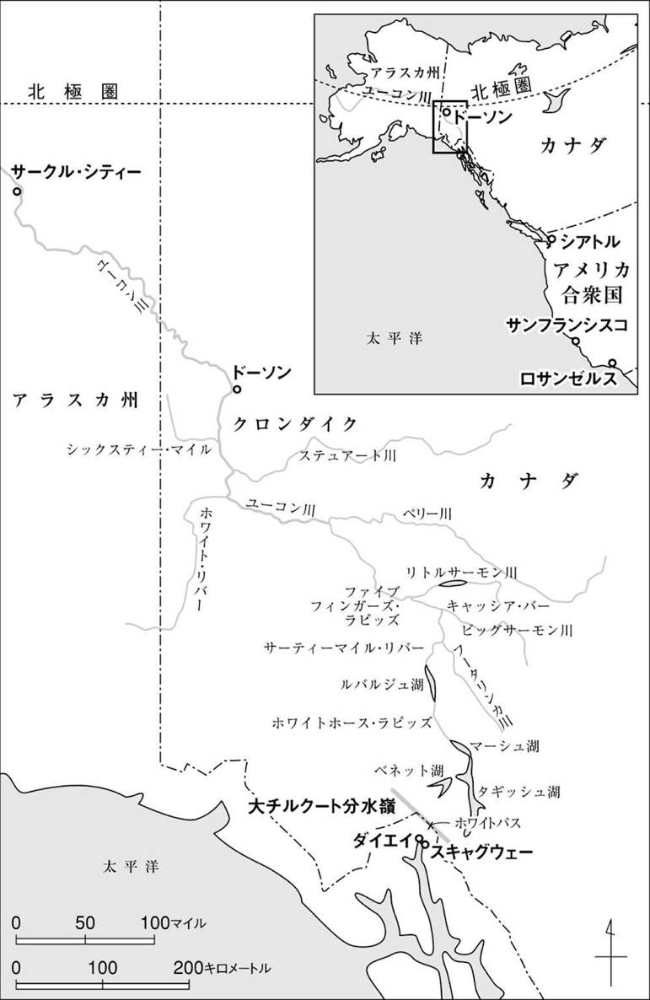

| 野性の呼び声 | |
| ロンドン | |
| (2007) | |
野性の呼び声
ロンドン
深町眞理子訳
Title: THE CALL OF THE WILD
1903
Author: Jack London
『野性の呼び声』 目次
©Mariko Fukamachi 2007
◎ご注意
本作品の全部または一部を無断で複製、転載、改竄、公衆送信すること、および有償無償にかかわらず、本データを第三者に譲渡することを禁じます。
個人利用の目的以外での複製等の違法行為、もしくは第三者へ譲渡をしますと著作権法、その他関連法によって処罰されます。

野性の呼び声
放浪への原始の渇望が湧きあがり、
習慣の鎖にいらだつ。
その冬の眠りよりいまふたたび、
野性の血筋がめざめる。
バックが新聞を読むことはなかった。読んでいたら、厄介な事態が頭をもたげはじめているのに気づいただろう。それも自分だけでなく、ピュージット湾からサンディエゴにいたる合衆国西海岸の犬たち──この海岸一帯のすべての、強健な筋肉と長く暖かな被毛を持つ犬たち──にかかわる厄介事が。というのも、北極の暗黒地帯をさぐっていた人間たちが、しばらく前に黄色い金属を発見し、しかもその発見を、多くの汽船会社や運送会社がいやがうえにもはやしたてたため、何千、何万という人間が、いちどきに〈北方地域〉へと殺到しつつあったからだ。これらの人間たちは、犬をほしがった。そして彼らのほしがる犬というのが、苦役に堪える頑健な筋肉と、極北の厳寒から身を護れる、長い被毛を持った犬だったのである。
バックは、陽光あふれるサンタクララ・ヴァレー（1）の、とある大きな屋敷で暮らしていた。ミラー判事の家、と呼びならわされている。道路からはすこしひっこんだところに、なかば庭木に隠れるように建っていて、それらの木々のあいだから、母家の四方をぐるりとめぐっている、広くて涼しそうなベランダを垣間見ることができる。母家までは、砂利敷きのドライブウェイが通じていて、この道は、高いポプラの木の重なりあった枝の下を、大きくひろがった芝生を縫ってつづいている。いっぽう、母家の裏手は、すべてが正面側よりもさらにゆったりした規模でできていて、大きな厩舎がいくつも建ち並び、周辺では十人を超える馬丁や使い走りの少年たちが、飽きもせず世間話に興じているし、ほかにも、蔦のからまる使用人小屋が幾棟も列をなし、付属の屋外建築がどこまでも整然と並び、細長くのびた葡萄園や、緑の牧草地や、果樹園や、漿果の畑などがひろがっている。さらにその先には、掘り抜き井戸のための揚水装置があって、そばの大きなコンクリートの貯水槽では、ミラー判事の息子たちが、朝がた水浴びをしたり、暑い午後にはそこで体を冷やしたりもする。
そして、これだけの広い領域をわがものとして支配しているのが、犬のバックだった。ここで生まれた彼は、これまでの生涯の四年間を、ずっとここで暮らしてきた。たしかに、ほかにも犬がいることはいる。これほど広い屋敷で、ほかに犬がいないことはありえまい。けれどもそれらは物の数ではない。それらの犬は出入りが激しいし、ごたごたと込みあった犬舎で暮らすか、さもなければ、トゥーツという日本生まれの狆や、イサベルというメキシカン・ヘアレスのように、母家の奥のめだたぬところで、ひっそり生きている──この屋内犬二匹は、めったにドアの外に顔をのぞかせることもなく、地面に足をおろすこともない、という変わった生き物だ。また、それとはべつに、すくなくとも二十頭のフォックステリアがいて、こいつらは、窓からこちらを見ているトゥーツやイサベルを見つけると、相手は箒やモップで武装したメードたちの一連隊に護られているというのに、いまに目に物見せてくれるとばかりに、けたたましく吠えたててみせる。
けれどもバックは屋内犬でもなければ、犬舎の犬でもなかった。この屋敷全体が彼の領土だった。彼は判事の息子たちと貯水槽で泳いだり、いっしょに狩猟に出かけたりした。判事の娘のモリーやアリスが、長い夕暮れどきや早朝の散策に出かけるときには、いつもふたりのお供をしたし、冬の夜ともなれば、音をたてて燃える書斎の暖炉の前で、判事の足もとに寝そべった。判事の孫にあたる幼子たちを背中に乗せたり、芝生でころがしてやったりして遊びの相手もするし、彼らが厩舎の中庭にある泉のほうへ、さらにその先の小さな馬場からベリー畑のほうへと、思いきった冒険に出かけるおりには、おぼつかないその足もとを見まもってやりもした。テリアたちの群れのなかでは、傲然と胸を張って足を運び、トゥーツやイサベルといったやからは、完全に無視していた。なぜなら彼は王だったから。人間をも含めて、ミラー判事の屋敷内で生きるすべての歩くもの、這うもの、飛ぶものの上に君臨する王なのだ。
バックの父エルモは、堂々たる体軀を持つセントバーナードで、判事にとっては、つねに影身に添うて離れぬ伴侶だったが、いまではバックがその父の後釜にすわるという形勢が大だった。とはいえ、体はさほど大きくない──体重は百四十ポンド（2）そこそこ──これは母親のシェップが、牧羊犬のスコッチシェパードだったためだが、それでも、その百四十ポンドに、快適な暮らしと、周囲からあまねく向けられる尊敬の目、そうしたものの生む威厳が加わって、バックはまさしく王侯さながらにふるまうことができた。仔犬のころからの四年間、彼が送ってきたのはつねに満ち足りた貴族の暮らしだった。それゆえ、鼻持ちならぬほどプライドが高いし、ちょっぴり自己中心的なところもある。井のなかの蛙、大海を知らずで、田舎紳士がときとしてこういう弊に陥るが、ちょうどそれとおなじだ。とはいえバックは、それでもよくおのれを律し、けっしてたんなる甘やかされた番犬に成りさがってはいなかった。狩猟その他の屋外での楽しみが、体内の脂肪の量をおさえ、筋肉を鍛えてくれている。それに彼の場合、水浴びを好む他の動物の場合と同様、水を愛することがひとつの強壮剤となり、健康維持にも役だってくれているのだ。
とまあ、ざっとこういったところが、一八九七年の秋に犬のバックが置かれていた状況なのだが、おりもおりとてこの秋は、クロンダイク（3）で金鉱が掘りあてられ、世界じゅうから有象無象どもが、凍てついた〈北方地域〉へと引き寄せられてきている時期だった。とはいえバックが新聞を読むことはなかったし、屋敷の庭師見習いのひとりであるマヌエルが、あまり好ましからざる人物であるのを知ることもなかった。このマヌエルには、ひとつの身にしみついた悪癖があった。中国富くじと呼ばれる不法な賭け事にのめりこんでいたのだ。しかも彼の博奕には、ある弱点がつきまとっていた。ひとつの〝必勝法〟に頼りきるという弱点だが、これが彼の破滅を決定的なものにした。こんな賭けかたをしていては、いずれ元も子もなくすのは知れているし、いっぽう、庭師見習いの給料は、妻や大勢の子供たちを養うのにすら足りない。
マヌエルの背信行為があったその運命的な夜、判事は干し葡萄生産者組合の会合に出ていたし、息子たちは新たなアスレティック・クラブを組織するのに忙しかった。マヌエルがバックを連れて裏の果樹園づたいに出てゆくのを見たものは、だれひとりいなかったし、バック自身もこれを、ただの散歩だと思っていた。さらに、彼らがカレッジ・パークと呼ばれるある小さな信号停車駅にあらわれたところを見たものも、ただひとり、ある男を除いて、だれもいなかった。その男はマヌエルと言葉をかわし、やがて男たちのあいだでちゃりんと音がして、金がやりとりされた。
「こういう品物を届けるんなら、あらかじめしっかり包装しとくもんだ」と、その見知らぬ男は不機嫌に言った。するとマヌエルは、一本のじょうぶなロープをバックの首輪の下に二重に巻きつけた。
「これをひとひねりしさえすれば、喉を思いきり締めあげられるさ」そうマヌエルは言い、見知らぬ男は、ならばいいんだと言いたげに、低くうなった。
バックは穏やかな威厳をもってロープを受け入れた。いかにもこれは尋常ならざる事態ではある。とはいえ、見知りの人間を信頼することを彼は学んでいたし、人間には自分の及ばぬ知恵がそなわっていると信ずるだけの経験もあった。それでも、そのロープの端が見知らぬ男の手に渡ったときには、さすがにぐおっと威嚇的にうなってみせた。たんに不愉快だということをそれとなく知らせただけだが、誇り高い彼にしてみれば、知らせることすなわち命令することなのだ。ところが驚いたことに、首のまわりのロープがいっそう強く締まり、息ができなくなってしまった。かっとして彼は、その男にとびかかっていった。すると男は、得たりとばかりに彼の喉をぐいとつかむなり、みごとな手のひねりで、仰向けに彼を投げとばした。それから、ロープがさらに容赦なく締めあげられ、バックは憤怒にわれを忘れて、めちゃめちゃに身をもがいた──舌を口から長くたらし、たくましい胸をいたずらに波打たせて。これまでの生涯で、こんなにひどい扱いを受けたことはただの一度もなかったし、こんなに腹がたったことも、やはりはじめてだった。なのに、全身からはどんどん力が抜けてゆくし、そのうち目もかすんできて、あとはなにもわからなくなってしまった。だから、信号機の合図で列車が停まって、ふたりの男が彼を荷物車に投げこんだときにも、バックがなにひとつ感じることはなかった。
つぎに気がついたとき、彼がおぼろげに意識したのは、舌がひりひり痛むことと、なんらかの乗り物のなかで小刻みに揺られているということだった。とある踏み切りで、機関車がしゃがれた汽笛を鳴らし、それでバックにも、いまいる場所がどこなのかがわかった。これまでにも判事に連れられて、何度も汽車の旅をしたことはあったから、荷物車に乗せられているときの感覚は心得ていたのだ。目をあけるやいなや、その目には拉致された王者の、おさえてもおさえきれぬ怒りが浮かびあがってきた。男がすかさず彼の喉もとめがけてつかみかかってきたが、バックはその機先を制した。男の手に咬みつき、咬みついたまま、あごの力をゆるめずにいたのだが、そのうち、喉をぎりぎりと締めあげられ、またも意識を失ってしまった。
「あ、いや、こいつ、発作持ちなんだ」物音を聞きつけてやってきた手荷物係りに、咬みちぎられた手を隠しながら男は言った。「ボスの言いつけで、フリスコまで連れてくところなんだよ。あっちに腕のいい犬医者がいて、そこなら治せるって言うもんだから」
その夜の旅の一部始終については、男自身が問わず語りにしゃべりまくった。サンフランシスコの埠頭に近いとある酒場の裏の、小さな物置小屋でのことだ。
「それでたったの五十ドルぽっちだもんな、おれの手にはいったのは」と、男はぶつくさ言った。「もうこんりんざいお断わりだね、たとえ現ナマで千ドルくれると言われてもだ」
男の手には血に染まったハンカチが巻きつけられ、ズボンの右脚は膝から足首まで裂けていた。
「で、相手の野郎はいくらとったんだ？」酒場の亭主がたずねた。
「百だ」男は答えた。「百から鐚一文ひこうとしやがらねえ。ほんとの話だぜ」
「すると、合計して百五十か」酒場の亭主が暗算した。「だけどまああの犬なら、それだけの値打ちはたしかにあらあな。おれの目利きちがいってことはないはずだ」
バックを連れてきた男は、血のにじんだハンカチをはずし、ずたずたになった手を確かめた。「これで狂犬病にでもかかっていなきゃいいんだが──」
「まあだいじょうぶだろうさ──なんてったっておまえは、縛り首になるように生まれついてるんだからよ」酒場の亭主は笑った。それからつけくわえて、「さてと、お神輿をあげる前に、ちょっと手を貸してもらおうか」
目がくらみ、喉と舌との堪えがたい痛みに、なかば生きる力を失いつつも、バックは虐待者たちに立ち向かってゆこうとした。ところが、そのつど投げとばされて、息も絶えだえになっているそのあいだに、男たちは鑢を使って、どうにか彼の首から頑丈な真鍮の首輪をとりはずした。つづいてロープが解かれて、彼は檻に似た木枠のなかにほうりこまれてしまった。
怒りと傷つけられた誇りとをかかえて、バックは我慢のならぬその一夜の残りを、この木枠のなかに横たわって過ごした。いったいこれがどういうことなのか、まるきり理解できなかった。あのふたりの見知らぬ男たちは、この自分をどうしようというのだろう。なぜこのような狭苦しい木枠のなかにとじこめておくのだろう。わけがわからなかったが、それでも災厄がさしせまっているのを漠然と感じとって、それに押しつぶされそうな気分でいた。その夜のうちに、小屋の戸が何度かがたがたとひらいて、そのつど判事か、でなくばせめて判事の息子たちの顔が見えるものと期待して、はねおきた。だが、いつ見ても、獣脂蠟燭の投げかける弱々しい光のなかでこちらをうかがっているのは、酒場の亭主のぼってり肥った顔。そして、そのたびにバックの喉の奥でふるえていた歓喜の叫びは、ねじまがって、猛々しいうなりへと変わってゆくのだった。
それでも、酒場の亭主がそれ以上バックにかまうことはなく、朝になると、四人の男がどやどやとやってきて、木枠を持ちあげた。こいつらもこの自分を苦しめるものたちだ、とバックは見てとった。どれも凶悪な人相をして、ひげは伸びほうだい、身なりもだらしない男ども。そこで、檻に突進して、枠ごしに猛然と吠えついてやったのだが、男どもはただ声をあげて笑って、棒をつっこんでき、こちらをつつこうとするだけだ。すかさずバックはこの棒に嚙みついてやったが、そのうち、それこそがまさに男どもの期待していることだと気づいた。だから、その後はただむっつり横たわって、檻が荷馬車に積みこまれるのにまかせ、こうして彼と、彼の押しこめられた木枠の檻とは、いくつもの手から手を経て移動してゆくことになった。まず、運送会社の係員の手に託され、つぎに、べつの荷馬車で運ばれた。つづいて、ほかの雑多な箱や小包ともども、手押し車で運ばれて、汽船のフェリーに乗せられた。それからまた手押し車でフェリーから降ろされ、どこかの大きな鉄道貨物集積場へと運びこまれ、最後にようやく、ある急行列車の貨物車に乗せられた。
それから二日二晩というもの、この貨物車は、かんだかい汽笛を発して走る機関車にひかれて、列車の最後尾を延々と走りつづけ、そしてその二日二晩というもの、バックは飲みも食いもしなかった。はじめのうちは、この急送便会社の配達人たちが近づこうとするたびに、怒りにまかせて激しいうなり声を浴びせ、向こうも彼をからかうことで、やりかえしてきた。彼が憤怒に身をふるわせ、口から泡を噴いて木枠にぶつかってゆくと、男たちは彼をあざけり、笑いはやす。下等な犬どもさながら、男たちはうなったり、吠えたりしてみせ、さらには猫の鳴き真似をしたり、鶏よろしく腕をばたばたさせて、こけこっこーと時をつくってみせたりする。どれもこれも、じつにばかげたしわざだとバックにはわかっているが、なればこそ、いっそう尊厳が踏みにじられた気がして、憤りはつのるばかり。空腹はさほど気にならないものの、水が飲めないことは、ことのほか彼の苦しみを増し、怒りを極限まであおりたてた。いや、そのかぎりでは、もともと敏感で、繊細な神経をそなえたバックだったから、こうした虐待によって、ある種の熱病に似た状態におとしいれられ、しかもその熱病に、いまや腫れあがって炎症を起こしている喉と舌とが、いっそう火をそそぐのだった。
ただ、ひとつだけ、ほっとしたことがあった。首のロープがとりはずされたことだ。そのロープのおかげで、これまで人間どもは不当に優位に立っていたのだから、それさえなければ、もうこっちのもの。もはや二度とこの首にロープなどかけさせはしないぞ、そうバックはかたく決意した。こうして二昼夜、飲まず食わずでいて、そしてその二昼夜、塗炭の苦しみを味わっているあいだに、彼はひたすら憤怒をためこんでいったから、だれであれ、つぎに彼をいらだたせることになる人間にとっては、これが災厄の種となるだろうことは目に見えていた。いまや目を真っ赤に血走らせ、一個の怒り狂う悪鬼と化したバック。その変貌ぶりたるや、たとえ判事がいま彼を見たとしても、とうてい見分けがつかなかったろう。そんなわけで、やがてシアトルに着き、そそくさと彼を貨物車から降ろしたときには、急送便の配達人たちも、ほっと安堵の吐息を漏らしたのだった。
そこから荷馬車で運ばれたバックの檻は、四人の男たちの手でおそるおそる荷台から降ろされ、とある小さな、高い塀でかこまれた裏庭へ運びこまれた。ひとりのがっしりした、首まわりの伸びきった赤いセーターを着た男が出てきて、荷馬車の御者がさしだした帳面に受領のサインをした。この男こそ、つぎに自分を苦しめるやつだ。そう本能的に見てとったバックは、荒々しく檻の木枠に体当たりを食わせた。男は無気味ににんまり笑うと、どこからか手斧と棍棒とをとってきた。
「まさか、この場でそいつを出すんじゃないだろうな？」と、御者がたずねた。
「出すともさ」男はそう答えて、手斧を梃子がわりに木枠のあいだに押しこんだ。
檻を運んできた四人の男は、蜘蛛の子を散らすように逃げだすと、それぞれ塀のてっぺんという安全な地点から、高みの見物と決めこんだ。
枠の木が裂けだすと、バックはそこへむかって突進し、がっきとそれに牙を突きたてるなり、激しく身をくねらせつつ、それをもぎとろうとした。手斧が枠の外側に打ちおろされるつど、彼はいちはやくその内側へ行って、歯をむきだし、うなり声を響かせた。赤いセーターの男が、落ち着きはらって彼を外に出そうとしているのと反対に、バックのほうは、一刻も早く檻から出ようとして焦り狂っていた。
「さあこい、この赤目の悪魔め」そう男が言ったのは、木枠がこじあけられ、どうにかバックの体が通り抜けられるほどの隙間ができてからだった。言うが早いか、男は手斧をほうりだし、棍棒を右手に持ちかえた。
バックはまさしく赤目の悪魔だった──全身の毛を逆だて、口から泡を噴き、血走った目を狂気にぎらつかせて、いままさにとびかかろうと身構えるそのようすは。それから、二日二晩にわたって積もり積もった怨念をその一身にたぎらせ、男めがけてまっしぐらに百四十ポンドの体重をぶつけていった。だが、その体がまだ空中にあり、あごが男をくわえこむ寸前に、いきなり強い衝撃を受けて、彼の突進は食いとめられ、思わずすくみあがるほどの痛みとともに、上下の歯ががちっとぶつかった。体が一回転して、背中と脇腹が地面にたたきつけられた。生まれてからいままで、棍棒で打たれたことなど一度もなかったから、打たれたこと自体が理解できなかった。吠えるというより、むしろ悲鳴に似たうなり声をあげてはねおきるや、彼はふたたびとびかかっていった。そして、またしても衝撃を受け、屈辱的に大地にたたきつけられた。今回は、棍棒でやられたことだけはわかったものの、頭に血がのぼっているいまは、だからといって用心することなど、思いもよらなかった。その後も十回以上、くりかえし突撃を試みたが、そのつど棍棒で突進を食いとめられ、たたきのめされた。
そのうち、とくに強烈な一撃を食らって、どうにか這いずるようにして立ちあがりはしたものの、すっかり目がくらんで、もはや突進力はなくなっていた。足をひきずりひきずり、あたりをよろめき歩くうちにも、鼻から、口から、耳から、血が噴きだしてきて、血のまじった唾液が飛び散り、美しい毛並みをまだらに染めた。そこを見すまして、男はずいと歩みでるなり、鼻面にとりわけ強烈な、狙いすました一撃をくれた。これまでに堪えてきたありとあらゆる苦痛も、その一撃のもたらした究極の苦痛とくらべれば、物の数ではなかった。ライオンのそれもかくやと思われるすさまじい咆哮とともに、バックはふたたび力を奮い起こし、男にぶつかっていった。けれども男はすばやく棍棒を左手に持ちかえるや、落ち着きはらってそのバックの下あごをむんずとつかみ、つかむと同時に下へ、そして後ろへとひねり倒した。バックの体は空中で完璧な円を描き、そのうえさらにもう半回転して、頭と胸とを下に、地面にたたきつけられた。
それでもバックは、最後の力をふりしぼって、もう一度とびかかっていった。待ち構えていた男は、ここでひときわ痛烈な打撃をもって応じてき、打ちひしがれたバックは、ついに完全に意識を失って、くたくたとくずおれた。
塀の上の男のひとりが、「すげえもんだな、犬をたたきのめすことにかけちゃ、いっさい手抜きはしねえってやつだ」と、興奮して叫んだ。
「おれだったら、カイユース（4）を馴らすほうがいいな。それなら毎日だってやってやるし、日曜には二回やったっていいけどよ」そう言って、御者はそそくさと荷馬車にもどると、馬を急がせて走り去っていった。
やがてバックは意識をとりもどしたが、力はもどってこなかった。くずおれたその場所に横たわったまま、ただ赤いセーターの男を見まもっているしかなかった。
「『名はバックというそうだ』か」男が芝居の脇台詞めかしてつぶやいた。木枠の檻とその中身について、酒場の亭主が託した手紙を引用したのだ。それから、「ようし、それじゃあバック」と、愛想よくつづけて、「いまおれたちは一騒動やらかしたわけだが、そういったことは、これきりさらりと忘れるのがいちばんいい。おまえは自分の身の程を知っただろうし、おれも自分の分際はわきまえてる。おとなしくしてろ。そうすりゃ万事は順調、丸くおさまるってわけだ。だがおとなしくしないと、そのときはまたこっぴどくぶちのめしてやるから、そう思えよ。わかったな？」
しゃべりながら、男はたったいま容赦なく殴りつけたばかりの頭を、恐れげもなくぽんぽんとたたいた。触れられて、おのずと毛並みが逆だったが、それでもバックは抵抗を控え、愛撫されるのに堪えた。やがて男が水を持ってくると、それをむさぼるように飲み、そのあとはまた男の手からじかに与えられる大量の生肉を、一切れ、また一切れ、がつがつとたいらげていった。
彼はたたきのめされた（そのことはわかっていた）。だが、心まで打ちのめされたわけではなかった。棍棒を持った人間には勝ち目がないということ、この一事をこのときかぎり、深く肝に銘じたというだけのことだ。教訓としてこのことを胸に刻みこんだ彼は、以後、終生それを忘れることがなかった。男の棍棒は、ひとつの啓示であった。それは原始の掟が支配する領域への第一歩であり、そこへの途中で、いまその掟の洗礼を受けたのだ。この避けがたい生の実態は、やがて、より苛酷な様相を帯びてくるが、そうした局面に恐れることなく立ち向かってゆきながらも、同時に彼はそれを、生まれ持った本性が呼びさましてくれた、隠れたる抜け目のなさで受けとめてゆくことになる。
日がたつにつれ、ほかにも多くの犬たちが、檻に入れられたり、ロープにつながれたりして、ここへやってきた。おとなしいのもいれば、バック自身がそうだったように、怒り狂い、吠え哮るのもいたが、それらもみな最後には、赤いセーターの男の支配を受け入れる。そのようすをバックはよそながら見まもり、そして、そうした情け容赦のない儀式が何度となくくりかえされるうちに、ここで身につけた教訓は、いよいよ深く胸にたたきこまれていった。棍棒を持った人間は、掟を定めるものであり、必ずしも心服するには及ばぬにせよ、ひとまずしたがわねばならぬ主人である、との教訓。この〝心服するかせぬか〟という点に関するかぎり、バックはなんらわが身に恥じる行為はしていなかった。たたきのめされた犬たちが、男にへつらい、尾をふり、その手をなめるのはたびたび目にしていたし、またいっぽうでは、男に手なずけられることも、その支配を受け入れることも、ふたつながら拒みとおしたある犬が、主権をめぐる男との争いのなかで、ついに撲殺されるのも目撃していたけれども。
そうこうするうちにも、ときおり見知らぬ男たちがあらわれて、赤いセーターの男を相手に、熱弁をふるったり、男の機嫌をとったり、男を口車に乗せようとしたりした。そしてそのあげくに、金のやりとりがあって、見知らぬ男たちは犬のうちの一頭を、ときには何頭かを連れて立ち去る。連れ去られた犬たちは、どこへ行くのだろう、とバックは思いめぐらした。というのも、彼らがもどってくることは二度となかったから。それはともかくとしても、自分の将来への不安は、バック自身の場合もやはり強かったから、男たちに選ばれずにすむたびに、いくらか胸をなでおろすのだった。
けれどもついに、彼の番がやってきた。あらわれたのは、小柄な、しなびた男で、バックには理解できないブロークンな英語をしゃべり、粗野で奇妙な感嘆詞を連発した。
バックに目をとめるやいなや、男は叫んだ。「驚いたもんだ！ あいつだよ、あのすンばらしいやつ！ なあ？ いくらでえ？」
「三百だ、ただ同然だぜ」すかさず赤いセーターの男が答える。「それに、どうせ政府の金なんだろうから、多少高くても、文句が出る気遣いはない。だろ、ペロー？」
ペローはにやりと笑った。このところ、いつになく犬の需要がふえて、値段もうなぎのぼりだから、これだけの犬に三百というのも、けっして不当な高値ではない。それでカナダ政府が損をすることはないはずだし、政府の急送便も、その分、速く着くというものだ。ペローは犬にかけては目利きだったから、バックを目にしたとたん、これが千頭に一頭の犬だと見てとっていた。「いや、一万頭に一頭だな」と、心のなかで訂正する。
男たちのあいだで金がやりとりされるのをバックは見ていた。だから、気だてのよいニューファウンドランド犬の〝カーリー〟と、ほかならぬ自分とが、その小柄でしなびた男に連れだされることになったときにも、とくに驚きはなかった。赤いセーターの男を見たのは、このときが最後だった。また、カーリーと並んで〈ナールワル〉号のデッキから、しだいに遠ざかってゆくシアトルの街並みをながめたときには、それが温暖な〈南国〉の見おさめともなった。それから、カーリーと彼はペローの手で下へ連れてゆかれ、黒い顔をしたフランソワという大男に預けられた。ペローはフランス系カナダ人で、肌の色は浅黒かったが、フランソワは半分だけフランス系カナダ人の血をひいていて、さらに二倍も色が黒かった。ふたりとも、バックにとっては新しい種類の人間だったから（今後もこういう人間とはもっと出あうことになる）、まるきり親しみなど持てなかったが、それでもやがて、心の底からの尊敬の念をいだくようにはなった。すぐにわかってきたのだが、ペローもフランソワも公正な人間であり、判断をくだすにあたっては、冷静で、かつ依怙贔屓がなく、しかも犬のことならなんでもよく知っていて、だから犬にばかにされるということもない。
〈ナールワル〉号の中甲板で、バックとカーリーとはほかの二頭の犬といっしょになった。一頭は大型、ノルウェーはスピッツベルゲン諸島生まれの真っ白なやつで、そこからはある捕鯨船の船長によって連れだされ、その後はある地質調査隊に加わって、カナダの〈不毛地帯〉へも出かけたことがある。愛想はいいが、油断のならぬところがあり、にこやかにほほえみかけてくるいっぽうで、なにか陰険なことをたくらんでいるといったふぜい。いい例が、最初の食餌のときに、さっそくバックの分を横どりしたことだ。バックは報復してやろうとしてとびかかったが、それより早く、フランソワの鞭が空中でぴしりと鳴って、その盗人めを打ち据えた。あとはバックが自分の骨をとりもどすだけのことだ。これはフランソワの公平さを示すものと判断でき、以後、バックの評価のなかで、この混血の男の点数は高くなっていった。
もう一頭のほうは、自分のほうからは近づいてこず、相手を寄せつけようともしなかった。新来の仲間から、食餌を盗んで食おうとすることもなかった。陰気な、気むずかしげなやつで、早々にカーリーにむかってはっきりさせたのは、自分の望みはほうっておいてもらうこと、それだけであって、もしそっとしておいてもらえないようなら、面倒なことになるぞ、ということに尽きた。名前は〝デーヴ〟。こいつはただ食っては眠り、あいまにときおりあくびをするだけで、何事にも興味を示さず、その無関心ぶりたるや、〈ナールワル〉号がクイーン・シャーロット海峡を横ぎって、船が悪魔に取り憑かれでもしたように、縦揺れ、横揺れをくりかえしはじめたときにも、いっこうに変わらなかった。バックとカーリーが恐怖と興奮のあまり半狂乱に陥っても、デーヴはうるさそうに頭をもたげて、おもしろくもなさそうな一瞥をくれ、あくびをひとつしただけで、また眠ってしまったほどだ。
日ごと夜ごと、船はスクリューの疲れを知らぬ鼓動にのって、ごとごとと単調に進みつづけた。毎日が前後の日々とまったく区別がつかないそうした明け暮れのなかで、それでも気候だけは着実に寒いほうへと向かっていること、これはバックにもはっきり感じとれた。そして、ついにある朝、スクリューの振動が停まり、〈ナールワル〉号の船内いっぱいに、静かな興奮がひろがっていった。バックはそれを感じたし、ほかの犬たちも感じた。そしてさとった、変化がやってこようとしていることを。
フランソワが犬たちに引き綱をつけ、デッキに連れてあがった。そこの冷たい表面に第一歩を踏みだしたとたん、バックの足はなにか泥のような、白くてやわらかな物質のなかに沈んだ。思わずぶるると鼻を鳴らして、バックはとびのいた。その物質とおなじ白いものが、さらに空からも降ってきていた。払いとばそうとして体をふるってみたが、それはあとからあとから降りかかってくるばかり。好奇心に負けてそのにおいを嗅ぎ、ついで舌を出して、なめてみた。それは火花さながらに舌を刺し、と思ったときには、もう消えていた。なんなんだ、これは？ もう一度やってみたが、結果はおなじだった。はたで見ていた人間どもがどっと笑いだし、彼は少々きまりわるくなったが、なぜ笑われるのかは理解できなかった。なんといってもこれは、彼の経験するはじめての雪だったのだから。
1 カリフォルニア州中部、現在のシリコン・ヴァレーの一部に当たる。 （本文へ戻る）
2 一ポンドは約〇・四五キロ。したがって百四十ポンドは約六十三キロ。 （本文へ戻る）
3 アラスカとの国境に近いカナダの金鉱。十九世紀末、アラスカ・ゴールドラッシュの発祥地となった。 （本文へ戻る）
4 インディアンの使う小型で丈夫な馬。 （本文へ戻る）
ダイエイ海岸でのバックの生涯の第一日めは、悪夢そのものだった。一分一秒がショックと驚愕との連続だった。なにしろ、いきなり文明そのものの中心からひきずりだされ、原初なるものの中心へとほうりだされたのだ。ここには、陽光を一身に浴びての怠惰な生活、日がな一日ぶらぶらして、退屈に暮らすというだけの生活は存在しなかった。平和もなく、安らぎもなく、それどころか、一瞬の安全すらもない。すべてが混乱と闘争とのさなかにあり、命も、身の安全も、時々刻々におびやかされている。つねに警戒を怠らずにいること、これが生きるのには喫緊の要事なのだ。なぜならここでは犬たちも人間どもも、街の犬や人間とは別種の生き物なのだから。そろいもそろって野蛮で、残忍で、棍棒と牙の掟以外に、掟というものを知らぬ連中。
ここの狼然とした犬どもが闘うような、そんな闘いをバックが目撃したのははじめてだった。だから、最初にそれと遭遇したときの経験は、忘れられぬ教訓を彼にたたきこんでくれた。それがバックのじかに体験したことではなかったのは事実だ。そうでなければ、彼が生きのびて、それを他山の石とすることなどできなかっただろうから。犠牲者はカーリーだった。彼ら一行は、海岸の丸太集積場の近くにキャンプを張ったが、そこでカーリーが、例によってひとなつっこく、近くにいた一頭のエスキモー犬に近づいていったのだ──体の大きさは狼の成獣ほどもあるが、それでもカーリー自身の半分もない。と、ふいになんの前ぶれもなく、閃光のような跳躍、かちっと金属的な歯の音、おなじようにすばやい後退。そしてカーリーの顔面は、目から口もとまで、べろりと引き裂かれていた。
いきなり攻撃して、すかさずとびのく──これは狼流の闘いかただったが、じつはこれすらも、ほんの序の口だった。三十頭から四十頭ものエスキモー犬がいっせいにその場に駆け寄ってくるなり、なにやら不穏な、張りつめた沈黙のうちに、相対する二頭をぐるりと取り巻いたのだ。その沈黙の不穏さがどこからくるものか、バックにはわからなかったし、みんながそんなにもものほしげに、舌なめずりさえしながらなにを待っているのか、それもわからなかった。怒ったカーリーが敵に突進していったが、相手はまたもや一撃するや、すばやく脇にとびのいた。つぎなるカーリーの突進を、そいつは胸で受けとめたが、そのとき、妙な角度で体をひねったので、カーリーは足をもつれさせ、ころんでしまった。それきり彼女が立つことはなかった。カーリーがころんだ──これこそがまさに、周囲で見ているエスキモー犬たちの待ち構えていた一瞬だったのだ。彼らは歯をむきだしてうなったり、きゃんきゃん吠えたりしながら、四方八方からカーリーに襲いかかり、たちまち彼女は苦痛の悲鳴とともに、毛を逆だててひしめきあうその山の下敷きになってしまった。
あっというまの、しかもあまりに思いがけない出来事だったから、バックはただ呆然と立ちすくむばかりだった。〝スピッツ〟──あのスピッツベルゲン生まれの白いやつ──が、いつもほくそえむときに見せるしぐさで、真っ赤な舌をぺろりと出すのが見え、いっぽうフランソワが、手斧をふりまわしながら、犬の群れのなかにとびこんでゆくのも見えた。さらに男が三人、棍棒を持って駆けつけ、フランソワに加勢して群れを追い散らした。カーリーがころんでからわずかに二分、攻撃に加わった犬たちは残らず追い払われたが、文字どおりずたずたにされたカーリーの体は、踏み荒らされた血と雪の上に横たわったままぴくりとも動かず、黒い肌の混血児がそのそばに立ちはだかって、むやみに悪態を吐き散らしているばかりだった。
このときの光景は、その後もたびたびバックの夢にあらわれて、彼を悩ませた。なるほど、ではそういうことなのか。フェアプレーなど、薬にしたくもない。いったんころんだら、それで一巻の終わり。よし、ならばぜったいにころんだりせぬように気をつけよう。スピッツがまた舌を出して、笑った。そしてこの瞬間からのち、バックは終生やむことのない痛烈な憎しみをもって、このスピッツを憎むことになる。
カーリーの悲劇的な死がもたらしたショックからまだ立ちなおれずにいるうちに、バックはひきつづきまた新たなショックを受けることになった。フランソワがなにやら革帯とバックルでできた仕掛けを持ってきて、彼の体に巻きつけたのだ。引き革だった。判事の屋敷にいたころ、馬丁が馬たちにとりつけるのを見たことがある。それをつけられて、馬たちが働くのを見たこともあるが、その馬たちと同様、いまやバックも働かされることになったのだ。橇にフランソワを乗せ、谷の周辺の森までひいていっては、薪を山と積んで、またもどってくる。駄馬でもあるまいし、これにはいたく自尊心を傷つけられたが、ここで反抗するほど、バックも愚かではない。なにもかも未知のこと、未経験のことばかりだったが、それでも彼は本腰で仕事にとりかかり、全力をそれに傾注した。フランソワはきびしく、すぐに服従することを要求したし、またその要求は、鞭をふるいさえすれば、即刻かなえられた。いっぽう、熟練した後犬（5）であるデーヴは、バックがへまをやるたびに、尻に咬みついて、訓戒をたれたし、スピッツは先導犬で、デーヴ同様に経験豊富、位置の関係から、そのつどバックに制裁を加えるというわけにはいかないものの、ときおりぎゃーっと非難のうなり声を浴びせてきたり、それとなく引き革に体重をかけてみたりして、行くべき方向へとバックを誘導する。バックはのみこみが速く、二頭の仲間とフランソワとの一致協力しての指導のもと、いちじるしい進歩を示した。実際、キャンプにもどるまでに、「ホウ」が〝停まれ〟、「マッシュ」が〝進め〟を意味することをいちはやく理解していたし、曲がり角では大きく弧を描いて曲がることや、荷物を満載した橇をひいて坂をくだるさいには、後犬の邪魔にならぬよう、位置どりに配慮すること、なども覚えてしまっていた。
「三頭とも、すンばらしくいい犬だぜ」と、フランソワがペローに言った。「なかでもあのバックってェやつ、手を抜かずに遮二無二ひっぱる。しかも、教えたこたァたちまち覚えちまうしな」
その午後には、急送便を託されて出発を急いでいるペローが、さらに二頭の犬を手に入れてきた。名は〝ビリー〟と〝ジョー〟。この二頭は兄弟で、どちらも純粋なエスキモー犬だが、おなじ母親の腹から生まれた息子たちなのに、性格には昼と夜ほどのちがいがある。ビリーの欠点のひとつが、過剰なほどの気だてのよさだとすれば、ジョーのほうは、それとは正反対。気むずかしく、陰険で、たえず歯をむきだしてうなり、目つきにはたっぷり悪意がこもっている。バックがこの兄弟を朋輩として迎え、デーヴは二頭を完全無視したのにたいし、スピッツはまずビリーに、ついでジョーにたいして実力を示しにかかった。ビリーはお愛想に尻尾をふってみせたが、迎合しても無駄だとさとるや、さっさと背を向けて逃げだし、スピッツの鋭い歯が脇腹に食いこんできても、なおも（なだめるように）鳴き叫ぶだけだった。ところがジョーのほうは、スピッツが隙を狙ってどれだけ周囲をぐるぐるまわっても、すぐさま向きを変えて、それに向かいあう。首毛を逆だて、耳を寝かせ、くちびるをめくりあげてうなる。歯をせいいっぱいの速さでがちがち嚙み鳴らし、両眼を悪鬼のごとくぎらつかせて──まさしく闘争心と恐怖の権化といったところだ。その形相のあまりのすさまじさに、さすがのスピッツも三舎を避けたか、このジョーに制裁を加えるのはあきらめざるを得ず、その狼狽を取り繕おうと、あらためて、弱々しく鳴き叫んでいるだけのビリーに向かってゆき、とうとうキャンプの囲いの外にまで追いだしてしまった。
夕刻には、ペローがまた一頭、犬を連れてきた。年功を積んだエスキモー犬で、細長く痩せた体はごつごつと筋ばり、顔には闘争の傷跡、そして隻眼。だがそのひとつだけの目が炯々と光って、抜きんでた力量を示し、敬意を払うことを周囲に要求している。名は〝ソルレクス〟──〝怒れるもの〟の意だ。デーヴとおなじく、なにももとめず、なにも与えず、なにも期待しない。それでいて、彼がゆっくりした落ち着いた足どりで、まっすぐ一同のまんなかへ踏みこんできたときには、スピッツでさえ、あえて手出しは控えたほどだ。
このソルレクスには、ひとつだけ変わった癖があって、運悪くバックがそれを発見する役まわりになった。見えない目の側から近づかれるのを嫌うというもので、はからずもこの過ちを犯してしまったバックが、はっと自分の軽率さに気づいたときにはすでに遅し、ソルレクスがいきなり向きなおったと見るや、こちらの肩は上から下まで三インチほど、骨まで達する深さに咬み裂かれていた。以来、バックは心してソルレクスの見えない側を避け、朋輩同士でいたあいだ、二度とトラブルは起こさなかった。ソルレクスの傍目にも明らかな望みといえばただひとつ、これもデーヴ同様に、他から干渉されずにいたいというものだった。もっとも、のちにバックが知ることになるように、それ以外にもこの二頭は、それぞれべつの、より死活にかかわる望みをかかえていたのだが。
その最初の晩、バックは眠るという大問題に直面した。テントのなかには蠟燭がともされ、一面の白い広野のまんなかで、暖かそうな光を放っていたから、当然のようにそこへはいっていったところ、いきなりペローとフランソワの両方から、罵声と調理器具との両方を雨あられと投げつけられ、しばらく仰天して立ちすくんでいたあと、ほうほうのていで寒い外へとのがれでるはめになった。外には身を切るような冷たい風が吹きすさび、傷ついた肩にその冷たさがとりわけしみた。やむなく雪面に横たわり、眠ろうとしてはみたものの、じきに寒気に追いたてられて、ふるえつつ立ちあがるはめになった。みじめな、やるせない気分で、ほかのたくさんのテントのあいだをうろうろしてみたが、結果は、どこへ行こうと寒さは変わらないということがわかっただけ。あちこちで、獰猛な犬たちに攻撃をかけられもしたが、こちらが首毛を逆だててうなってみせると（こうすることを、いちはやく学習していたのだ）、向こうも手出しはせずにすませた。
そのうち、ようやくある考えが浮かんだ。ひきかえして、チームメートたちがこの苦境をどうしのいでいるか、見てみよう。ところが驚いたことに、仲間は一頭残らず姿を消している。もう一度、仲間を探して広いキャンプ地のなかをうろうろし、もう一度、もとのテントのそばに舞いもどった。みんなはテントに入れてもらっているのだろうか？ いや、それはありえない。それならこの自分が追いだされることもなかったはずだ。いったいみんなはどこへ消えてしまったのだろう。尾をたれ、がたがたふるえながら、どうしようもなくみじめな気分で、あてもなくテントの周辺を歩きまわった。と、とつぜん、前足の下の雪が陥没して、半身がその穴に落ちこんでしまった。足の下でなにかがうごめいている。あわててとびすさった。見えないもの、未知のものへの恐怖から、思わず首毛を逆だて、うなり声を漏らしたとき、心安げに小さくきゃんと鳴く声がしたので、意を強うして、委細を調べにひきかえした。暖かな空気が、もわっと鼻先に立ちのぼってきた。見れば、その雪の穴の底に、ビリーがボールのように心地よげに体を丸めて寝ている。彼はなだめるようにくーんと鼻を鳴らし、悪意がないことを示すため、もぞもぞ、くねくねと身をのたくらせてみせ、あまつさえ、その温かな、濡れた舌で、お愛想にバックの顔をなめることまでした。
また新たな教訓。なるほど、ではこんなふうにしてみんなは眠るのか。自信をもって、とある地点に狙いを定めたバックは、慣れないこととてだいぶ労力を無駄にしながらも、奮闘努力の結果、自分の寝穴を掘りあげた。たちまちのうちに、体から発する熱がその狭い空間を満たし、彼は眠っていた。長く、つらい一日だったから、眠りは深く、心地よかった。それでも、何度か悪夢にうなされ、うなったり、吠えたり、身をもがいたりはしたけれども。
ようやく目をあけたのは、めざめてゆくキャンプ地の、さまざまな物音に起こされたときだった。はじめは一瞬、自分がどこにいるのか見当もつかなかった。夜のあいだにさらに雪が積もり、寝穴がすっぽりおおわれていたのだ。雪の壁が四方八方から迫ってくるようで、とてつもない恐怖が怒濤のように全身に荒れ狂った──罠にかかることにたいして、野生のものがいだく恐怖。これはひとつの証左だった──彼がいつのまにか自分本来の生をさかのぼり、先祖のそれへと逆行しつつあるというあかし。なぜなら彼は文明化された犬、それも過度に文明化された犬であって、自身の経験だけでは、罠などというものを知るべくもなく、したがって、それへの恐怖心を持つこともありえなかったのだから。全身の筋肉が本能的に、また痙攣的に収縮し、首の毛、肩の毛が逆だった。そして狂暴な咆哮もろとも、彼はまっすぐ上方へ、まばゆい白日のなかへと跳躍した。雪がきらめく雲となって、周囲一面に飛び散った。着地するより早く、眼前に白いキャンプ地がどこまでもひろがっているのが見てとれた。そして、自分がいまどこにいるのかを思いだし、と同時に、いつかマヌエルとともに散歩に出たあのときから、雪のなかにこの寝穴を掘ったゆうべまでのあいだに、わが身に起きたことどものすべてをも思いだしたのだった。
雪の下からとびだした彼を、フランソワの歓声が迎えた。「なあ、言っただろ？」と、ペローにむかって犬橇の御者は叫んだ。「あのバックってえやつ、すンばらしくのみこみが速いぜ」
ペローは重々しくうなずいた。カナダ政府の急送便送達吏として、大事な速達貨物を運ぶのだから、橇犬もぜひ最良のものを選びたい。その意味でも、彼はバックを手に入れられたことに、ことのほか満足していた。
一時間たらずのうちに、さらに三頭の犬がチームに加えられ、合計九頭となった橇犬たちは、それからわずか十五分ほどで、めいめい引き革をつけられ、ダイエイ峡谷へむかって、雪の山道を威勢よく走りだしていた。バックは体を動かせることがうれしかった。仕事そのものはきつかったが、さりとて、とくにそれを嫌う気持ちもなかった。驚いたのは、チーム全体に活気がみなぎり、それが自分にも伝わってくることだったし、それよりもっと意外だったのは、デーヴとソルレクスの両方に生じた変化だった。引き革をつけられるや、彼らは完全に変貌して、いまではまるきりべつの犬のようだった。それまでの無気力、無関心はどこへやら、敏捷で、活発で、仕事がうまくいくことだけを念願し、なんであれ、遅延や混乱によって、その仕事を阻害するものがあれば、ひどく腹をたてる犬たち。まるで、こうして引き革につながれ、労苦にあえぐことこそが、彼らの最高の生き甲斐であり、そのためだけに彼らは生き、またそれが彼らの喜びを見いだす唯一のものでもある、そんなふうにさえ思える。
デーヴは後犬、つまり橇のすぐ前を行く犬で、その前を行くのがバック、さらにその前がソルレクスだった。残りは先導犬まで長く一列につながれ、その先導犬の位置を占めるのが、スピッツである。
バックは意図的にデーヴとソルレクスのあいだに置かれたが、これは前後の二頭から指南を受けるためだった。彼が出来のよい生徒であれば、彼らもまた同様に有能な師であり、彼がちょっとでもへまをやって、ぐずぐずしようものなら、たちまち二頭がそろって鋭い歯でその誤りを正しにかかる。デーヴは公平で、しかも賢いことこのうえなかった。理由もなくバックを咬むことはけっしてないが、それでも正すべきことがあれば、躊躇なく咬む。おまけに、フランソワの鞭という後ろ楯が彼にはついているので、バックも報復を考えるよりは、自分の欠点を改めたほうが得だ、とじきにさとった。一度、小休止をとったとき、彼が引き革をもつれさせ、出発が遅れたことがある。すぐさま、デーヴとソルレクスとがそろってとんできて、こっぴどく彼に制裁を加えた。結果として、引き革のもつれはいっそうひどくなったが、それでも、以後バックは万全の注意を払って、もつれを生じさせないように努力し、その日が暮れないうちに、早くも仕事をじゅうぶんマスターしてしまっていた。だから、朋輩たちからいじめられることもほぼなくなったし、フランソワの鞭が鳴る回数も減った。ペローなどはあろうことか、バックの足を持ちあげて、入念に検めるという栄誉さえ与えてくれたほどだ。
その日の走りは、一日行程としては苛酷なものだった。まず峡谷をのぼりつめ、シープ・キャンプを抜け、スケールズ峠と森林限界線を踏破し、多数の氷河を渡り、深さ数百フィートにも及ぶ雪の吹き溜まりを横ぎり、大チルクート分水嶺を越える。この大分水嶺は、〈鹹水域〉と〈淡水域〉とのあいだに立ちはだかり、近寄りがたい雰囲気をたたえて、物悲しく孤独な〈北方地域〉を護っているのだ。一連の死火山の噴火口に連なる湖水づたいに、下り斜面を飛ぶように駆けおりた一行は、その日の夜遅くには、ベネット湖の奥にひろがる広大なキャンプ地にたどりついていた──おりしも、数千人にも及ぶ金鉱探しの男たちがたむろして、春の解氷期にそなえてボート造りに精を出している土地だ。到着するや、バックは雪に穴を掘り、疲労困憊して泥のように眠ったが、眠ったと思うまもなく、まだ暗いうちからたたき起こされて、身も凍る寒さのなかで、またもチームメートとともに橇につながれた。
その日は四十マイル（6）進んだが、それは雪道が踏みかためられていたからで、あいにくその翌日と、さらにその後は幾日にもわたって、自分たちで道を切りひらいてゆくことを余儀なくされ、そのぶん苦労が増したうえ、道もはかどらなくなった。たいがいは、ペローが先導し、一行が進みやすいよう、かんじきをつけた靴で雪を踏みかためる。フランソワは、梶棒を握って橇の針路を定め、ときおりはペローと役割を交替するが、交替はさほど頻繁ではない。ペローはとにかく先を急いでいるし、氷を知っていることを自慢にもしていたが、この知識こそがいまの場合、一行の死命を制するものなのだ。秋の氷はまだ薄いうえ、流れの速いところでは、ぜんぜん氷が張っていない箇所すらいくらでもあるのだから。
一日また一日、果てしない日々がつづくあいだ、バックは引き革につながれて苦闘を重ねた。どの一日も、一行はまだ暗いうちにキャンプをたたみ、空が白みはじめるころには、早くも後方に新たに踏破した道が何マイルもつづいている。夜は夜で、いつもキャンプを張るのは真っ暗になってから。そのあとわずかばかりの魚を口にし、雪にもぐりこんで眠る。バックは飢えてがつがつしていた。鮭を干したのが一ポンド半、これが一日分の割り当て食糧だが、これだけでは、食べたのかどうかすらわからないくらい。じゅうぶんに食べたことなど一度としてなく、たえまない空腹が彼を苦しめる。なのにほかの犬たちは、彼より体重がすくないうえ、もともとこういう生活に生まれついているので、たった一ポンドの魚をもらうだけでも、どうにか健康を維持してゆけるらしい。
食べ物の選り好みをするというバックの性癖は、急速に失われていった。これこそは以前の彼の生活を特徴づけていた性向なのだが、ここでそんな上品なことをしていれば、先に食べおえた仲間に、まだ食べ残している分をさっさとさらわれてしまう。これを防ぐ手だてはない。二、三頭の仲間を撃退しているあいだに、肝心の食べ物はほかの仲間の胃の腑におさまっている。事態を改善するには、自分も負けずにすばやく食べおえてしまうしかない。さらに、あまりに強い空腹感に迫られると、背に腹はかえられず、自分のものではないものを奪うこともためらわなくなる。バックは観察し、学習した。そのうち、〝パイク〟という名の新入り──仮病を使うのと、盗むのが得意なすばしこいやつ──が、ペローが背を向けている隙に、ベーコンを一切れ、こっそりくすねるのを目撃すると、翌日には、さっそくその手口を真似て、ひとかたまりをまるごとかすめとった。一騒動あったが、バックに疑いがかかることはなく、かわりに、〝ダブ〟といって、いつもへまをやってつかまってばかりいる、無器用でおどおどしたやつが、彼の悪事の罪をひっかぶることになった。
この最初の盗みこそは、〈北方地域〉のきびしい環境のなかで生き抜いてゆくにあたり、バックが適性をそなえていることを示していた。それは彼の順応性を、すなわち、移り変わる四囲の条件に自分を合わせてゆける能力をあらわしていて、この能力を欠けば、遠からず悲惨な死が待っている。さらに、盗みを働いたことは、彼の生来の徳義心の頽廃、ないしは崩壊をも示しているが、生存のための非情な闘いのなかでは、徳義心などは所詮、無益なものであり、障害にしかならない。〈南国〉にあって、愛と友情という掟のもとで暮らしているかぎりは、私有物や個人の感情といったものを尊重するのは、まことに結構なことではある。けれども、〈北方地域〉の棍棒と牙の掟のもとにあっては、だれであれ、そういうものに配慮するやからは愚か者であり、そんな態度を墨守しているかぎり、そいつがうまくやっていくことはおぼつかないのだ。
とまあこういったことを、バックが順序だてて考えたというわけではない。彼は適応した。それだけのことだ。意識せずして、自分を新たな生活様式に適合させていっただけだ。生まれてこのかた、たとえ勝ち目があろうとなかろうと、彼が闘うことから逃げたことは一度もなかった。ところが、赤いセーターの男の棍棒にたたきのめされ、より根源的な、より原始的な掟をたたきこまれた。かつての彼は文明化された犬として、なんらかの徳義のため──たとえば、そう、ミラー判事の乗馬用の鞭を護る、といった目的のため──なら、一身をなげうつこともできたかもしれない。それがいまや完全に文明から逸脱し、原始の姿に回帰しきっていて、それを証拠だてるのが、徳義を遵守する態度を放棄し、それによってわが身を護ることができる、という事実なのである。彼は盗むのが楽しいから盗んだのではない。胃袋の執拗な要求がそうさせたのだ。おおっぴらに盗んだのでもなく、棍棒と牙の掟に配慮しつつ、こっそりと、抜け目なく盗んだのだ。要するに、彼がこういう行為を働いたのは、そうしないよりはそうするほうが楽だったから、これに尽きるのである。
彼の進化（というか、退化）は速かった。筋肉は鋼鉄のようにかたくなり、並みの苦痛にはびくともしなくなった。そうした外的な面だけでなく、内的な面でも、効率的な営みが身についた。たとえば、口にはいるものなら、たとえ胸のむかつくようなものでも、消化の悪いものでも、なんでも食べた。そしていったん食べてしまえば、胃液がそれから最後の最後まで栄養分をひきだしてくれるし、それを血液が体の隅々にまで運んで、強靭かつ頑丈な組織に鍛えあげてくれる。視覚と嗅覚はいちじるしく鋭敏になったし、同時に聴覚もことのほか研ぎすまされてきて、眠っていても、どんなにかすかな音をも聞きつけ、それが安全な音なのか、危険の先触れなのかを聞きわける。氷が足の指のあいだにはさまったときには、歯でそれを嚙み砕くことも覚えたし、喉が渇いたとき、氷面にあけた穴が分厚い氷でふさがっていれば、後脚で立ちあがり、頑丈な前脚をふりおろして割る、といった技も身につけた。なかでも彼のもっともきわだった特技は、前夜から風のにおいを嗅いで、風向きの予測が立てられるという能力だった。彼が木のそば、土手のかげに寝穴を掘るとき、その時点ではそよとの風もなくとも、あとになって風が吹きだすと、必ず彼は風下側でその遮蔽物に護られ、ぬくぬくと眠っているのだった。
しかも、こうしたことを彼は経験から学んだだけではない。長らく眠っていて、いまようやくよみがえってきた本能、それからも学んだのだ。飼い馴らされてきた幾世代もの日々の積み重ね、それが彼から剝がれ落ちていった。おぼろげながら、はるかに遠い種族の過去が記憶によみがえってきた──野生の犬たちが群れをなして原生林を徘徊し、獲物を追いつめては、日ごとの食餌を得ていたあのころ。咬み裂き、引き裂き、狼流にすばやく咬みちぎってとびのく、こうした闘いかたを身につけることも、彼にすれば造作もないことだった。これこそが、いまは忘れられた遠い祖先の闘いかただったのだから。彼らが彼の体内深く眠っていた古い命を活気づかせ、彼らが種族の遺伝形質のなかに植えつけた古い得意技が、そのまま彼の得意技となった。それらはとくに努力することも、再発見の驚きもなく、いままでもずっと彼の身についたものだったかのように、彼のものとなった。そして、深々とふけてゆく寒い夜々、彼が鼻面を星空に向け、狼さながらに長々と遠吠えするとき、吠えているのは彼の先祖たち──とうに死んで、塵に還った先祖たち──が、星空に鼻面を向け、幾世紀も、幾世紀もの時を超えて、彼のもとまでその声を響かせているのだった。そのとき、彼の声の響きは彼らの声の響きとなり、それは彼らの悲哀を歌い、夜の静けさと、寒さと、そして暗さとが、彼らにとってなにを意味するかを伝える歌となるのだ。
かくして、生というものがいかに操作されやすいものであるかの証左ででもあるように、太古の歌が怒濤のようにバックの体内に荒れ狂い、彼はふたたび本来の自分となった。そして彼がそうなったのも、人間が〈北方地域〉で黄色い金属を発見したがため、そしてまた庭師見習いのマヌエルの賃金が、妻と、何人かの彼自身の小さな複製との生活をまかなうのには足りなかった、ただそれだけのためなのだった。
5 犬橇チームでいちばん後ろを走る橇犬。 （本文へ戻る）
6 一マイルは約一・六キロ。したがって四十マイルは約六十四キロ。 （本文へ戻る）
バックのなかで支配的になった太古の野獣の血は、強く息づいていた。そしてそれは橇犬としての苛酷な生活条件のなかで、ますます強く、大きくなっていった。とはいえその変化は、まだうわべからはうかがい知れなかった。新たに獲得した抜け目のなさが、彼に冷静さと自制心とをもたらしていた。新生活に順応するのに忙しくて、息が抜けなかったから、自分からは喧嘩をふっかけないだけでなく、争い事は極力避けるように努めた。ある種の計算された慎重さが、彼のふるまいを特徴づけていた。むやみに逸りたって、軽率な行動に走るといったことはなくなり、スピッツとのあいだに激しい憎しみはあっても、そうした敵意をうっかりさらけだすことはせず、攻撃的な行動をもいっさい控えていた。
これにたいして、おそらくはバックを油断のならぬ敵手と見抜いたためだろう、スピッツのほうは、事あるごとに彼にたいして牙をむいた。しょっちゅうバックにいやがらせをし、喧嘩をふっかけようとする──最後にはどちらかが死なねばおさまらないはずの喧嘩を。だから、ある思いがけない出来事さえなければ、この両者の死闘は、旅のもっと早い段階で起きていたはずだ。
その日遅く、一行はルバルジュ湖のほとりに、わびしく、みじめなキャンプを張った。激しい吹雪、白熱したナイフさながらに鋭く身を切る風、そして深い闇、それらがわざわいして、一行はほとんど手さぐりでキャンプ地にたどりつくはめになった。これまでにも、これほどひどい目にあったことは、まずなかった。背後には切りたった岩壁がそびえていて、ペローとフランソワは、湖面自体の氷の上で火をおこし、寝支度をすることを余儀なくされた。あいにくテントは荷を軽くするため、ダイエイで捨ててきてしまっていた。わずかばかりの流木で火を焚くことこそできたが、氷が解けて、火が消えてしまい、結局、真っ暗闇で食事をとる仕儀とはなった。
風が避けられる岩壁の下すれすれに、バックは寝穴を掘った。穴はぬくぬくと暖かく、心地がよかったので、フランソワが最初に焚き火で解凍した魚を配ってくれたときにも、できればそこを離れたくなかった。なのに、割り当て食糧を食べおえて、もどってきてみると、せっかくの寝床が横どりされている。警告するようなうなり声が聞こえて、侵入者がスピッツであることがわかった。いまのいままで、この宿敵との悶着は避けつづけてきたバックだが、これには我慢できなかった。体内に息づく野獣の血が、ここで一気に爆発した。怒りの火の玉と化して、彼はスピッツに襲いかかっていった。その勢いのすさまじさ、これはバック自身をも含め、二頭のどちらにも意想外のものだったが、とりわけスピッツの驚きは大きかった。これまでのバックとのつきあいからは、この相手がとびきりの臆病犬で、これまでどうにか一人前の顔をしてこられたのも、その体重と体の大きさがあればこそ、とばかり思いこんでいたのだから。
驚いたのはフランソワもおなじだった。二頭がもつれあったまま、完全にくずれさった寝穴からとびだしてきたのを見るなり、一目で抗争の原因を見てとって、「あ、あ、あァ！」と、バックに呼びかけた。「ようし、いいぞ、やっつけちまえ！ そのうすぎたねえ泥棒めに思い知らせてやれ！」
やる気満々である点では、スピッツも負けていなかった。掛け値なしの憤怒と闘争心から、猛然たる叫びを発しつつ、とびこむ隙を狙って、バックの周囲を行ったりきたりする。バックも劣らず闘志盛んだった。おなじく用心ぶかく、おなじように行ったりきたり、隙をうかがいつつぐるぐるまわった。問題の〝予期せぬ出来事〟が起きたのは、まさにこのときだった。そしてこの椿事のため、覇権をめぐる二頭の犬の闘いは、このときよりもずっと先、つまり幾百マイルとも知れぬつらく苦しい橇引きの旅を終えるまで、持ち越されることになったのだった。
その大混乱の勃発を告げたのは、いきなり響きわたったペローの罵声と、痩せこけた体にどすんとふりおろされる棍棒の音、そしてけたたましい苦痛の悲鳴だった。ふと気がつくと、キャンプじゅうにこそこそ動きまわる毛むくじゃらの影がひしめいている──八十頭から百頭余りの飢えきったエスキモー犬の群れ、それがどこか地元のインディアンの村から、このキャンプを嗅ぎつけてきたのだ。バックとスピッツとが闘っている隙に、いつのまにか忍びこんできていたそいつらは、男たちふたりが太い棍棒をひっさげて群れにとびこんでゆくと、歯をむきだして、反撃してきた。食べ物のにおいが彼らを血迷わせていた。なかの一頭が食糧箱に首をつっこんでいるのを見つけて、ペローがそいつの骨と皮ばかりの脇腹に、したたかな一撃を食らわせた。はずみで食糧箱が地面にひっくりかえり、あっというまに飢えた野獣どもが二十頭余りも、われがちに散乱したパンやベーコンに群がってきた。棍棒で殴りつけたぐらいでは、歯牙にもかけないやつらだ。強打の雨を浴びて、きゃんきゃん鳴いたり、吠えたりしながらも、狂ったように食べ物を奪いあうのをやめず、箱の食糧はたちまちパンくずひとつ残さず食いつくされてしまった。
このかんに、騒ぎに驚いたチームの橇犬たちも、てんでに寝穴からとびだしてきていたが、獰猛な侵入者どもから反撃を食らっただけだった。このような犬たちは、バックもまだ見たことがなかった。痩せこけて、骨がいまにも皮膚を突き破って出てきそうだ。汚れてたるんだ皮をまとっただけの骸骨、それが目をぎらつかせ、牙からはよだれをたらしている。それでも、飢餓の狂気が殺気を生み、抵抗しがたい力を生んで、とても太刀打ちできない。最初の攻撃で、チームの犬たちは、背後の崖ぎわまで追いつめられてしまった。バックも三頭のエスキモー犬に包囲され、あっというまに頭や肩をずたずたに咬みきられ、引き裂かれた。おまけに、争闘の物音がまたすさまじい。ビリーは例によって鳴き叫ぶ。デーヴとソルレクスは、無数の傷口から血を流しながらも、肩を並べて勇敢に闘っているし、ジョーも悪鬼さながらに奮闘している。一度は、一頭のエスキモー犬の前脚をくわえて、骨まで嚙み砕いたところへ、仮病使いのパイクがすかさずとびこんで、脚をやられた敵にとびかかるなり、牙を一閃させて、力まかせにふりまわし、首をへし折った。バックもまた、口から白い泡を噴いている敵の一頭の喉に食らいついた。歯が頸静脈を食い破るや、血しぶきがざっと降りかかってき、口中に感じるその温かな血の味に、いっそう獰猛な闘争心があおりたてられた。またべつの敵にとびかかったとたん、まったく同時に、自分の喉にも牙が突きたてられてくるのを感じた。スピッツだった。味方のくせに、卑劣にも横から攻撃を仕掛けてきたのだ。
ペローとフランソワは、どうにか自分たちの寝場所からエスキモー犬どもを追い払ってしまうと、とりいそぎ橇犬たちを助けに駆けつけた。ふたりがきたとあって、周囲の飢えた野獣どもは、潮のひくように後退し、バックもどうにか敵をふりはらって、自由になった。とはいえ、それもいっときのことだった。男たちはまたしても食糧を護るために駆けもどらねばならず、それと見て、エスキモー犬どもも勢いを盛りかえし、橇犬チームに襲いかかってきた。ビリーは、追いつめられてかえって大胆になったのか、いきなり獰猛な敵の包囲のまんなかを突破すると、湖水の氷の上を一目散に逃げ去った。パイクとダブがそれにつづき、ほかの犬たちもいっせいにあとを追った。バックもつづこうとして身構えたとき、視界の隅にちらりと見えたもの、それはこの自分を突き倒そうという明らかな意図をもって、まっしぐらに突進してくるスピッツの姿だった。ひとたびここで倒されて、あのエスキモー犬どもの下敷きになってしまったら、もはや一巻の終わりだ。だから、思いきり足を踏んばって、スピッツの突進を受けとめると、一呼吸して走りだし、氷上を逃げてゆく仲間たちに追いついた。
やがて、チームの犬たち九頭はひとつにまとまり、森のなかに避難所を探してまわった。もはや追われてはいなかったが、それでも悲惨な状態ではあった。すくなくとも四、五箇所に傷を負っていないものは一頭とてなく、なかには重傷のものも何頭かいた。ダブは後脚の怪我がひどかったし、ダイエイで最後にチームに加わった〝ドリー〟は、喉を大きく咬み裂かれていた。ジョーは片目を失い、いっぽう、気のいいビリーは、片方の耳をずたずたに咬みちぎられ、一晩じゅう、哀れっぽく鳴いたり、くんくん鼻を鳴らしたりしていた。夜明けとともに、用心ぶかく足をひきずってキャンプにもどってみると、侵入者どもの群れは去り、ふたりの男たちはかんかんに怒っていた。食糧のたくわえを優に半分がた食われてしまったうえ、橇をひく革紐や、キャンバス地のカバーまでも食い破られていたのだ。早い話が、とうてい食用にはなりそうもないものまで、ひとつとして被害をまぬがれたものはない。ムース革製のペローのモカシンから、橇の引き革の大部分、はてはフランソワの鞭の革紐二フィート分にいたるまで。残った鞭をフランソワは恨めしそうに見つめていたが、もどってきた犬たちを見ると、それもやめて、犬たちの怪我を検めることにとりかかった。
「やれやれ、かわいそうに」と、やさしく言う。「こんなにいっぱい咬まれちまってよォ、ひょっとしたら狂犬病になっちまうかもな。ちくしょうめが。悪くすると、みんな狂犬だァ！ どう思うよ、え、ペロー？」
急送便送達吏は、心もとなげに首をふった。ドーソンまでは、この難路をまだ四百マイル。チームの犬に狂犬病が発生したりすれば、まさに目もあてられない。二時間も悪態を吐き散らし、必死に奮闘したあげくに、どうにか引き革の形がついたところで、犬たちも傷にこわばる体を橇につながれて、チームは出発した。そのあと彼らがあえぎあえぎ越えていったのは、これまでに遭遇したもっともきびしい行程、いや、それを言うなら、ドーソンまでに踏破すべきいちばん苛酷な行程となった。
サーティーマイル・リバーは、大きく口をあけていた。激流が凍結を拒んでいたからで、多少なりとも氷が張っているのは、ちょっとした逆流による淀みとか、流れのごく穏やかな箇所でだけ。そのため、この三十マイルのおそるべき行程をのりきるのには、六日間の死闘と困苦の旅を必要としたし、またこの三十マイルがおそるべきものだったというのも、これが犬たちにとっても人間にとっても、一歩ごとに生命の危険を伴う道程だったからだ。先頭に立つペローが、うっかり氷の橋を踏み抜いてしまったことも十回余り、そのつど、横に構えて持っている長い棹が体を支えて、自分でつくってしまった氷の穴に落ちこむことだけは避けられた。とはいえ、あいにく寒波が襲来して、寒暖計は零下五十度にまでさがっていたから、氷を踏み抜くたびに、急いで火をおこし、衣服を乾かさねば、それこそ命にかかわるのだ。
だがペローはひるまなかった。どんな困難にもひるまない。それだからこそ、政府の急送便送達吏にも選ばれたのだ。ありとあらゆる危険を冒し、その小さなしなびた顔を、凍りつくような寒気のなかに決然とさらし、仄暗い黎明のころから、夜は夜で真っ暗になってしまうまで、たゆまず前進しつづける。川っぷちの氷は、足もとでたわみ、みしみしと音をたてるので、そこでぐずぐずしているわけにはいかない。だから、あえてけわしくそそりたった岸壁をまわってゆく。あるときは、氷が割れて、橇がデーヴとバックもろとも水中に落ち、ようやくひきあげたときには、二頭ともなかば凍りついて、溺死しかけている、といったこともあった。死なせないためには、例によって火を焚かねばならない。二頭は全身をびっちり氷におおわれていて、男たちふたりは、彼らが汗をかいて、氷が解けるようにと、焚き火の周囲をぐるぐる駆けまわらせた。火のすぐ近くを走らされて、そのうち被毛が焦げてきたほどだ。
またべつのときには、先導犬のスピッツが氷を踏み抜き、後ろにつづくチームの犬たちを、バックのすぐ前までそっくり道連れにしてしまったこともある。バックはつるつるする氷のふちで前足を踏んばり、周囲の氷がふるえて、ぱしぱし音をたてるなかで、体重を後ろにかけ、渾身の力で踏みとどまった。だがそのバックの背後にはデーヴがいて、おなじように後ろへと力をかけていたし、さらに橇の後方ではフランソワが、腕の腱がめりめりいうほどの力でひっぱり、踏みこたえているのだった。
もう一度は、川っぷちの氷が橇の前後で割れて、一行は岸の絶壁上へとのがれるしかなくなった。ペローが奇跡的にその崖をよじのぼったが、そのあいだフランソワは、後方でただその奇跡を願っているのみだった。そのあと、ありとあらゆる革紐やら橇の引き綱、わずかな引き革の残片までも寄せ集めて、一本の長いロープにし、犬たちが一頭また一頭、崖のてっぺんまでひきあげられた。橇と荷物とがひきあげられてしまうと、最後にフランソワがのぼってきた。つづいて今度は崖を降りる道を探す段になったが、結局は、下りもひきつづきそのロープのお世話になるはめになり、ようやく川にもどったときには、すでに夜のとばりがおりていて、最終的にその日はやっと、四分の一マイルほど進んだだけで終わったのだった。
どうにかフータリンカ川にたどりつき、氷の状態もよくなってきたころには、バックは疲れきっていた。ほかの犬たちも似たような状態だったが、ペローはこれまでの遅れをとりもどそうと、朝も早くから夜遅くまで、休みなく彼らを駆りたてた。一日めには三十五マイル進んで、ビッグサーモン川に達し、翌日にもさらに三十五マイル進んで、リトルサーモン川に達した。三日めには四十マイル、これで〈ファイブフィンガーズの早瀬〉まで、かなり近いところにきた。
バックの足の裏は、エスキモー犬たちのそれほどかたく締まってはいなかった。最後の野生時代の祖先が、穴居人あるいは〈川のひと〉によって飼い馴らされたとき以来、幾世代もを経るうちに、すっかり軟弱になってしまっていたのだ。いまでは、一日じゅう痛みに堪えて跛行をつづけ、キャンプが設営されるや、死んだように倒れ伏す。空腹だが、横になったきり、配られる餌をもらいにゆこうとさえしないので、フランソワが彼の分を持ってきてくれる。さらにフランソワは犬橇の御者として、夜ごと食後に三十分もかけてバックの足をマッサージし、そのうえ、自分のモカシンの甲の上のほうを犠牲にして、彼のために小さなモカシンを四つこしらえてくれた。これはまことにありがたかった。ある朝など、フランソワがついうっかりそのモカシンをはかせてやるのを忘れたところ、バックは仰向けにひっくりかえって、四本の足を訴えるように空中でばたばたさせ、靴をはかせてもらえるまで、頑として動こうとしなかった。これにはペローもしなびた顔をゆがめて、苦笑したものだ。そのうち、バックの足の裏も、難路に慣れてかたくなってき、履き古して傷んだ靴は捨てられることになった。
ペリー川で、ある朝、チームの犬たちに引き革がつけられているとき、それまでは何事においてもまったくめだつところなどなかったドリーが、突如として狂気に陥った。それを告げたのは、彼女が一声長く、胸をかきむしるような狼ふうの遠吠えをあげたことで、聞いたとたんに、ほかの犬たちはそろって恐怖に首毛を逆だてたが、と思うまもなく、彼女が一直線にバックめがけて襲いかかってきた。これまで犬が発狂するところなど見たこともなかったバックは、したがって狂気を恐れる理由も持ちあわさなかったが、にもかかわらず、とっさにこれが恐ろしいことだと直感して、あわててその場を逃げだした。一目散に彼は逃げ、ドリーはほんの一歩だけ後ろを、息を切らせ、口から泡を噴きながら追ってきた。バックに追いつくことこそできなかったものの、それはバックの恐怖がそれだけ大きかったからにほかならず、またバックがそれ以上は彼女をひきはなせなかったのも、彼女の狂気がそれほど大きかったからにほかならない。バックはこんもり木の茂った島の湾曲部をつっきり、島の低いほうの端へとびおり、裏手のごつごつした浮氷でぎっしりの支流を横ぎって、べつの島へと渡り、さらに三つめの島にたどりつくと、そこから大きく迂回して本流へひきかえし、ついにはやけっぱちでその流れを渡りはじめた。そしてそのかんずっと、後ろをふりかえってみはしなかったが、それでも彼女がすぐ後ろを、歯を嚙み鳴らしながら追ってきているのはわかっていた。どこか四分の一マイルほど離れたところから、フランソワが自分を呼んでいるのが聞こえて、バックはそこで折りかえすなり、依然としてドリーよりほんの一歩だけ前を、息切れにあえぎつつ、フランソワが助けてくれるとただそれだけを信じて、駆けに駆けた。犬橇の御者は、片手に手斧をふりあげて待ち構え、やがてバックがかたわらを矢のように走り抜けるやいなや、狂ったドリーの頭に思いきりそれをふりおろした。
バックは息も絶えだえに橇のそばまでよろめいてゆくと、疲労困憊して、そのまま激しくあえぎながら、その場にへたりこんだ。これこそスピッツの待ちもうけていた好機だった。いきなりバックにとびかかるや、無抵抗な敵に二度くりかえして咬みつき、咬み裂いて、肉を骨まで見えるほど深くかじりとった。たちまちフランソワの鞭がふりおろされ、バックはスピッツが、これまでチームのどの犬も受けたことのない激しい鞭打ち刑を受けるのを、満足感とともに見まもった。
「まったく、とんでもねえ悪魔だぜ、あのスピッツは」と、ペローが言った。「そのうちいつか、あいつめ、バックのやつを咬み殺しちまうだろう」
「ならば、バックにゃ悪魔が二匹ついてらァ」と、フランソワがやりかえした。「いままでずっとバックのやつを見てきたから、おれにァわかってる。いつかきっと、あいつは頭にきて、鬼みたいに怒り狂う。そのときさ、あいつがスピッツのやつをめっためたに嚙み砕いて、滓を雪の上にぺっと吐きだすのは。まちげえねえ。おれにゃわかってるんだ」
そのとき以来、二頭は一触即発の状態にはいった。スピッツは先導犬として、チームの頭目として認められてきたのに、その権威が、この妙な〈南国〉生まれの犬によっておびやかされている、そう感じていた。そして彼から見れば、たしかにバックは妙な犬ではあった。これまでに出あった多くの南国犬のうち、キャンプ地でも、旅の路次でも、犬らしくりっぱにふるまってみせたものなど、ただの一頭もいない。どいつもこいつも軟弱で、橇引きの苦労から、寒さから、あるいは飢えから、ばたばた死んでいったものだ。だがバックはちがう。バックだけは困苦に堪えて、りっぱにやっているし、その強さといい、獰猛さといい、抜け目のなさといい、エスキモー犬にもけっしてひけをとらない。さらに、他者の上に立つだけの器量もある。そして、なにより彼を危険な存在にしているのは、赤いセーターの男の棍棒に鍛えられて、支配者たらんとする盲目的な勇気や性急さを、すっかり身内から払拭してしまっていることだ。結果として彼は、いちじるしく老獪になり、辛抱づよく時節到来を待つこともできるようになっているが、これこそはまさに、原始の血の然らしむるものなのである。
リーダーの地位をめぐっての衝突がいずれ起こるだろうこと、これはもはや避けられなかった。バックはその地位を望んだ。彼がそれを望んだのは、そういう地位にあることこそが彼の本性だったからであり、また、困難を冒して橇をひく旅への、あの不可解な、名づけがたい誇りに、強く心をとらえられていたからでもあった。この誇りこそは、困苦のなかで最後の最後まで犬たちをとらえて離さず、引き革をつけられたままなら喜んで死んでゆく気にもさせるが、いったん引き革からはずされると、悲嘆に胸が張り裂ける思いにもさせるものなのだ。これが後犬としてのデーヴの誇りであり、全力で橇をひくときのソルレクスの誇りでもあった。この誇りが、朝のキャンプで彼らをとらえ、不機嫌で扱いにくいけものから、意欲的に働くけなげな橇犬へと変貌させる。この誇りが、一日じゅう彼らを駆りたてるし、やがて夜がきて、キャンプを張る段になると、ふたたび陰気で重苦しい、不安と不満のかたまりへと逆もどりさせもする。この誇りが、スピッツを鼓舞して、へまをやったり、仕事を怠けたり、あるいは朝、引き革をつけられるとき、逃げ隠れしたりする犬たちに、思いきり制裁を加えさせるものでもある。おなじく、この誇りがあったればこそ、スピッツはバックにリーダー犬たるべき可能性を認めて、彼を恐れたのだし、同時にまたそれは、バックの秘めている誇りでもあるのだった。
彼はあからさまに先導犬としてのスピッツの権威をおびやかした。仕事を怠ける犬を懲らしめようとすると、バックがあいだに割ってはいる。それも、意図的にそうする。ある夜、大雪が降り、仮病使いのパイクが、朝になっても姿を見せないということがあった。一フィートもの雪の下で、安全な寝穴に隠れていたのだ。フランソワが名を呼び、探しまわったが、無駄だった。スピッツの怒りはすさまじかった。猛り狂ってキャンプじゅうを嗅ぎまわり、ここと見た場所は残らず掘りかえした。うなり声もまたものすごく、隠れ穴の底でそれを耳にして、パイクはふるえあがったものだ。
それでも結局は隠れ穴から掘りだされ、懲らしめようとスピッツがとびかかったそのとき、負けず劣らず憤怒を身にたぎらせたバックが、両者のあいだにとびこんできた。これがあまりに思いがけなく、しかも鋭い攻撃だったので、スピッツは後ろへはねとばされ、仰のけざまに転倒した。それまで卑屈にふるえていたパイクが、この公然たる反抗に力を得て、倒れたリーダーに襲いかかった。バックももはやフェアプレー精神などという掟は忘れはてていたから、やはりスピッツにとびかかっていった。これまでフランソワは、この一連の出来事をくつくつ笑いながら見ていたが、それでも、公正な処断をくだすという点では断じて方針を曲げず、鞭をふりあげるなり、力いっぱいそれをバックにふりおろした。鞭打たれても、バックは倒れたままの怨敵から離れようとしない。そこで今度は鞭の柄のほうが使われ、この一撃で、さすがにバックも朦朧として、後ろへはじきとばされたところへ、さらに鞭がつづけざまにふりおろされた。そしてスピッツのほうもこの隙を利用して、常習的に規律を破るパイクにたいし、思いきり制裁を加えたのだった。
それにつづく何日か、目的地ドーソンが日々に近づいてくるなかで、バックはあいかわらずスピッツと規律違反犬とのあいだに立ちふさがるのをやめなかった。しかもそれを、フランソワがあたりにいないときを狙って、巧妙にやってのける。バックのこの隠密の抗命行為に触発されて、橇犬チーム全体に不服従の気分が醸成され、瀰漫していった。デーヴとソルレクスだけはそれに影響されなかったものの、ほかの犬たちの命令違反は、ひどくなってゆくいっぽうだった。もはや何事も思いどおりには運ばなかった。いざこざや小競り合いがたえまなく起こった。しょっちゅう紛争が勃発し、淵源はつねにバックがらみ、フランソワは気の休まるひまもなかった。なぜなら彼は犬橇の御者として、二頭の犬の生きるか死ぬかの闘いが、いつかは必ず起きるものと予想し、たえず不安に心を痛めていたからだ。夜中にほかの犬同士の喧嘩や抗争の気配を聞きつけ、それがバックとスピッツのものではないかと気になって、夜具からとびだしてゆくことも一度ならずあった。
それでも、当面その機会がくることはなく、おおいなる決戦を先送りにしたまま、ある物寂しい午後、一行はドーソンの街へとはいっていった。街には大勢の人間と、数えきれないほどの犬とが集まっていて、バックはそのぜんぶが働く犬たちだと知った。犬が使役されるという事態は、この土地では確固として定まった物事の決まりであるらしい。日がな一日、犬たちは長い列につながれ、街の本通りを行ったりきたりしているし、さらに夜になってからも、彼らのひく橇のちりんちりんという鈴の音は、通りから絶えることがない。犬たちは建材の丸太や、燃料の薪を運び、鉱山への資材を運搬し、その他、ありとあらゆる労働を──サンタクララ・ヴァレーでなら、馬が担うはずの労働を──こなしていた。バックはそこここで〈南国〉生まれの犬にも出あったが、しかし、ここにいる犬たちの大半は、野生の狼の血をひくエスキモー犬だった。毎晩きまって九時と、十二時と、夜中の三時、これら狼犬たちは、声をそろえて夜の歌を歌う。陰々滅々とした無気味な斉唱なのだが、なぜかバックには、それに加わることが楽しく思えてならなかった。
北極光が頭上で冷たく燃え、星々が凍てつく空に踊り、そして大地は雪のとばりの下で、かじかみ、凍える、そんななかで歌われるエスキモー犬たちのこの歌は、あるいは果敢な生への挑戦であったかもしれない。しかしそれが短調で、長く尾をひく哀切な叫びと、なかばすすり泣きに似た調子で歌われると、むしろ、生きたいという悲痛な訴えとして、生存することの苦しみを表現したものとして、聞くものに訴えかけてくる。これは古い歌だった。犬という種族そのものとおなじだけ古い歌──歌というものがどれも悲しいものだった時代、若かりし世界に響きわたった最初の歌のひとつだ。そしてその歌に、さらにその後の数知れぬ世代の嘆きが加わって、この苦悩の訴えとなり、それがバックを異様に感動させることとなった。彼がその歌に合わせてうめき、すすり泣くとき、それは、野生の父祖たちの苦しみとおなじ、太古からの生の苦しみを帯びていたし、彼の訴える寒さや暗闇への恐怖と神秘は、父祖たちにもやはり恐怖であり、神秘だったものだ。したがって、彼がそれに感動したということは、彼の先祖返りがどれだけ完全なものだったかを示している──彼は、火と屋根のある時代を一気にさかのぼり、けものの咆哮する不毛の時代の始まり、生命そのものの始まりへと完全に逆行したのである。
ドーソンにたどりついてから七日め、バックを含む一行は、騎馬警官隊本部のそばの急な土手をくだり、〈ユーコン川の橇道〉に出ると、ダイエイを、〈鹹水域〉をさして走りはじめた。ペローは往路よりもまたいくぶんか急ぎの荷を託されていたし、首尾よく終わった往路の旅を自慢にも思っていたから、さらにこの復路の旅でも、今年の最速記録を狙ってやろうと考えていた。この点では、いくつかの事柄が彼に味方した。まる一週間の休養で、犬たちは申し分のない体調と意欲をとりもどしていたし、往路に切りひらいた難路は、あとからきた旅行者によって踏みかためられていた。なおそのうえに、警官隊が途中の二、三の箇所に、犬たちと人間のための食糧保管所を設置しておいてくれたので、積み荷を軽くして、身軽に移動することもできた。
初日には、五十マイルを踏破し、シックスティー・マイルの地に達した。二日めには、ユーコン川を一気にさかのぼってペリー川をめざし、ずいぶんと距離を稼いだ。けれども、このようなめざましい力走も、フランソワのたいへんな苦労と心労があってこそのものだった。バックの仕掛けた目には見えない反乱気分、それが橇犬チームの一体感を損なってしまっていた。もはや彼らは、一頭の犬のように団結し、躍動して走るチームではなくなっていた。彼らはバックにけしかけられ、ありとあらゆるけちな抵抗をくりかえす叛徒の集団になりさがっていた。スピッツもいまや、ことのほか恐れられるリーダーではなくなっていた。かつての畏怖の念はどこへやら、おまえとはもう同格だと言わんばかりに、ほかの犬たちは公然とスピッツの権威に逆らってみせた。ある晩、パイクはスピッツから魚半匹分を奪い、バックの庇護のもと、ぺろりとそれをたいらげてしまった。またべつの晩には、ダブとジョーとがスピッツに喧嘩をいどみ、当然受けて然るべき制裁をあきらめさせた。さらに、気のいいビリーまでが、以前ほどにはすなおでなくなり、お愛想に鼻をくんくん鳴らすのも、これまでの半分もお愛想とは聞こえなくなった。バックとなると、スピッツに近づくときには必ず歯をむきだしてうなり、威嚇的に首毛を逆だててみせる。実際、そのふるまいはいまや与太者じみていて、わざわざスピッツのすぐ鼻の先を、肩をいからせて行ったりきたりしてみせるまでになっている。
チームの規律がゆるみだしたことで、犬たち同士の関係にも、おなじように影響があらわれた。小競り合いやいがみあいがこれまで以上に頻発し、ときとしてキャンプ地は、喧騒の支配する修羅場と化した。変わらないのは、デーヴとソルレクスだけだったが、こうしたたえまない喧嘩騒ぎには、この二頭もやはりいらだっていた。フランソワは、やたらと聞き慣れない、粗野な悪態を吐き散らし、わけもなく雪の上で地団駄を踏んだり、髪をかきむしったりした。彼の鞭はひっきりなしに犬たちのあいだで鳴っていたが、効果はほとんどなかった。彼が背を向けるやいなや、犬たちはまたぞろ争いだす。彼が鞭をふるうことでスピッツの味方をすれば、かたやバックは、ほかの犬たちの後押しをする。あらゆるいざこざの背後にバックがいる、このことはフランソワも承知していたし、バックもフランソワにそれを知られていることを知っていた。とはいえ、とびきり賢い彼のことだから、二度と現行犯でつかまるような愚は犯さない。引き革をつけられているときは、忠実に働く。それというのも、その労働がいまではひとつの喜びともなっているからだが、じつはそれ以上に大きな楽しみというのが、それとなくチームメートをそそのかして、仲間同士の小競り合いをひきおこしたり、引き革をもつれさせたりすることなのだった。
ターキーナ川の合流点まできたある夜のこと、夕食後にダブが一匹の樏兎を掘りだしたはいいが、へまをやって、取り逃がしてしまった。たちまち、チーム全員がぎゃんぎゃん吠えたてながら追跡にかかった。たまたま百ヤードほど離れたところに、北西警官隊のキャンプがあり、そこの五十頭ばかりのエスキモー犬までが、こぞって追跡に加わった。兎はまっしぐらに川を駆けくだり、とある小川へそれると、かたく凍てついたその川床を駆けあがった。雪面を敏捷に駆け抜ける兎にひきかえ、犬たちはもっぱら体力勝負で、雪を踏み分けながら進まねばならない。バックは総勢六十頭の犬の先頭を切り、屈曲する川の曲がり目をつぎからつぎへと踏破していったが、兎にはどうしても追いつけない。こういう競走がしてみたくて、じっと満を持していたところだから、青白く弱々しい月光のもと、それこそ鼻息もものすごく、そのみごとな体軀をうねらせ、ひらり、ひらりと疾走する。そして兎もまた、青白くかぼそい氷の精さながら、そのすぐ前をひらり、ひらりと跳んでゆく。
人間をある一定の間隔で喧騒の都会から追いたて、森や草原へと駆りだして、化学的に発射される鉛の弾で生き物を殺させる、あのむかしながらの本能のうずき、血への渇望、殺戮の喜び──これらはバックもまたそなえているものだった。ただ人間の場合よりも、かぎりなく奥深く、切実なものであるにすぎない。いま彼が群れの先頭を切って、先を行く野生の生き物を、生の肉を追っているのも、自らの牙でそれを咬み殺したい、その温かな血に、目までひたりたいという欲求からなのだった。
生き物には、生の絶頂にやってくる陶酔感がある。それよりも上へ、生命感が高まることはない。そして、ここにこそ生の矛盾がある──その陶酔が訪れるのは、もっとも生きいきと生きているときであり、同時にそれは、生きていることを完全に忘れ去るというかたちで訪れる。この陶酔感、生きていることを忘れるというこの忘我の境、これは芸術家にも訪れる──創作熱にとらわれて、われを忘れるというかたちで。また兵士にも訪れる──悲惨な戦場で狂気に取り憑かれ、投降を拒む兵士に。それがいまバックにも訪れていた──群れの先頭に立って、太古から伝わる狼の叫びをあげながら、生きた餌食が月光のもと、すぐ目の前を敏捷に逃げてゆくのを全力で追走するバックに。いま彼は、自らの本性の内奥を──自らよりもさらに深い本性の内奥の各部分を──さぐり、〈時〉の奥深くまでさかのぼってゆこうとしていた。彼は純粋な生のうねりにとらえられていた。津波のような生のうねりに、個々の筋肉、関節、腱が生みだす百パーセントの歓喜に、圧倒されていた。それは、それ自体が死とは無縁なもののすべてであり、狂暴なまでに若々しい生命力に輝き、星々の下で、そして動きのない、生命のない大地の上で、高らかに飛翔しつつ、躍動しつつ、自己を表現しようとしているのだった。
けれども、スピッツにとってはそうではなかった。いかに気分が高揚していても、けっして冷静さ、抜け目のなさを失わぬ彼は、いまそっと群れから抜けだすと、小川がぐるりと湾曲している箇所で、細長い地峡をつっきっていった。バックはこれに気づかなかった。なおも目の前を跳ぶように走る氷の精のような兎を追って、その湾曲部を曲がったとたん、べつの、もっと大きな氷の精が、上に張りだした土手から、兎のすぐ前にひらりととびだすのが見えた。スピッツだった。兎は方向転換できなかった。スピッツの白い歯が空中で兎の背骨を嚙み砕いたとき、兎はさながら手負いの人間かとも思えるほどの、すさまじい悲鳴を発した。この絶叫──〈死〉のあぎとにとらえられて、〈生〉の絶頂から転落する〈命〉の叫び、それを耳にしたとたん、バックのすぐあとにつづいていた犬たちの群れ全体が、いっせいに歓呼の声をあげた。
だがバックは叫ばなかった。一瞬たりとも立ち止まることなく、まっすぐスピッツに突進していった。肩と肩が激しくぶつかりあった。はずみで狙いがそれ、相手の喉を咬み裂きそこねたほどだ。二頭は上になり下になりしながら、粉雪の上をごろごろころげまわった。スピッツは、まるきり転倒などしなかったように、すばやくはねおきざま、バックの肩を咬み裂き、またすぐとびすさった。さらに二度、足場のよいところをもとめてじりじり後退しながら、鋼鉄の罠さながらに、がちっ、がちっと歯を嚙み鳴らし、薄いくちびるをめくりあげて、うなり、威嚇する。
一瞬のひらめきのうちに、バックはさとった。いまこそそのときがきた。いよいよ死闘が始まるのだ。耳を後ろに寝かせ、歯をむきだしてうなりながら、油断なく機会をうかがって、たがいにぐるぐるまわっているうちに、なぜかこの光景には見覚えがあるという気がしてきた。すべてが既視感を伴って感じられる──白い森、大地、月光、そして闘争へのうずき。周囲一面の白さと沈黙の上には、ある種の無気味な静けさがたれこめている。風のさやぎひとつ聞かれず、動くものは木の葉のそよぎとてない──目に見えるものといえば、凍てつく大気のなかへゆっくりと、たゆたうように立ちのぼってゆく、犬たちの白い息ばかり。この狼然とした犬たちは、さいぜんの兎をあっというまにたいらげてしまったあと、いまはまた期待の色もあらわに、輪を縮めてきている。彼らもまた、鳴りを静めている。ただ目だけが爛々と輝き、白い息がゆらゆら立ちのぼってゆくだけ。バックにとって、これはなんら目新しいものでも、なじみのないものでもない。これは太古からつづく光景──いつの世にもつねにあったこと、物事の定まったありかたのひとつなのだ。
スピッツは老練な闘士だった。スピッツベルゲンから北極圏を抜け、カナダを横断して、この〈不毛地帯〉へ──そのあいだ、どんな種類の犬にもけっしてひけをとったことはなく、つねにその相手を支配してきた。激怒することはあっても、けっして怒りにわれを忘れることはなく、敵を引き裂き、ずたずたにしてやりたいという欲求に燃えているさなかにも、敵がおなじようにこちらを引き裂き、ずたずたにしたいという欲求に燃えていることを忘れない。敵の突進を受けとめる用意ができるまでは、けっして自分からつっかけてゆくことはなく、敵の第一撃をまず防ぎとめてしまうまでは、自分から攻撃を仕掛けることもない。
バックはなんとかしてこの大きな、白い犬の首に牙を突きたてようとしたが、何度やってもうまくいかなかった。もうすこしやわらかな部分の肉を狙ってもみたが、そのつどスピッツの牙による逆襲を受ける。牙と牙がぶつかりあい、くちびるが切れて、血が流れても、相手の防御を突きくずすことはどうしてもできない。とうとう、かっと頭に血がのぼったバックは、猛襲のつむじ風と化して、四方八方からスピッツを攻めたてにかかった。くりかえし、くりかえし、相手の雪白の喉を狙ったのも、そこの皮膚のすぐ下で命が息づいているからだが、そのたびにスピッツは、逆にこちらのどこかを咬み裂き、ぱっととびすさる。そこでバックはいったん戦法を変え、相手の喉を狙うと見せて、いきなり頭を後ろにひくと、横からまわりこんで、雄羊同士が闘うときのように、肩をスピッツの肩にぶつけてゆこうとした。ところが、それもうまくいかず、スピッツが身軽にとびすさるたびに、こちらの肩がざくっと咬み裂かれるだけだ。
スピッツは無傷のままなのに、バックはいたるところから血を流し、息づかいも荒くなってきた。闘いは凄絶な死闘の様相を帯びてきた。そしてこのかんずっと、黙りこくって周囲をとりかこんでいる狼犬の群れは、どちらが倒されても、すぐさま倒れたほうの息の根をとめてやろうとして待ち構えている。バックの呼吸が乱れはじめるや、ようやくスピッツは攻勢に転じて、再三バックを突きころばせにかかってきた。一度、バックが受けきれずにはねとばされ、すわこそと六十頭の集団は勢いづいたが、バックはほとんどまだ空中にあるうちに体勢を立てなおし、とりかこんだ犬たちもまたすわりなおして、待つことにもどった。
けれどもバックには、もうひとつべつの素質がそなわっていた。彼を傑出した存在たらしめている素質──想像力である。これまで本能で闘ってきた彼だが、同時に、頭を使って闘うこともできた。いま彼は突進した。何度も試みた肩と肩をぶつける戦法に頼ると見せかけて、最後のぎりぎりの瞬間に、雪面にむけて低く身を沈めるや、いきなりスピッツの左の前脚に咬みついた。ばきっと骨の砕ける音がして、白犬は三本脚でバックに向きなおった。このあとさらに三度、バックはスピッツを転倒させようと試み、それからもう一度、いましがたの戦法をくりかえして、相手の右前脚を嚙み砕いた。痛み、そして敗色濃い状況、にもかかわらずスピッツは、なんとか応戦しようと狂おしくあがいた。その目が黙ってとりかこんでいる集団を見た。それぞれに目をぎらつかせ、舌をだらりとたらし、銀白色の息をゆっくり立ちのぼらせながら、ひしひしと輪を縮めてくる。これまで何度もスピッツは、打ち負かした敵にこうして迫ってゆく集団を見てきた。ただ今回は、打ち負かされたのは彼自身なのだ。
もはや助かる途はなかった。バックは冷酷だった。敵に情けをかけるなどというのは、もっと温暖な気候の土地でのみ通用する掟だ。最後の止めを刺そうと、彼は身構えた。集団の輪はいよいよ縮まって、エスキモー犬たちの鼻息がこちらの脇腹にかかるまでになってきた。スピッツの向こうにも、左右にも、じっとスピッツを見据えながら、いまにもとびかかろうと待ち構えている集団が見える。一瞬、ある種の静止状態が訪れたかに思えた。どの犬も、石に化したごとく身じろぎもしない。ただスピッツだけが、身をふるわせ、首毛を逆だて、その声で迫りくる死を撃退しようとするように、恐ろしい威嚇のうなりを発しながら、よろめきよろめき前へ出たり、あとずさったりしている。と、ここでバックがとびかかり、とびすさった。そしてこの攻撃で、ついに肩がまともに肩にぶつかった。一面の月光を浴びた雪の上で、黒い輪が縮まって点となり、スピッツはそのなかにのみこまれた。脇に立ってそのようすをながめやるバックの姿は、勝利した戦士のそれであり、優位に立った太古の野獣が、みごと敵を屠って、それに深い満足を感じている姿でもあった。
「なあっ？ 言ったとおりだろ？ あのバックにァ悪魔が二匹ついてるって、そうおれが言ったとおりになったじゃねえか」
というのが、翌朝、スピッツの姿が消え、バックが全身、傷だらけになっているのを発見したときの、フランソワの台詞だった。彼はバックを火のそばへひっぱってゆくと、火明かりでそれらの傷をひとつひとつ指さしてみせた。
「スピッツも悪魔みてえに闘ったようだな」ざっくり口をあけたそれらの裂傷や咬み傷を検めながら、ペローが言った。
「ああ。けどバックのやつァ、その二倍も奮戦したってこった」フランソワが言いかえした。「まあこれで、こっちの仕事もだいぶはかどることになるぜ。スピッツがいなくなれァ、犬どものいざこざもなくなるからな」
ペローがキャンプをたたんで、装備一式を橇に積みこんでいるあいだに、フランソワは犬橇の御者として、チームの犬たちに引き革をつけにかかった。バックは小走りにこれまでスピッツが占めてきた先導犬の位置へ駆けていったが、フランソワはそれには気づかず、かわりにソルレクスをバックの望んでいる位置へと連れてきた。彼の見たかぎりでは、ソルレクスこそ残った犬のなかでは先導犬としてもっともすぐれているからだ。ところがバックはかっとなってソルレクスにとびかかるなり、彼を後方へ追いやって、自分がかわりにその位置についた。
「やれまあ！ やれまあ！」と、フランソワが上機嫌で太腿をぴしゃぴしゃたたきながら叫んだ。「見ろよ、あのバックのやつを。スピッツをやっつけたってえんで、仕事も自分がとった気でいやがる」それから大声で、「どけ、どくんだ、さあ！」と、どなりつけたが、バックは頑として動こうとしない。
そこでフランソワはむんずとバックの首筋をつかむと、バックが威嚇するようにごろごろうなってみせるのにもかまわず、脇へひっぱりだして、もう一度ソルレクスをその位置につけた。老犬はそれをいやがり、あからさまにバックを恐れているようすを見せたが、フランソワとしても、ここでひきさがるわけにはいかない。ところが、彼が背を向けるやいなや、またしてもバックがソルレクスにとってかわり、ソルレクスも待ってましたとばかりに持ち場を明けわたす。
フランソワは腹を立てた。「ようし、見てろよ、お仕置きだァ！」叫ぶなり、太い棍棒を手にしてもどってきた。
バックは赤いセーターの男のことを忘れてはいなかった。だから、じりじりと後退して、ソルレクスがあらためて前へ連れてこられたときにも、割ってはいろうとはしなかった。かわりに、いかにも悔しそうに、腹だたしげに、歯をむきだしてうなりながら、わずかに棍棒の届かないあたりをぐるぐるまわる。そしてまわりながらも、万一フランソワがそれを投げつけてきたときにも身をかわせるよう、油断なく棍棒を見まもる。とにかく、棍棒については、ことのほか賢くなっている彼なのだ。
犬橇の御者はかまわず作業を進め、やがてバックをデーヴのすぐ前のいままでの位置につける用意ができると、彼を呼んだ。バックは二、三歩、後退した。フランソワが追いかけると、バックはまたも後退する。しばらくこの追いかけっこがつづいたところで、バックが殴打されるのを恐れていると見たのか、フランソワは棍棒を投げ捨てた。けれどもバックは公然と反抗した。彼は打たれるのを避けているのではなく、先導犬の地位がほしいだけなのだ。それは彼の当然の権利だった。彼は正当にそれをかちとったのであり、それ以下の地位に甘んじるつもりなど、毫もなかった。
ペローものりだしてきた。男たちはふたりして小一時間もバックを追いかけまわした。棍棒を投げつけもした。バックはかわした。男たちはバックを罵った。彼だけでなく、彼以前の父たち、母たちや、はるか後世、遠い、遠い未来に生まれてくるはずの彼の子孫たちをも、さらに彼の体の毛の一本一本までも、血管に流れる血の一滴一滴までも、男たちは罵った。その罵言に、バックは歯をむきだしてうなるだけで応じ、なおも男たちの手の届く範囲へは近づいてこない。けっして遠くへは逃げようとせず、ただキャンプの周辺をぐるぐるまわって、自分の望みがかなえられさえすれば、すぐにでももどって、言うことを聞くだろう、と高らかに宣言しているだけだ。
ついにフランソワはすわりこみ、頭をごしごしかいた。ペローは時計を見て、悪態をついた。時は飛ぶように過ぎてゆく。本来なら、もう一時間も前に出発していなければならないところだ。フランソワはまたも髪をかきむしった。それから、やれやれと首をふり、急送便送達吏をきまりわるげに見やって、にやりと笑った。ペローも溜め息まじりに肩をすくめた。負けたことを認めたのだ。そこでフランソワはやおらソルレクスのところへ行くと、バックに声をかけた。バックは笑った。犬の笑いを笑った。それでも、距離は保ったままだ。フランソワはソルレクスの引き革を解き、後方の、ソルレクス本来の持ち場にもどした。これでチームの犬たちは、橇のところまで切れ目なく一列につながれ、出発の準備がととのった。こうなると、もはや先頭のほかにはバックのつくべき位置はない。もう一度フランソワは彼を呼び、もう一度バックは笑ったが、それでもやはり近づこうとはしない。
「棍棒を捨てろや」ペローが命じた。
フランソワはそれにしたがった。と、すぐさまバックが勝ち誇ったように笑いながら駆けてきて、チームの先頭の位置にするりとすべりこんだ。引き革がつけられ、橇は動きだした。男たちはふたりとも橇について走り、一行は川のなかの橇道へと一気に駆けおりていった。
犬橇の御者として、かねてからバックを高く評価し、悪魔が二匹ついていると評してきたフランソワだが、その日、まだ日も高くならないうちに、早くもそれが過小評価だったとさとった。バックはたちまち先導犬としての任務を会得した。さらに、一瞬の判断が必要な場合にも、すばやく考えて、すばやく行動する──この点では、これまで比肩するものはないとフランソワが見なしていたスピッツ、そのスピッツをさえしのぐ力を発揮してのけた。
とはいうものの、なによりバックが図抜けていたのは、自ら掟を打ちたて、チームの犬たちをそれにしたがわせる力量にこそあった。デーヴとソルレクスの二頭は、チームのリーダーが代わったことにも、なんら影響を受けなかった。それは彼らの関知するところではない。彼らの関心は、引き革をつけて働くこと、それも力いっぱい働くことにしかなく、それさえ妨げられなければ、ほかになにがあろうと、いっこうかまわない。かりに、あの気のいいビリーがリーダーになっても、それで秩序が保てるのなら、彼らとしてはなにも文句はない。けれども、チームのほかの犬たちは、スピッツ時代の最後のころには、命令にしたがわないのが常態のようになっていたから、いま、バックが仲間の性根をたたきなおしにかかったことは、彼らにとってはすこぶる大きな驚きとなった。
バックのすぐ後ろにつく橇犬パイクは、やむをえぬ場合を除いて、これまで一度として胸の引き革に余分な体重をかけたことなどないやつだったが、それが、いつものようにぐうたらやっていると、すぐさま、しかもくりかえしくりかえし、咬みつかれてはふりまわされるので、その第一日めが暮れないうちに、早くも、これまでになく懸命に橇をひくようになっていた。また、キャンプを張ったその最初の夜には、気むずかしく陰険なジョーが、こっぴどく制裁を加えられた──これまたスピッツがたびたび試みて、ついぞ成功しなかったことだ。バックとしては、たんに、相手に勝る体重にものをいわせ、のしかかって、息ができないようにしたうえで、傷だらけになるまで咬みついてやればすむことであり、これにはジョーもとうとう音をあげて、弱々しく鼻を鳴らし、憐れみを請いだしたのだった。
チーム全体の雰囲気が、これでたちどころに持ちなおした。チームはふたたびかつての一体感をとりもどし、さながら引き革につけられた一頭の犬のように、躍動しつつ進みはじめた。リンク・ラピッズで、新たにこの土地原産のエスキモー犬二頭、〝ティーク〟と〝クーナ〟がチームに加えられたが、バックがこの二頭を躾けてしまったその早業、これにはフランソワも息がとまるほど驚いた。
「たまげたな、あのバックみてえな犬、見たこともねえ！」と、彼は叫んだ。「そうとも、一度だってだ！ 実際、千ドルの値打ちはあるぜ！ なあっ？ あんたもそう思うだろ、ペロー？」
そしてペローもうなずいた。このときすでに、彼は最速記録を破っていて、しかも日に日にそれを更新していた。道はしっかり踏みかためられて、申し分のない状態にあり、厄介な新雪も、ここしばらくは降っていない。寒すぎるということもない。気温は零下五十度までさがり、この旅のあいだ、そのまま変わらずにいる。男たちは、交替で橇に乗ったり、走ったりし、犬たちも、ときおりの休憩以外は、忙しく走らされつづけた。
サーティーマイル・リバーは、いまでは比較的厚い氷におおわれていたから、往路に十日かかった行程を、一行はわずか一日で突破した。ルバルジュ湖の末端部から、ホワイトホース・ラピッズまでの六十マイル、これも一気に踏破した。マーシュ、タギッシュ、ベネットと、三つの湖が並ぶ地帯（幅七十マイルにわたる地域）を横ぎるときにも、それこそ飛ぶような勢いで走り抜け、そのため、走る番にあたったほうの男は、ロープで橇の後ろからひっぱられていったほどだった。そして旅の二週めの最後の夜、一行はホワイトパスを越え、そのままスキャグウェーの街の灯と、停泊した船の明かりとを眼下に見ながら、下り斜面を海へと駆けおりていったのだった。
これは記録的な走りだった。その二週間、平均して毎日四十マイルを走ったことになる。到着後の三日間というもの、ペローとフランソワはスキャグウェーの本通りを胸をそらして歩きまわり、ふたりのもとには酒の誘いが殺到したし、いっぽう犬たちのほうも、大勢の犬の調教師や、犬橇の御者たちの絶えざる注目の的となった。そうこうするうち、この街の富をぜんぶかっさらおうと思いたった西部の無法者三、四人が、骨折り甲斐もなく、胡椒入れさながらに穴だらけにされて終わると、大衆の関心はまたべつのアイドルへと移ってゆき、さらにそれにひきつづいて、おかみからの指令がやってきた。フランソワは、バックを呼び寄せると、その体に腕を投げかけ、号泣した。そしてこれが、フランソワやペローの見おさめとなった。これまでに出あったほかの男たちとおなじく、このふたりも、バックの生涯から永久に消えていった。
バックと仲間の犬たちをひきとったのは、あるスコットランド人との混血の男で、この男はほかの十数組の橇犬チームと隊伍を組み、バックたちには二度めとなるドーソンへの困難な長旅に出立した。今回の旅は、軽快な走りとも、記録づくりとも縁がなかった。ただひたすら重い荷をひいて、毎日を労苦にあえぎながら先を急ぐだけの旅だ。というのも、この一行は郵便輸送隊であり、極地の暗い空のもとで金鉱を探しつづける男たちに、俗世間からの便りを届ける任務を負っていたからである。
バックはこの仕事が好きになれなかったが、それでもよくそれに堪えた。デーヴやソルレクスの流儀にならって、誇りを持って仕事にいそしみ、さらに配下のチームメートたちにも、それに誇りを持つか持たぬかはともかくとして、各自の本分を果たすようにもとめた。これは単調な生活だった。毎日が機械のような規則正しさで運営されていた。一日一日がほかの日とまるきり区別がつかなかった。毎朝、ある一定の時刻になると、コックが起きだして、火をおこし、朝食がしたためられる。あとは、キャンプをたたむものがいれば、犬たちに引き革をつけるものもいて、やがて、夜明けの前ぶれとなる独特の闇がひろがる一時間かそこら前には、一行は早くも行動を起こしている。夜になれば、キャンプが設営される。あるものはテントを張り、あるものは薪を切ったり、寝床がわりにする松の枝を切ってきたりする。コックのために水や氷を運んでくるものもいる。さらに犬たちにも餌が与えられる。犬たちにとっては、この給餌の時間こそ、一日のうちでも最高の楽しみだ。もっとも、配られた魚を食べおえたあと、百頭余りもいるほかのチームの犬たちと、一時間ばかりそこらをぶらぶらする、これもまた楽しい。ほかのチームには、獰猛な闘士もむろんいたとはいえ、そのうちでもいちばん獰猛なやつと三たび闘った結果、バックは覇者となった。だから、彼が首毛を逆だて、歯をむきだしてみせるだけで、どの犬もこぞって道を譲る。
たぶん、今回の旅暮らしでいちばん気に入ったのは、焚き火のそばで横になって、後脚を体の下で折り畳み、前脚は前方にのばして、頭をもたげ、目を細め、夢見るようにまばたきしながら、炎を見つめているときだったろう。そんなとき、ときとして彼は、日ざしあふれるサンタクララ・ヴァレーの、ミラー判事のあの広い屋敷や、水浴び用のコンクリートの貯水槽のことを思い浮かべたし、また、メキシカン・ヘアレスのイサベルや、日本生まれの狆のトゥーツのことを思いだしもした。けれども、それ以上にたびたび脳裏によみがえるのは、赤いセーターのあの男の記憶であり、カーリーの死であり、スピッツとの死闘であり、さらには、これまでに食べたか、あるいは食べてみたいと思うごちそうのこと、なのだった。ホームシックは、彼には無縁のものだった。日ざし輝くあの土地は、いまではひどく遠く、おぼろげなものになっていて、そうした記憶から、彼が影響を受けることはなかった。それよりもはるかに強かったのは、先祖から受け継いだ記憶の力であり、その影響があればこそ、これまで一度も見たことのないものにも、ひとまず親近感らしきものを覚えるのだし、その後の時代に衰えていた本能（本能とはつまるところ、習慣となった先祖の記憶にすぎないのだから）が、最近になって彼の身内によみがえり、ふたたび活発になってきたというのも、やはりその力のおかげなのだ。
ときおり、そうして火のそばにうずくまり、目を細めて夢見るように炎を見つめていると、ふと、その炎がべつの焚き火の炎であり、自分もまたそのもうひとつの焚き火のそばにうずくまって、目の前にいる混血のコックとはべつの男、異なる種類の男を見ているような気がしてくる。そのべつの男は、もっと脚が短く、腕が長く、筋肉も、丸く盛りあがっているというより、筋ばって、節くれだっている。髪は長く、もつれていて、ひたいは目のすぐ上から後ろへと傾斜している。聞き慣れない妙な音声を発し、どうやら暗闇をひどく恐れているらしく、しきりに闇の奥を透かし見る。たらせば膝と足首との中間まで届く長い手には、先端に重い石をしっかりくくりつけた棒を握っている。ほとんど全裸に近い姿で、背中のごく一部に、ぼろぼろの、焼け焦げだらけの獣皮をまとっているだけだが、それからのぞく皮膚は、濃い体毛におおわれている。二、三の箇所、たとえば胸から肩にかけてと、腕と腿の外側から下のほうにかけては、その毛がもつれて、ほとんど分厚い毛皮のようになっている。男は直立していない。胴体は腰のところから前へ傾き、それが、膝から外へ湾曲した脚で支えられている。体全体に、一種独特の弾力性というか、どこか猫にも似たしなやかさがあり、さらに、見えるもの、見えないものへの絶えざる恐怖のなかに生きているものに特有の、敏感さと警戒心とを全身から発している。
またべつのときには、この毛むくじゃらの男は焚き火のそばにしゃがみ、頭を両脚のあいだに入れて眠っていた。そういうときは、両肘を膝につき、両手を頭の上で組んで、まるでその太い腕で雨を避けようとしているような姿勢をとる。そして焚き火のその向こう、周囲をとりまく暗闇のなかには、ちかちか光る無数の燠火が、ふたつずつ組みになって浮かんでいる。つねにふたつずつ並んだその光、それが猛獣の目であることはバックも知っているし、それらのけものの体が、がさがさと茂みを押し分けてゆく気配も、夜間に彼らがたてるさまざまな物音も、彼は聞きとることができる。そうしていま、このユーコン川のほとりで、ものうげに目をしばたたきつつ夢見心地でいるときでも、別世界から伝わってくるそれらの音や光景は、彼の背筋にそって、ぞっと毛を逆だてさせ、さらには、肩から首の上までもおののきを伝わらせて、ついにはその口から、低く押し殺された、弱々しいうめきを漏らさせたり、かすかなうなりをあげさせたりする。そして混血のコックは、「おい、おまえ、バック、目をさませ！」と、どなりつけるのだ。すると、たちまちその別世界は消えて、現実世界が目の前にもどってき、バックはいままで深く眠りこんでいたかのように、おもむろに起きあがると、あくびをし、伸びをするのだった。
郵便物を満載した橇をひいて、つらい旅がつづいた。ひとも犬も、過酷な労働に体力をすりへらしていった。ドーソンにたどりついたときには、痩せ衰えて、見るも悲惨なありさま、当然、十日とか、すくなくとも一週間は休息すべきところだったが、それがわずか二日のうちには、ふたたび奥地への郵便物を積みこんで、ドーソンの警官隊本部から、ユーコン川の土手を駆けくだってゆくことになった。犬たちは疲れていたし、橇の御者たちも不平たらたら、しかもなお悪いことに、連日、雪が降った。ということは、道がやわらかく、それだけ橇の滑走面にかかる摩擦が増し、犬たちにもより大きな負担がかかるということだ。それでも、御者たちの扱いは終始、公正だったし、橇犬たちのために、できるかぎりのことをしてくれもした。
毎晩、まず面倒を見てもらうのは犬たちだった。食事も御者たちより先だったし、どの御者も担当する橇犬たちの足のケアを終えてからでなくては、寝床にはいろうとしなかった。だが、それでもやはり犬たちは、徐々に力をなくしていった。冬の初め以来、彼らは千八百マイルもの長途を旅してきた。重い橇を後ろに、難路をまるまる千八百マイル。どんなに強健な犬にも、これはいずれこたえてくる。バックはそれによく堪えたうえ、チームの犬たちにもきちんと仕事をさせ、規律を維持していた。にもかかわらず、彼もやはり疲労困憊していた。ビリーは毎晩、きまって眠りながら鳴き叫んだり、くんくん鼻を鳴らしたりした。ジョーはいままでにもまして不機嫌だったし、ソルレクスともなると、もはや、見えない側からであれ見える側からであれ、そばへ寄ること自体が不可能になった。
けれども、チームのどの犬よりも、いちばん苦しんでいるのはデーヴだった。体のどこかに故障があるらしく、日に日に気むずかしく、怒りっぽくなってゆき、夜もキャンプが設営されるや、すぐさま寝穴を掘りにかかるので、食べ物は係りの御者がそこまで運んでいってやる。いったん引き革から解き放たれ、横になってしまうと、あくる朝、引き革をつける刻限になるまで、二度と起きあがらない。ときには、橇引きの途中で急に橇が停まり、体によけいな力がかかったり、あるいは橇をスタートさせようと力を入れたりすると、無意識に苦痛の悲鳴をあげることもある。御者はデーヴの全身を点検したが、原因らしきものは見つからなかった。ほかの御者もみなデーヴの状態を気にかけていて、食事どきや、就寝前に一服くゆらせるときなど、おりおりにそのことを話題にしたし、ある晩などは、協議のすえにデーヴを寝穴から焚き火のそばへ連れてきて、彼が何度も悲鳴をあげるまで、全身を押してみたり、つついてみたりした。体内のどこかに故障があるのはわかっていても、骨が折れている箇所も見つからなければ、ほかの原因を特定することもできない。
やがて〈キャッシアの洲〉に着くころには、デーヴはすっかり弱りきって、引き革をつけたまま、何度もころぶようになっていた。スコットランド人との混血の男は、一行に停止を命じると、デーヴをチームからはずし、その前のソルレクスを橇につないだ。デーヴを休ませてやるつもりで、橇の後ろを自由に走らせようとしたのだが、デーヴはチームから出されることをひどく嫌い、引き革が解かれるあいだ、しきりにうなったり、鼻を鳴らしたりしたあげくに、ソルレクスが長らく自分の占めてきた、そしてそこでりっぱに役割を果たしてきた、その位置につくのを見るや、胸の張り裂けそうな声をあげて鳴き叫んだ。つらい橇引きに堪えつつ道を行くこと、それこそが彼の誇りなのであり、たとえ死病に苦しんでいても、他の犬が自分の仕事を肩代わりするのには我慢がならないのだ。
やがて橇が動きだすと、デーヴは踏みならされた道のかたわら、やわらかな雪のなかを、チームと並んでこけつまろびつしながら走り、あいまにはソルレクスに咬みついたり、彼に体当たりして、向こう側の雪面へ押しだそうとしたり、ソルレクスの引き革のなかへとびこんで、彼と橇とのあいだに割ってはいろうとしたりした。そしてそのかんずっと、くんくん、きゃんきゃん、ぎゃんぎゃんと、悲嘆と苦痛の叫びをあげるのをやめない。混血の男は、鞭でデーヴを追い払おうとしたものの、鋭い鞭の痛みにもめげずについてくるデーヴが哀れで、あまり強くは打てなかった。橇の後ろならずっと楽に走れるのに、デーヴはおとなしくそこをついてくることを潔しとせず、走りにくい橇の横のやわらかな雪面を、ふらふらしながらも追走してき、ついには力尽きて、道に倒れこんだ。そして倒れこんだそのままの位置から、長い橇の列がかたわらをかすめるように走り去ってゆくのを見送って、哀切きわまりない声をあげて遠吠えした。
やがて、最後の力をふりしぼったデーヴは、よろめきながらも輸送隊の橇を追って走りだし、つぎの休憩地点で橇の列が停まると、ほかの橇を追い越して自分の橇のそばまで行き、ソルレクスと並んで立った。係りの御者はちょっとためらってから、後ろの橇の御者にパイプの火を借りにいった。もどってきた彼は、チームの犬たちに出発を命じた。犬たちは、いちじるしく意欲に欠ける態度で橇をひきだしたが、すぐに不安げに後ろをふりむき、やがて驚いて立ち止まってしまった。驚いたのは御者もおなじだった。橇がぜんぜん動いていない。御者は朋輩たちを呼び寄せると、そのありさまを見せた。休憩のあいだに、デーヴがソルレクスの引き革を二本とも嚙み切ってしまい、いまは本来の自分の持ち場、橇のすぐ前に立ちはだかっているのだ。
どうかこの位置に置いてほしい、そう彼は目で嘆願していた。御者は当惑した。集まってきた朋輩たちは、犬が仕事をとりあげられて、傷心のあまり死んでしまうこともありうるという話をし、さらに、各自の知っている例で、年をとったり、怪我をしたりして働けなくなった犬たちが、引き革から切り離されたがために、かえって死んでしまったという話も持ちだした。また、デーヴはどっちみちもう先が長くはないのだから、もとどおり引き革につないで、心安らかに、満足して死んでゆけるようにしてやるのが情けではないか、そういう意見も出た。というわけで、デーヴはふたたび引き革をつけられ、いままでどおり誇らかに橇をひくことにもどった。もっとも、体内をむしばむ痛みのため、途中でわれしらず悲鳴をあげることも一度ならずあったし、何度かはころんで、引き革につながれたままひきずられたこともあり、一度は自分の橇に轢かれて、その後は片方の後ろ脚をひきずって進むようにもなったが。
それでも彼は、キャンプ地にたどりつくまでがんばりぬいた。到着すると、係りの御者は彼のために、焚き火のそばに寝場所をこしらえてやった。朝にはデーヴはもはや動けないほど衰弱しきっていたが、それでいて、引き革をつけるときがくると、なんとか御者のそばまで這ってゆこうとした。全身をぶるぶる痙攣させて、どうにか立ちあがりはしたものの、よろめいて、すぐに倒れた。つづいて、仲間たちが引き革をつけられている場所へと、尺取り虫のように進みはじめた。まず前脚をのばして、それを支えにじりじりと体を引き寄せ、つづけてまた前脚をのばして、おなじようにほんの何インチか前進する。けれどもそこでついに力尽き、チームの犬たちが最後に見たのは、あえぎながら雪の上に横たわり、追いすがるように仲間たちに呼びかけているデーヴの姿だった。それでも、やがて一行が川べりの林地を通り過ぎ、視界から消えてしまっても、まだ彼の悲しそうに鳴く声は、みんなの耳から離れなかった。
その地点で、輸送隊に停止命令がかかった。スコットランド人との混血の男が、いまあとにしてきたキャンプ地のほうへと、ひとりひきかえしていった。男たちは黙りこんだ。一発の銃声がとどろいた。混血の男が足早にもどってきた。鞭が鳴り、橇の鈴が軽やかに響きわたり、隊列は雪道を疾走しはじめた。けれどもバックは知っていた。ほかの犬たちもみんな知っていた。目隠しになっている川べりの林地のその向こうで、いましがたなにがあったかを。
ドーソンを発ってから三十日め、〈鹹水域〉行きの郵便輸送隊は、バックをリーダーとする犬橇チームを先頭に、スキャグウェーの街にたどりついた。疲れはて、消耗しきって、見るも悲惨なありさまだった。百四十ポンドあったバックの体重は、いまでは百十五ポンドにまで落ちていた。チームのほかの犬たちも、もともとバックよりは軽かったとはいえ、割合からいえば、彼以上に体重を落としていた。仮病使いのパイクは、これまでの欺瞞だらけの生涯において、しばしば足を痛めたふりをしてみせることに成功してきたが、いまは正真正銘、不自由な足でひょろひょろ歩いていた。ソルレクスも跛行していたし、ダブは片方の肩甲骨を痛めていた。
犬たちはみな、ひどい足の痛みにあえいでいた。足にはもはやわずかな弾力も反発力も残っていなかった。体重がそっくり足の裏にかかって、一歩ごとに全身の骨をきしませ、一日の旅の疲れを倍加した。彼らはとくに体に重大な故障があるわけではなく、ただもう芯から疲れきっているというだけだった。そしてその疲れは、短期間に過剰な労働を強いられたことからくるものではなかった。そういう疲れなら、回復もまた時間の問題である。ところがこの犬たちの疲労は、長期にわたって苦役の日々を重ねて、すこしずつ体力を消耗してきたことからきている。だから、回復力などもはや残ってはいないし、余力を奮い起こそうにも、その余力がない。体力は最後の最後にいたるまで、ことごとく使いつくされている。全身のすべての筋肉、すべての組織、すべての細胞が疲れきっている。疲労困憊している。そしてそれも故ないことではない。五カ月たらずのあいだに、二千五百マイルもの距離を旅し、しかもそのうちの最後の千八百マイルは、わずか五日の休みしかとらずに走りつづけてきたのだから。スキャグウェーにたどりついたときには、文字どおり気息奄々のありさま。引き革をたるませずに、ぴんとさせておくだけでせいいっぱいで、下り坂では、どうにか後ろの橇の進路をよけて、その邪魔をせぬようにするのがせいぜいなのだ。
「さあがんばれ、この足痛野郎ども」橇の御者にそう励まされながら、彼らはよろめきよろめきスキャグウェーの本通りを進んでいった。「これでおしまいだからな。ここさえ乗りきりゃ、あとはたっぷり休めるんだから。いいな？ 噓じゃねえ。いやンなるほど休めるんだ」
実際、御者たちも長期の休みがとれるものと確信していたのだ。彼ら自身、たった二日の休みしかとらずに、千二百マイルもの長途を旅してきたのだから。物事の道理から言っても、常識的判断という点でも、当分はゆっくり休息するぐらいの資格ならあるだろう。ところが、これまでにクロンダイクに押し寄せてきた男たちの数はあまりにも多く、それはとりもなおさず、まだ押し寄せてきていない厖大な数の恋人たちや妻たち、血縁のものたちがどこかにいて、たまりにたまった郵便物が、アルプス級の高山を築きつつあるということである。加えて、政府からの通達もやつぎばやにもたらされる。というわけで、新たにハドソン湾生まれの犬たちが何組かやってきて、もはや橇犬としては使えなくなったこれまでのチームと交替することになった。使えなくなった犬たちは、処分されねばならないが、金の力と天秤にかければ、犬たちへの思いやりなど、吹けば飛ぶようなものだ。だから彼らは売られることになった。
三日が過ぎたが、そのころには、バックも、また仲間の犬たちも、自分たちがとことん疲れきり、衰弱しているのを思い知っていた。そうして四日めの朝、南のアメリカ合衆国からやってきたふたりの男が、チームの犬たちを引き革その他ぜんぶひっくるめて、捨て値で買いとった。ふたりはたがいに「ハル」、「チャールズ」と呼びあっていた。チャールズは中年、肌の色は生白く、弱々しくうるんだ目に、口髭だけは猛々しくぴんととがらせているが、そのひげに隠れたくちびるは、ひげの威勢のよさとは裏腹に、両端がへの字にたれさがっている。かたやハルは、まだ若造で、十九かはたちだろうか、腰のベルトに、大きなコルトのリボルバーとハンティングナイフとを並べてぶちこみ、ベルトにはさらに弾丸をびっしり並べて装着している。この弾帯こそはまさに、ハルに関してなにより先に目につくものだったろう。それが示しているのは、彼の青くささだ──掛け値なしの、どうしようもない青くささ。ふたりとも、この土地では明らかに場ちがいな存在だが、どうしてまたこのような連中までが、わざわざこの〈北方地域〉まで冒険に乗りだしてこなければならないのか、それは、およそ理解を絶する謎のひとつとしか言いようがない。
バックは値引き交渉が行なわれるのを聞き、その男と役所の係官とのあいだで、金銭の受け渡しがなされるのを目にした。そしてさとった──ペローやフランソワ、さらにそれ以前に消えていったほかの男たちにつづいて、あのスコットランド人との混血の男や、郵便輸送隊の御者たちもまた、自分の生涯から去ってゆこうとしているのだ、と。そうしてやがて、チームの仲間とともに新たな飼い主のキャンプへと追いたてられていってみると、そこで目にはいったのは、とてつもなくだらしない、いいかげんな状況だった。テントはまだたたみかけだし、食器は洗われていず、すべてが目をそむけたくなるような混乱の極。おまけに、女までいる。「マーセデス」と、男たちからは呼ばれていて、チャールズの妻、ハルの姉──つまりは、すてきなご家族ご一行様というわけだ。
バックが懸念の目で見まもるうちに、三人はテントをたたんで、橇に積み込みにかかった。三人ともその作業にはえらく苦労しているらしいのに、各自の動きには実務的な方針などみじんも見られない。ぶざまに丸められたテントは、本来あるべき大きさの三倍もの太さにふくれあがっているし、ブリキの食器は洗わぬままに荷物にしまいこまれる。マーセデスは、たえずひらひらと動きまわって、男たちの邪魔をし、そのあいだにも、忠告だの助言だのと称して、作業に口出しするのをやめない。男たちが衣類の袋を橇の前のほうに積みこむと、それは後ろのほうがいいと言いだす。そこで男たちがそれを後方に移し、その上にほかの包みをふたつばかり積んでしまったあとになって、見落としていた品物をいくつも見つけだして、これらはいまの衣類袋以外のところには、ぜったいに入れられないと言い張る。やむなく男たちはまたそれを降ろすことになる。
隣りのテントから三人連れの男が出てきて、しきりににやにや笑ったり、たがいに目くばせしたりしながら、この騒ぎをながめていた。
とうとう、そのひとりが言った。「見たところ、やけにたくさんの荷物を持っておいでのようじゃないか。まあこんなことはおれの口出しすることじゃないかもしれんが、おれだったら、そのテントを持ってくのはやめとくけどね」
「とんでもない！」マーセデスが叫び、品よく狼狽したそぶりで、両手をあげてみせた。「テントがなくて、この先どうして過ごせるっていうのよ！」
「もう春だぜ。これ以上、寒くなる心配はないって」男が言いかえした。
だがマーセデスはきっぱりと首を横にふり、チャールズとハルは、山のような荷物のその上に、最後のがらくたをさらにあれやこれやと積みあげた。
「それで走れると思うのかね？」ほかのひとりが訊いた。
「走れんわけでもあるか？」チャールズがつっかかるような調子で問いかえした。
「いや、いいんだ、いいんだ」逆らうつもりはないと言いたげに、男は急いで言いなおした。「ただね、ちょっと気になっただけさ。ちょっぴり頭でっかちに見えるもんだから」
チャールズはぷいと背を向けると、積み荷をくくりつけたロープをせいいっぱい下へとひっぱった。だがロープはいっこうに締まってはくれなかった。
「それにもちろん犬どもだって、ひっぱるのがその程度の仕掛けなら、一日じゅうでもハイキング気分で歩けるだろうしな」またべつの男が、皮肉っぽくつけくわえた。
「まさしくそのとおり」と、ハルが凍りつくほどの丁重さで答えると、片手に橇の梶棒を握り、べつの手で鞭をびゅんとふって、「進め！」と叫んだ。「そら行け、進むんだ！」
犬たちはいっせいに胸にかかった引き革に体重をかけ、ちょっとのあいだ懸命にひっぱったが、すぐに力を抜いた。彼らの力では、この橇は動かせなかった。
「この性悪な怠け者めらが。目に物見せてくれる」ハルが叫んで、いまにも犬たちを鞭で打ち据えようとした。
ところが、マーセデスが悲鳴をあげながら割ってはいり、「だめよ、ハル、ぶったりしちゃだめ」と叫んで、弟の手から鞭をもぎとった。「かわいそうじゃない！ さあ、ハル、約束してちょうだい──これから先、ぜったい犬たちにむごい真似はしない、って。さもなけりゃあたし、一歩もここを動かないわよ」
「ほうほう、ずいぶん犬のことをよくご存じみたいじゃないか」彼女の弟はあざけった。「ほっといてもらいたいな。いいか、こいつらは怠け者なんだ。鞭でひっぱたかれなきゃ、なにひとつやろうとするもんか。そういうものなんだよ。だれにでも訊いてみろって。そこらのだれにだって訊いてみるがいい」
マーセデスは訴えかけるように男たちを見た。そのきれいな顔にあらわれているのは、こういうむごい場面を見せられることへの、口には出されぬ嫌悪感だった。
「訊きたきゃ言うけどね、こいつらは弱りきってるんだ」そう答えたのは、見物の男たちのひとりだった。「すっかりへばってて、動けないのさ。問題はそれだよ。休みが必要なんだ」
「休みだと？ よしゃあがれ」と、ハルがまだひげも生えていない口もとをゆがめて毒づいた。そしてマーセデスは、「ああ！」と、情けなさそうに溜め息をついて、弟がそんな悪態を吐いたことを嘆いてみせた。
けれども彼女は、同時に身内贔屓でもあった。だからすぐさま気をとりなおして、弟をかばいにかかった。
「あんなひとの言うことなんか、気にすることないわよ。この犬たちを動かすのは、あんたなんだから、あんたがいちばんいいと思うようにすればいいんだわ」
再度、ハルの鞭が犬たちにふりおろされた。犬たちは胸の引き革に体重を預け、踏みかためられた雪に足をめりこませ、体を低く沈めて、全力をふりしぼった。だが橇は、錨をおろしでもしたようにびくともしない。二度それをくりかえしたあと、犬たちははあはああえぎながら、動かなくなった。鞭がまたしても無慈悲に鳴り響き、マーセデスがまたしても割ってはいった。いきなりバックのそばに膝をつくと、彼女は目に涙を浮かべながら、彼の首に腕を投げかけた。
「ああ、かわいそうに、かわいそうにね」と、同情の色もあらわに叫ぶ。「でもあんた、もうちょっと強くひっぱれないの？ そうすりゃ鞭打たれることもないのよ」
バックはこの女が好きになれなかったが、あえて逆らう気もなかった。それほど疲れがひどく、これもきょう一日のつらい仕事の一端として、受け入れるだけだった。
そばで見ていた男たちのひとりは、さっきから辛辣な言葉を投げつけたいのを歯を食いしばってこらえていたが、ここでとうとう口をひらいた──
「あんたたちがどうなろうと、おれはちっともかまやしないけどね。ただ、一言だけ犬たちのために口添えすればだ──あんたがはじめに橇をちょっとばかり動かしてやれば、犬たちもおおいに助かるってもんだぜ。橇の滑走面が地面に凍りついちゃってるんだ。梶棒に体重をかけて、二、三度、左右に揺すぶってみな。そうすりゃ動きだすから」
三度、おなじ試みがくりかえされたが、今回は男の助言にしたがって、ハルはまず凍りついた橇の滑走面の雪を砕くことから始め、やがてようやくその積み荷を満載した扱いにくい橇が、のろのろと動きだした。バックもチームの犬たちも、鞭の乱打を浴びながら、死に物狂いで力をふりしぼった。百ヤードばかり進むと、道はカーブしながら急な坂道となり、本通りに合流する。その坂道で、頭の重い橇をまっすぐに保っておくのには熟練を要するが、あいにくハルにはそれだけの経験がなかった。カーブを切ったとたんに、橇は横転し、ゆるんだロープのあいだから、積み荷が半分がたこぼれおちた。だが犬たちは停まらなかった。軽くなった橇は、横倒しになったまま、弾むようにひきずられていった。犬たちは怒っていた。不当な扱いを受けたことに怒り、不当な大荷物をひかされることに怒っていた。バックも憤激のあまり頭に血がのぼっていた。彼が駆けだすと、チームの犬たちもあとにつづいた。ハルがしきりに、「ほう！ ほう！」と叫んで、停めようとしていたが、犬たちは聞かなかった。やがてハルがつまずいて、ひっぱられるままに転倒すると、傾いた橇は容赦なくその彼を下敷きにして進んだ。犬たちはそのまま坂道を一気に駆けあがり、そこで残りの装備一式を本通り一帯にばらまいて、スキャグウェーの街の喧騒に、いっそうの賑わいを添えることになった。
親切な市民たちが犬たちをつかまえ、散乱した荷物を拾い集めてくれた。ついでに助言までしてくれたが、それは、かりにもドーソンまでたどりつこうと思うのなら、積み荷を半分に減らし、橇犬を倍にふやせというものだった。ハルと姉夫婦は不承不承それを聞き入れ、あらためてテントを張って、装備一式を点検しにかかった。缶詰めが出てくると、まわりの男たちは失笑した。長途の犬橇の旅に缶詰め食品とは、あまりにも現実を知らなすぎる。「毛布だって、ホテルが一軒ひらけるぐらいあるぜ」笑いながら手を貸していた男のひとりが言った。「その半分でも多すぎらァ。処分することだな。テントもいらないし、食器もいらない──だいたい、食器なんてだれが洗うんだ？ あきれたもんだぜ──寝台車ででも旅してるつもりか？」
というわけで、余分な品物は容赦なくはじきだされていった。大事な衣裳を入れた袋がどさりと地面に投げだされ、その上にさらにつぎからつぎへと荷物から出されたものが積みあげられてゆくのを見ると、マーセデスは声をあげて泣いた。荷物を減らすということ自体も涙の種だったが、放棄された品物それぞれについても、いちいち嘆いてみせねばおさまらない。両手で膝を抱きかかえ、体を前後に揺すりながら、胸も張り裂けんばかりに泣く。あげくは、もう一インチたりとも一歩もここを動かない、たとえ十人のチャールズが説得にかかってきても、けっして動くものかと主張する。そのあいだも、相手かまわず涙で訴えかけるのをやめないが、そのうち、とうとうあきらめて涙をふくと、不用品の処分にとりかかり、ついには、必要不可欠な衣料品までも投げ捨てにかかった。熱中するあまり、自分のものの始末を終えると、男たちの所持品にまで矛先を向け、つむじ風よろしく、それらをめちゃめちゃにひっかきまわす。
こうした作業を経て、装備一式は半分まで削られたが、それでも残りは目をむくほどの量になった。夜になって、チャールズとハルは連れだって出かけてゆき、新たに六頭の外地犬を手に入れてきた。この六頭が、もともとのチームの六頭のほかに、リンク・ラピッズで買い入れられたティークやクーナらに加えられて、ぜんぶで十四頭の橇犬チームができあがった。とはいえ新顔の外地犬六頭は、この土地に上陸して以来、実地に即した訓練こそ受けてきたものの、それもたいした経験にはなっていなかった。三頭は短毛種のポインターで、一頭はニューファウンドランド犬、ほかの二頭は、血統も定かならぬ雑種だった。これらの新顔たちは、仕事のことなどなにも知らぬようだった。バックもチームの犬たちも、嫌悪の目でこの新米どもを見やった。そしてバックはたちどころに、それぞれの立ち位置と、してはならぬことを彼らに教えこんだが、彼らのなすべきことまでは教えこめなかった。引き革をつけて橇道を行く、これだけのことが、彼らにはおいそれと受け入れられぬようだった。二頭の雑種以外は、どの犬も、なじみのない苛酷な環境にほうりこまれたことや、不当な扱いを受けてきたことにとまどい、打ちひしがれているし、さらに雑種の二頭ともなると、完全な腑抜けも同然、打ちひしがれるものがあるとすれば、体の骨ぐらいのものだろう。
かくして、新参の犬たちは見るからにしおたれて、およそ使えそうもなく、さりとて前からのチームも、ぶっとおしで二千五百マイルもの長旅を重ねて、疲労困憊しているのだから、この一行の前途が明るいなどと言えるはずもなかった。にもかかわらず、ふたりの男たちは意気軒昂としていた。得意満面でもあった。なにしろ、十四頭もの犬を連ねて、堂々たる隊列を組んでゆくのだ。これまでに、犬橇ならほかにも何台も見てきた──ドーソンをめざして、ホワイトパスを越えてゆく橇。逆にドーソンから帰ってくる橇。だが、十四頭もの犬にひかせた橇となると、まだ一度も見たことがない。というのも、〈北方地域〉の旅の性格上、そもそも一台の橇に十四頭もの犬はつなぐべきではないのだ。これにはひとつのれっきとした理由があって、その理由とはつまり、その橇一台では、十四頭分の犬の餌は運びきれない、というものなのである。ところが、チャールズもハルもこのことを知らなかった。彼らの計画は、終始、机上の計算から成っていた。犬一頭に餌の量はこれこれ、犬の頭数がこれこれ、日数はこれこれ。以上、証明終わり。マーセデスも男たちの肩ごしにのぞきこんで、のみこみ顔にうなずくだけ。そう、すべてはいたって単純なことなのだ。
あくる朝遅く、バックはその長く連なる犬橇チームの先頭に立ち、通りを歩みはじめた。このチームには、およそ活気というものがなかった。バック自身にも、仲間の犬たちにも、力強さや活力はみじんも感じられなかった。芯から疲れきった体で、またも旅に出ようというのだから。これまでに四度、〈鹹水域〉と内陸のドーソンとのあいだを行き来してきた彼としては、いままたもう一度、この疲れはて、弱りきった体に鞭打って、おなじ道を行くのかと思うと、腹だたしくさえなってくる。だから、仕事にも身がはいらないし、身がはいらないのは仲間の犬たちもおなじこと。外地犬はおどおどして、おびえているし、内地犬は主人たちを信頼していない。
今度の主人であるふたりの男とひとりの女、三人ともとうてい信頼するに足る人間ではない、とバックは漠然とながら感じていた。何事においてもきちんとした取り組みかたを知らず、しかも日がたつうちに、経験から学ぶことすらできないということもはっきりしてきた。万事にだらしなく、秩序とか規律とかいったものとはいっさい無縁。ぞんざいにテントを張るだけでも夜半までかかり、朝にはそのテントをたたんで、荷物を橇に積みこむまでに、午前ちゅうの半分を費やしている。しかも、その積みかたがまたぞんざいなので、一日じゅう、しょっちゅう橇を停めては、荷の積み直しをせねばならない。ときには一日かかって十マイルも進めない日もあるし、ときにはまるきり出発できない日すらある。そして、男たちが犬の食糧の算出基準とした一日の行程、その予定の半分以上を進むことのできた日など、ただの一日もない。
いずれ犬の食糧が不足しはじめるだろうこと、これは目に見えていた。にもかかわらず男たちは、必要以上に餌を与えることで、その食糧不足が始まる日をいっそう早めただけだった。新顔の外地犬たちは、慢性的な飢えが体内の消化機能を鍛えて、わずかな量を最大限に活用するという訓練ができていないため、つねに旺盛な食欲を発揮する。そのうえ、疲れた橇犬たちの力が弱いと見てとると、ハルは、通常の割り当て量ではすくなすぎると判断し、量を倍にした。あげくのはてが、マーセデスだ──そのきれいな目に涙を浮かべ、声をふるわせてかきくどいても、犬たちにより多くの餌を与えるように、ハルを籠絡することができないとわかると、わが手で魚を袋から盗みだし、こっそり犬たちに与えることまでしてのけた。けれども、バックにしろ、エスキモー犬たちにしろ、犬たちの必要としているのは食べ物ではなく、休息なのだ。だから、日ごとたいした距離を進んでいるわけではないのにもかかわらず、ひいている橇の重さが、すこしずつだが深刻に彼らの体力を消耗させていった。
やがて、ついに食糧不足がやってきた。ある日、ハルは気づいて愕然とした──犬たちの食糧が半分に減っているのに、これまでに踏破した行程は、全体の四分の一にしかならない。なおそのうえに、いまさらここで犬たちの追加食糧を手に入れるのは、たとえ義理ずくでも金ずくでも、とうてい無理だということにも気づかされた。そこで彼は、通常の食糧割り当て量を減らすいっぽう、一日に進む距離をふやそうと試みた。姉夫婦もこの試みを支持しはした。だが、そもそも積み荷が重いうえに、本人たちの無能が妨げとなって、これも思うようにいかない。犬たちの食糧を減らすのは簡単なことだ。だが、犬たちにより速く歩かせること、これは不可能である。いっぽうまた、彼ら自身の無能から、朝ごとにもっと早くから行動を起こすということもできず、ひいては、一日の行動時間を延長することもできない。要するにこの三人組は、犬の扱いかたを知らぬだけでなく、自分たち自身の身の処しかたすら、ろくに心得てはいなかったのである。
真っ先に死んだのは、ダブだった。かわいそうに、どじな盗みを働いては、いつもつかまって、罰せられていたやつだが、それでも忠実な働き手ではあった。肩甲骨を痛めたきり、手当てもしてもらえず、休息も与えられずにここまではきたものの、痛めた箇所がどんどん悪化して、ついにはハルが例の大型のコルトのリボルバーで止めを刺すはめになった。さらに、外地犬はエスキモー犬とおなじ量の割り当て食糧では、いずれ餓死するとこの土地では言い伝えられているが、いまバックの配下にある六頭の外地犬も、その点では例外ではなく、エスキモー犬たちと同量の、通常の半分の割り当て量では、あたら死んでゆくしかなかった。ニューファウンドランド犬がまず死に、つづいて三頭の短毛種のポインターが死んだ。雑種の二頭は、彼らよりは多少しぶとく生にしがみついていたものの、それでも結局は仲間のあとを追った。
もうこのころには、三人の人間たちからも、南部人らしい穏やかさや愛想のよさなど、完全に剝げ落ちていた。北極地方の旅から、その魅力やロマンをすっかりそぎおとしてしまえば、残るのは彼らの人間性にとって、あまりにも過酷な現実だけだ。マーセデスは、もはや犬たちのために嘆くことなどしなくなっていた。それよりも、わが身のつらさを嘆いたり、夫や弟と口論したりするのに忙しかったからだ。三人が四六時ちゅうくりかえして飽きないただひとつのこと、それは口論だった。自分たちのいま置かれているみじめな状態、そのことが苛立ちの種になり、それがさらにみじめさを増し、二倍にもふくれあがって、ついには実際のみじめさをはるかにうわまわるまでになる。普通なら、こうした旅の困苦に堪え、体の痛みに堪えて行動しながらも、なお穏やかな言葉遣いを忘れず、思いやりをも失わない男たち、そうした人間のあいだに生まれてくるあのすばらしい忍耐心が、このふたりの男とひとりの女のあいだには、ついぞ生まれてこなかった。そんな辛抱づよさなど、もともと薬にしたくも持ちあわせない人種なのだ。心身ともに硬直して、苦痛をひときわ強く感じる。筋肉が痛み、骨が痛み、心までが痛む。おかげで言葉もとげとげしくなり、朝、起きれば真っ先にきつい言葉が口をついて出るし、夜、寝ぎわにも最後に口にのぼる。
チャールズとハルは、マーセデスがきっかけをつくりさえすれば、きまって口論を始めた。どちらも、自分のほうが相手よりも多くの仕事を背負いこまされていると思いこんでいて、事あるごとに、それを口に出さずにはいられない。マーセデスはと言えば、あるときは夫に味方し、あるときは弟に味方する。結果は、かのごりっぱな、果てしもなくつづく内輪喧嘩。最初は、どちらが焚き火のために多少の枝を伐ってくるかという問題（これはチャールズとハルだけにかかわりのある議論）に始まり、そのうちその議論に、ここにはいない家族のだれかれ──父たち、母たち、おじたち、おばたち、いとこたちなど、何千マイルも離れたところにいるものや、なかには、とうに死んでこの世にいないものまで──がひっぱりこまれる。たとえば芸術にたいするハルの見解とか、彼の母親の兄弟が書いているたぐいの社会劇の内容とか、そういったものに、焚き火のための薪を何本か伐ってくるという問題がどうかかわってくるのか、これを理解せよというのは無理だろう。にもかかわらず、三人の口論はともするとあらぬ方向へ──たとえば、チャールズの政治的偏見に沿った方向へ──向かいがちになる。かと思えば、チャールズの妹がおしゃべり好きなゴシップ屋であるという事実と、ユーコン川のほとりで火をおこすという仕事とにどういう関係があるのか、これもまたマーセデスにしかわからないことだが、彼女としては、その話題についてあまたの見解をぶちまけ、ついでに、夫の身内に特有の不愉快な傾向についても、二言三言、言いたいことを口に出すことで、せいせいした気分になれるのである。そしてそのかんずっと、火はおこされぬまま、テントは張りかけのまま、犬たちへの給餌もなされぬままになっているのだ。
マーセデスには、ある特別な不満の種があった──女性としての不満だ。きれいでかよわい女性として、これまではいつも男たちからちやほやされてきた彼女だが、いま現在の夫や弟による扱いときたら、とうてい女性を大事にするどころではない。生来の習慣として、彼女はひとりではなにもできないのに、男たちはそのことを不満の種にする。それは女性のもっとも基本的な特権であるはずのことだから、それを非難されることで、彼女は感情的になり、あげく、男たちの日々をおよそ堪えられぬものにした。もはや犬たちへの思いやりなどすっかり忘れ、自分はこんなにも疲れているのだし、あちこち痛みもするのだから、今後は橇に乗ってゆきたいとまで言いだした。きれいでかよわい女性ではあるが、それでも体重は百二十ポンド──そうでなくても弱りきって、そのうえ飢えに苦しんでいる橇犬たちにとっては、その重みはいわば〝駱駝の背にかかる最後の藁一本〟に等しい。なのに彼女は、くる日もくる日も橇に乗りつづけ、ついにある日、犬たちは引き革をつけたまま道に倒れこんで、橇は動かなくなった。チャールズもハルも、どうか降りて歩いてほしいと頼みこみ、懇願し、説得これ努めたが、そのあいだも彼女は、ただ泣きじゃくり、男たちの不人情さをくりかえし〈天〉に訴え、かきくどくばかり。
一度は男たちが力ずくで彼女を橇から降ろしたこともある。だが、二度とおなじことを試みようとはしなかった。マーセデスは甘やかされた子供さながら、脚が立たないふりをして、橇道にすわりこんでしまったのだ。男たちはかまわず橇を追って進んでいったが、彼女はその場を動こうとしない。およそ三マイルも行ってから、やむなく男たちは橇の荷物を降ろし、道をひきかえして、ふたたび力ずくで彼女を橇に乗せたのだった。
自分たち自身が過度のみじめさを味わっていたところから、三人とも犬たちの苦しみには鈍感だった。ハルの持論は、ひとはすべからく非情たるべしというもので、その説を他者にも押しつけようとした。手はじめに、姉と義兄にそれを説いて聞かせようとしたが、それに失敗すると、今度は棍棒で犬たちにそれをたたきこもうとした。ファイブフィンガーズ・ラピッズまできて、ついに犬たちの食糧が底をついたとき、ひとりの歯のないインディアンの老女が、数ポンド分の凍った馬の皮を持ちこんでき、これをハルがいつも大きなハンティングナイフといっしょに腰につるしている、コルトのリボルバーと交換しようと持ちかけた。代用食にしても、この馬の皮はお粗末なしろものだった。なにしろもう半年も前に、牛飼いたちが棄てていった餓死した馬から剝ぎとったもので、しかもそれが凍っているとあっては、まさしくトタン板の切れ端同様。犬たちがどうにかそれを胃の腑におさめても、胃のなかで解けて、薄っぺらな、なんの栄養分もない紐状の革と、短い毛のかたまりに変わるだけ。たんに胃袋がちくちく刺激されるだけで、消化することなどとうてい無理だ。
そして、こうしたすべての混乱状態のもとで、バックはさながら悪夢のなかにいるように、犬橇チームの先頭に立ち、ひたすらよろめき進んでいった。橇をひく力のあるうちは、ひくこともしたが、それ以上はひけなくなると、その場に倒れこんで、そのまま動かず、やがて、鞭や棍棒の乱打に追いたてられて、やむなく立ちあがる。かつては美しかったふさふさした毛並みも、あらゆる弾力や光沢を失い、被毛はだらしなくもつれてたれさがるか、あるいはハルの棍棒で傷つけられた箇所では、乾いた血糊でよれよれになるかしている。筋肉は消えて、節くれだった筋ばかりになり、足の裏の肉球も失われてしまったので、一歩ごとに、すべてのあばら骨、全身のすべての骨格が浮きあがって、中身のないだぶだぶの皺だらけの皮膚を通して、くっきり見てとれる。見るだに胸の張り裂けるような、痛ましい姿だが、ただひとつ、バックの気力だけは、屈することがなかった。そのことは、あの赤いセーターの男がつとに証明したことだ。
そしてその点ではバックがそうだったように、チームのほかの犬たちもおなじだった。全員が地上を徘徊する骸骨だった。バック自身を含めて、残っているのはぜんぶで七頭。どの犬も苦しみのどん底にあり、体に食いこんでくる鞭の痛みにも、棍棒の傷にも無感覚になっていた。打たれることの痛みは、鈍く、おぼろげにしか感じられず、ちょうど、目で見、耳で聞くものすべてが、鈍く、おぼろげにしか感じられないのとおなじだ。半死半生どころか、彼らは四分の一も生きてはいなかった。たんなる骨の袋、その奥で生気がかすかにまたたいているだけの骨の袋だ。停止がかかると、その場で引き革につながれたまま、死んだようにばったり倒れ伏す。そしてかすかにまたたいていた生の火花は、ますます弱くなり、青白くなり、ついには消えかかる。それでいて、ふたたび棍棒や鞭がふりおろされてくると、消えかけていた火花が、再度かすかにまたたいて、彼らはよろよろと起きあがり、またもやおぼつかない足どりで進みはじめるのだ。
やがてついに、あの気のいいビリーが倒れて、それきり起きあがれなくなる日がやってきた。ハルは先にリボルバーを馬皮と交換してしまっていたから、斧をとりだすなり、へたりこんでいるビリーの脳天をそれで一撃し、ついで死骸を引き革から切り離して、道の脇へひきずりだした。バックはこの一部始終を見ていたし、仲間たちも見ていた。だから、いま起きたことが遠からず自分たちの身にも起きるだろうこと、それはおのずとわかることだった。その翌日にはクーナが死に、残るは五頭だけになった。ジョーはとうに敵意をむきだしにするような段階を通り越していたし、パイクは足をひきずって、よろめきよろめき歩き、意識もあるのやらないのやら、仮病を使うことももはやなくなっていた。片目のソルレクスは、あいかわらず橇引きの苦難に忠実に堪えていたが、悲しいかな、ひく力はほとんど残っていなかったし、ティークは新入りで、この冬のあいだ、さほどの長旅をしてきたわけでもないのに、それでも新入りゆえに、ほかの犬たちよりもいっそう衰えが激しかった。そしてバックはと言えば、依然としてチームの先頭に立っていはしたが、もはやほかの犬たちに規律を強いようとはせず、強いようと躍起になることもなかった。衰弱のため、視力も半分がた失っていて、チームを先導するのにも、前方におぼろげに浮かびあがる橇道の地形と、足をおろしたときのかすかな感触だけに頼っている始末だった。
あたりには、うららかな春景色がひろがっていた。だが、犬たちも、人間も、まるきりそれを意識することはなかった。日ごとに太陽は早く天にのぼり、沈むのも遅くなっていった。午前三時には夜明けが訪れ、夜は九時過ぎまで黄昏がつづいた。その長い一日を、終始、ぎらつく陽光が支配していた。めざめゆく生命のあふれんばかりのざわめきの前に、弱々しい冬の静寂は道を譲り、去った。大地のいたるところから湧き起こるそのざわめきは、生きることの喜びをいっぱいにはらんでいた。それは、生きてあるもの、ふたたび動きはじめたもの、長い厳寒の日々のあいだ、死んで、動かずにいたものから、いま湧き起こってくるのだった。樹液が松の木のなかを上へむかって流れはじめていた。柳やポプラの若芽が芽吹こうとしていた。灌木の茂みも蔓草も、みずみずしい緑の衣をまといはじめていた。夜には蟋蟀が鳴き、日中には、ありとあらゆる地を這うもの、爬行するものが、こぞってかさこそと日ざしのもとへ這いだしてきた。森のなかでは、鶉や啄木鳥が活発にほーほーと叫び、こつこつと木をつついていた。栗鼠が鳴き、小鳥がさえずり、そして上空では、南からみごとな楔形の列で空気を切り裂きつつ北上してきた雁の群れが、朗らかに鳴きかわしていた。
四方八方、どの丘の斜面からも、水がちょろちょろと細流となって流れだし、見えない泉の音楽を奏でていた。ありとあらゆるものが解け、たわみ、ぴしぴしと音をたてていた。ユーコン川はいま力をふりしぼって、これまでかたくその水面をとざしてきた氷を打ち破ろうとしていた。下からは川の水が氷を蚕食し、上からは太陽がそれを解かした。氷面には空気の穴があき、亀裂が生じ、さらにひろがっていたし、氷の薄い箇所では、その部分全体がそっくり水中に陥没していた。そして、こうしてめざめゆく命が一気にはじけ、裂け、脈動するそのなかで、輝く太陽の光を浴び、やさしくささやくそよかぜを身に受けながら、ふたりの男とひとりの女、そして犬たちだけが、死出の旅路をたどる旅びとさながら、よろめく足を運んでいた。
犬たちはころび、マーセデスは泣きながら橇に乗りつづけ、ハルはたわいもなく悪態を吐き散らし、チャールズはチャールズで物思わしげに目をうるませる、そんなありさまで、それでもどうにか一行は、ホワイト・リバーの合流点に程近い、ジョン・ソーントンのキャンプにたどりついた。橇が停まるや、犬たちはみな死に神に打ち倒されたように、その場に倒れこんだ。マーセデスは涙を拭って、ジョン・ソーントンを見やった。チャールズは体を休めようと、手近の丸太にすわりこんだ。全身がすっかりこわばっているため、すわりこむのもひどくのろのろして、つらそうな動作だった。話をしたのは、ハルだった。ジョン・ソーントンは、樺の木の枝でこしらえた斧の柄を削って、最後の仕上げをほどこしているところだった。削りながら耳を傾け、ときおりぶっきらぼうな受け答えをし、問われれば簡潔な助言もした。こういう人種のことはよく知っていたから、たとえ助言をしても、相手がそれにしたがうだろうとは、頭から思っていなかった。
氷が割れやすくなっているから、これ以上は危険を冒して旅をつづけるのはやめたほうがいい、とのソーントンの忠告にたいして、ハルは答えた。「上流のほうでも言われたよ──氷が解けて、橇道の下は空洞になってるから、いちばんいいのは、しばらく予定を先延ばしにすることだ、ってね。あんたたちは、とてもホワイト・リバーまではたどりつけまい、そうも言われたけど、見ろ、このとおり、ちゃんとたどりついたぜ」この台詞の最後のくだりは、冷笑するような勝ち誇った口調で言われた。
「しかしそれは、その連中の言ったとおりだぞ」と、ジョン・ソーントンは言いかえした。「道の下の氷は、いつなんどき抜け落ちるかわからん状態だ。とんでもない阿呆だけさ──とんでもなく悪運の強い阿呆だけだよ、この先ドーソンまでたどりつけるのは。はっきり言うが、おれだったら、アラスカじゅうの金をぜんぶくれると言われても、とうていあの氷にこの身の安全を賭ける気はしないね」
「そりゃああんたが阿呆じゃないからだろうよ」と、ハルが皮肉っぽく言った。「だけど、それでもおれたちはやっぱりドーソンまで行くんだ」そして、巻いて手にしていた鞭をほどいた。「おい立て、バック！ そら！ 立つんだ！ 進めっ！」
ソーントンは、斧の柄を削りつづけた。愚か者にその愚行をやめさせようとしたところで、所詮は無駄なことだし、この世から愚か者のふたりや三人、減ろうが減るまいが、それで世界の仕組みが変わるわけでもない。
けれども犬たちは、命令されても立ちあがろうとはしなかった。もうだいぶ前から、打たれないと体を起こすことすらできない段階まできていたのだ。鞭が縦横無尽に飛び、容赦なくふりおろされた。ジョン・ソーントンがくちびるを嚙みしめた。まずソルレクスが這いずるように立ちあがった。つづいてティークが、さらにジョーが、苦痛に弱々しく鳴きながらも立ちあがった。パイクは痛ましい努力をした。二度も立ちかけてはころび、三度めにやっと起きあがった。だがバックは、いっさいの努力を放棄していた。倒れたそのままの位置に寝ころんだきり動かなかった。鞭が再三再四、その体に食いこんだが、彼は鼻を鳴らすこともせず、もがくこともしなかった。ソーントンは何度かなにか言いたそうにしたが、そのつど思いとどまった。目に涙がにじんでき、なおも鞭打ちがつづくうちに、ついに立ちあがって、決断に迷うかのように、そのへんを行ったりきたりしはじめた。
バックが命令にそむいたのは、このときがはじめてだった。だから、そのこと自体がハルをかっとさせるにじゅうぶんな理由になった。彼は鞭をいつもの棍棒にとりかえた。だがバックは、太い棍棒による殴打を雨あられと浴びながらも、頑として動くことを拒んだ。仲間たち同様、かろうじて立ちあがるぐらいのことならできただろうが、仲間たちとは異なり、もう二度と立ちあがることはすまいと心に決めていたからだ。心中に、ある漠然とした予感、破滅が迫っているという予感がきざしていた。その予感は、この川のほとりにきたときから強くなっていて、以来ずっと心にわだかまっている。それまで一日じゅう足の下に感じていた、薄くあぶなっかしい氷の感触、その実感がそれとなく告げているかのようなのだ──災厄が間近まで近づいている、いま主人が自分を駆りたてようとしている前方の氷の上まできている、と。だから彼は動くことを拒否した。これまでに堪えてきた苦しみがあまりにも大きく、疲労も極限まできていたから、殴打されても、痛みはさほど感じなかった。そうしてなおも棍棒の雨を浴びつづけるうちに、体内の生の火花もしだいにちらつきはじめ、弱まっていった。それはいまにも消えかかっていた。奇妙に感覚が麻痺していた。打たれていることも、どこかはるか遠くの出来事のように思えるだけ。やがて、痛みという最終的な感覚もなくなった。もはやなにひとつ感じない。体にふりおろされる棍棒の音だけが、ごくかすかに聞きとれはするが、しかしその体はもはや自分の体ではなく、はるか遠方にあるなにかのようなのだ。
と、とつぜん、なんの前ぶれもなく、ジョン・ソーントンが言葉にならない叫び、というよりはむしろ、けものの咆哮にも似た声を発して立ちあがるや、棍棒をふるう男にむかってとびかかっていった。さながら倒木に打ち倒されでもしたように、ハルは後ろへはじきとばされた。マーセデスが悲鳴をあげた。チャールズはうるんだ目を拭い、物思わしげにその場のようすを一瞥したが、体がこわばっているせいか、立ちあがろうともしない。
ジョン・ソーントンは、バックのすぐそばに立ちはだかり、口もきけぬほどの怒りに身をふるわせながら、なんとか自制しようと努力していた。
「もう一度この犬を殴ってみろ、きさまを殺してくれるからな」かすれた声で絞りだすようにそう言ったのは、ようやく口がきけるようになってからだった。
「おれの犬だぞ、そいつは」立ちなおったハルが、口からしたたる血を拭いながら言いかえした。「そこをどきやがれ。さもないと、痛い目にあわせてくれるぞ。おれはなんとしてでもドーソンへ行くんだ」
ソーントンはハルとバックとのあいだに立ちはだかったまま、梃子でも動かない構えを見せていた。ハルが長いハンティングナイフを抜きはなった。マーセデスが悲鳴をあげた。叫んだ。笑った。手のつけられないヒステリーに陥っていることは明らかだった。ソーントンが削っていた斧の柄でハルの指骨を一撃し、ナイフを地面にたたき落とした。ハルがそれを拾おうとすると、再度、おなじ指をぴしりとたたいた。それから、かがみこんで、自らナイフを拾うと、たったの二動作でバックの引き革を断ち切った。
ハルはすでに戦意を失っていた。のみならず、姉のことでいまは手いっぱい、というか、腕までふさがっている。いっぽう、バックという犬は、もはや死んだも同然のありさま、これ以上、橇をひかせるのには役だつまい。というわけで、ほんの数分後には、一行はそこの岸を離れ、川のなかを通る橇道をくだっていった。彼らが出発する気配を聞きつけて、バックは頭をあげて見送った。パイクが先導し、ソルレクスが後犬、あいだにジョーとティーク。みんなが足をひきずり、よろよろ進んでゆく。マーセデスはまたもや満載された荷物の上に乗り、梶棒を握るのはハル、そしてチャールズはおぼつかない足どりであとをついてゆく。
バックが見まもるうちに、ソーントンがそばへきてひざまずくと、ざらざらした、だがやさしい手で全身をさぐって、骨折している箇所はないかどうかを確かめにかかった。無数の打撲傷を負い、極度の飢餓状態にあること以外に、とくに悪いところはなさそうだったが、それを確かめおえるころには、橇は四分の一マイルほどかなたへ遠ざかっていた。それが這うように川面の氷の上を進んでゆくのを、ひとと犬とはじっと見まもった。と、ふいに、橇の後部がまるでわだちにでもはまったようにがくりと落ちこみ、逆に梶棒が、それにしがみついているハルもろとも、空中にはねあがった。マーセデスの悲鳴がここまで響いてきた。チャールズがこちらへ駆けもどろうとするように、向きなおって、一歩、踏みだすのが見えたが、そのせつな、そのあたりの氷が橇ごとそっくり陥没して、犬たちも人間も、ともに見えなくなった。あとには、大きな穴が黒々と口をあけているばかり。橇道の底が抜け落ちてしまったのだ。
ジョン・ソーントンとバックとは、たがいに顔を見あわせた。
「おまえもかわいそうにな」そうジョン・ソーントンが言った。そしてバックはその彼の手をなめたのだった。
前年十二月、ジョン・ソーントンが足を凍傷にやられたとき、探鉱仲間たちは、傷が回復するまで彼が快適に過ごせるように万全の手配をしたうえで、彼をひとりこのキャンプに残し、自分たちはドーソンへくだる丸木の筏を出すために、川をさかのぼっていった。先にバックを救ってくれたとき、ソーントンはまだいくらか足をひきずっていたが、暖かな日々がつづくうちに、そのわずかな跛行もすっかり消えていった。そしてバックもまた、長い春日を日がなここの川べりに横たわって過ごし、流れる川の水をながめ、鳥のさえずりや、息づく自然のざわめきに耳を傾けているうちに、徐々に本来の力を回復していった。
三千マイルもの長旅のあとの休息、これはまことにすばらしいものだ。じつのところ、こうして心身の傷が癒え、筋肉が盛りあがり、骨格にももとどおりの肉がついてくるにつれ、バックがすっかり怠惰になっていったことは認めねばなるまい。いや、それを言うなら、ここではだれもがのらくら遊び暮らしていた。バック、ジョン・ソーントン、それにスキートとニグ──全員がここでぶらぶらしながら、ドーソンまで運んでくれるはずの筏の到着を待っている。スキートというのは、小柄なアイリッシュセッターで、バックとはすぐに親しくなった。はじめバックは生死の境をさまよっていたから、彼女が近づいてきても、反感を示すことさえできなかった。しかも彼女には、ある種の犬が持つ看護者としての特性がそなわっていて、ちょうど母猫が子猫の傷をなめるように、バックの傷をきれいになめて癒やしてくれた。毎朝、彼が朝食を終えるころ、きまって彼女がやってきて、自ら買って出たその任務を果たしてくれるので、バックもしばらくするうちには、ソーントンのそれを期待するのと同様に、彼女の看護をも心待ちにするようになっていた。いっぽうニグのほうは、ブラッドハウンドとディアハウンドとの血が半々にまじった、とびきり大きな、真っ黒な犬で、スキートほどあからさまに親しみを示すことこそなかったものの、同様に害意はなく、いつも笑っているような目には、底抜けの善良さが感じとれた。
バックには意外だったが、これら二頭の犬が彼に嫉妬を示すことはなかった。ジョン・ソーントンの寛大さと人間としての大きさ、それを彼らも喜んで分かちあっているようだった。バックが元気をとりもどすにつれ、二頭はありとあらゆるふざけた遊びに彼を誘いこむようになったが、じつはソーントン本人が、こうした遊びに加わらずにはいられないたちなのだった。バックはこうしてひたすら遊びたわむれながら心身の回復期を過ごし、徐々に新たな存在へと生まれ変わっていった。ここではじめて愛を、純粋かつ熱烈な愛情を、彼は知ることになったのだ。これは、日ざしあふれるサンタクララ・ヴァレーで、ミラー判事のもとにいたころにも経験したことのない感情だった。判事の息子たちと、狩りにいったり、野山を歩きまわったりはしたが、それは、仕事のうえでのパートナーといった関係だった。判事の孫たちが相手の場合は、いわばもったいぶった保護者めいた気分だったし、判事そのひととのあいだには、堂々として品位に満ちた友人関係が築かれていた。けれども愛は、熱情一筋の燃えるような愛は──それはまた愛慕であり、狂熱でもあるのだが──そうしたものが呼び起こされるのには、ジョン・ソーントンという存在を必要としたのである。
この男がバックの命を救ってくれた。そのことだけでもすくなからぬ恩義だが、それ以上にこのソーントンという男は、犬にとっては理想的な主人だった。ほかの男とて、飼い犬のために心を配りはする。だがそれは義務感ないしビジネス上の便宜からであるのにたいし、ソーントンは、まるで犬たちがわが子ででもあるかのように、彼らのために心を配る。そうせずにはいられない生まれつきなのだ。しかも、彼の心配りはそれにとどまらない。会えば必ずねんごろに挨拶し、犬たちを喜ばせる言葉をかけるのを忘れないし、すわりこんで、彼らと長い会話をかわすこと（本人はそれを〝ばか話〟と称しているが）も、犬たちばかりでなく、彼自身にとっても大きな楽しみなのだ。彼にはある独特の流儀があって、それはバックの頭を荒っぽく両手ではさみ、その頭に自分の頭をすりつけて、相手の体を前後に揺さぶりながら、なにやらひどい罵り言葉で呼びかける、というものだが、その悪態も、バックにとっては愛称のようにしか聞こえない。その荒っぽい抱擁と、そっとささやきかけられる悪態の響き、そうしたもの以上に、バックにとって大きな喜びはなかったし、そうされながら体を前後に揺さぶられると、あまりの恍惚感から、心臓が胸からとびだしてしまいそうになる。そうしてやがて解放されると、いきなりぱっとはねおきるのだが、そのとき彼の口もとは笑っているし、目は表情豊かに輝き、喉では言葉にならぬ言葉がふるえている。そんなようすのまま、動かずにじっと相手の顔を見ていると、ジョン・ソーントンはきまって畏怖に打たれたように、「おい、驚いたな！ おまえ、いまにも口がきけそうじゃないか！」と、叫ぶのである。
いっぽうバックにも、ある独特の愛情表現法があって、それは相手に痛みを与えることに似ていた。たびたびソーントンの手を口にくわえては、かちりとその口をとじるのである。そのため、しばらくあとまで歯の跡が手に残るほどなのだが、バックがソーントンの悪態を愛の言葉と理解しているのとおなじに、ソーントンもバックがこうして咬む真似をするのを、愛撫のひとつと受け取っていた。
とはいうものの、バックの愛情表現はだいたいにおいて、崇敬のかたちをとってあらわれた。ソーントンに触れられたり、話しかけられたりすると、うれしさのあまり気も狂わんばかりになるくせに、自分からそうした愛情のしるしをもとめることはけっしてしない。スキートは、なにかといえばソーントンの手の下に鼻をつっこみ、さかんに押したりこづいたりして愛撫をせがんだし、ニグはニグで、そっとそばに近づいては、その大きな頭をソーントンの膝にのせようとしたがったが、バックは彼らとは異なり、遠くから敬慕の目でながめるだけで満足していた。何時間もただソーントンの足もとに横たわって、熱っぽく、油断のない目でその顔を見あげ、刻々と移り変わる表情や、顔つきのありとあらゆる動きや変化を、強い関心の目で追っていることがよくある。かと思えば、ときに横のほうや後ろのほうなど、ちょっと離れたところにいて、ソーントンの体の輪郭や、その体のときおりの動きなどを、じっと見まもっていることもある。そんなときも、彼らはたがいに深い共感のなかにいるから、じっと見つめるバックのまなざしが、おのずとジョン・ソーントンの頭をふりむかせ、ソーントンはなにも言わぬままに、バックの目を見つめかえす。そしてバックの目からその気持ちが輝きでるように、ソーントンの目からもその心のうちが輝きでるのだ。
ソーントンに救われたあと、長らくバックは、ソーントンの姿が目の前から見えなくなるのを嫌っていた。ソーントンがテントを離れた瞬間から、ふたたびテントにはいるその瞬間まで、いっときも休まずその後ろにつきしたがう。この〈北方地域〉へきてからというもの、多くの主人が短期間ですぐまた去っていったから、彼の心のうちには、どんな主人との関係も、けっして長続きしない可能性がある、との懸念が刻みつけられている。だから、ソーントンもペローやフランソワのように、あるいはあのスコットランド人との混血の男のように、いずれは自分の前から去っていってしまうのではないか、そう危惧したのだ。夜の夢のなかでさえ、この危惧はつきまとって離れない。そんなときは、眠気をふりはらって、寒気のなかをそっとテントのフラップの外まで忍び寄り、その場に立ちつくして、主人の寝息に耳を傾けるのだ。
とはいえ、ジョン・ソーントンにたいするこうした強い愛情──これはある意味では柔弱な文明化の影響を示すものと見えないでもないのだが──はあっても、いっぽうまた彼のなかでは、この北国の自然によって呼びさまされた原初よりの遺伝的気質、それもいまなお活発に息づいていた。忠実さと献身という資質は、火や屋根のある生活から生まれるが、これを彼は身につけている反面、野性と抜け目のなさという資質をも失わずにいるのだ。彼は野生の生き物だった。荒野のかなたから、ジョン・ソーントンの火を慕ってやってきた生き物であって、幾世代にもわたり、文明のしるしを刻印されてきた、ひよわな南国の犬ではなかった。ソーントンという男へのあまりにも深い愛ゆえに、この男からなにかを盗むような真似こそできないけれども、ほかのキャンプでなら、ほかのどんな男からであれ、一瞬の躊躇もなく盗みを働くことができる。ただそのいっぽうで、盗みを働くときの彼の狡猾さ、抜け目のなさ、そうした資質が、発覚をまぬがれることを可能にしてくれているというだけだ。
彼の顔面といい、体といい、どこもかしこもほかの犬に負わされた傷跡だらけだったが、それでも彼はあいかわらず獰猛に、そして一段と狡猾に闘いつづけた。スキートとニグは善良すぎるし、だいいち彼らはジョン・ソーントンの犬だから、そもそも喧嘩の相手にはならなかったが、よその犬ならば、犬種がなんであれ、個々の勇敢さがどの程度のものであれ、相手はさっそくにもバックの優越性を認めるか、でなくば、いつのまにやらこの、世にもおそるべき敵との生死を賭けた闘いに突入している、といったはめになる。しかも、バックの闘いかたには容赦がない。棍棒と牙の掟を身にしみて体得しているから、けっして有利な立場を見のがしたり、死闘の途中で敵の前からひきさがったりすることはない。彼はスピッツから学んでいた。警官隊や郵便輸送隊で出あった、名うての闘争好きな犬たちから学んでいた。だから、中間の立場などけっしてありえないことはわかっている。やるかやられるか、勝つか負けるかのどちらかであって、敵に情けをかけることは、弱みにほかならないのだ。原始の生活には、情けなどといったものは存在しない。迂闊に情けなど見せれば、こちらに弱みがあると誤解され、そうした誤解がひいては、死を招くもとともなる。あくまでも殺すか殺されるか、食うか食われるか、それが掟であり、太古から世々伝わってきたこの掟に、彼もしたがうまでのことだ。
彼は、これまで生きてきた歳月以上に、これまで呼吸してきた呼吸の数以上に、多くの齢を重ねていた。過去を現在と結びつけることができるし、背後にどこまでも連なる永遠は、力強いリズムを伴って体内に脈打ち、彼は潮の満ち干や季節の流れに合わせるのとおなじく、そのリズムにも合わせて揺動する。ジョン・ソーントンの火のそばにすわっている彼は、幅広い胸と、白い牙と、長い被毛とを持った犬だが、しかしその背後には、あらゆる種類の犬が影を落としている。なかば狼の血のまじった犬も、野生の狼そのものもいる。それらすべての犬の影が、彼の食べる肉の味を味わい、彼の飲む水に渇き、彼とともに風のにおいを嗅ぎ、森のなかの野生の生き物の気配に耳をすまし、それらのたてる音を、彼にもそれと教える。彼の気分を方向づけ、彼の行動を導き、彼が横になるときには、ともに横になって眠り、彼とともに夢を見、さらにその先までをも夢見る。そしてそれらの影自体がまた、彼の夢見る夢の材料ともなるのだ。
これらの影のいざないは、ひどく執拗で、有無をいわさぬ力があったから、やがて日がたつにつれ、人間や、人間の要求への配慮は、徐々にバックの心から薄れていった。森の奥深くに、ひとつの呼び声が響いていた。そしてこの不思議にぞくぞくするような、誘いかけるような呼び声を聞くたびに、なぜかキャンプの火や、周辺の踏みかためられた土地に背を向けて、まっしぐらに森のなかへとびこんでゆきたい、森の奥をさしてどこまでも駆け抜けてゆきたい、そんな気持ちにかられる。行く先がどこかも、そうしたい理由もわからぬままに。いや、行く先や理由など、考えたこともない。ただただ森の奥深くから、その呼び声が命令するように響いてくるだけだ。とはいうものの、やがて緑の木陰に達して、走るその足がやわらかな未開墾の土に触れるや、そのつどジョン・ソーントンへの愛が彼をひきとめ、再度キャンプの火へとひきもどすのだ。
彼をつなぎとめているのは、いまやソーントンただひとりだった。ほかの人間は存在せぬのも同然だった。ときおり、行きずりの旅びとが彼を褒めそやしたり、愛撫したりすることもあるが、そんなときも、彼はただ冷ややかにそうした行為に堪え、それがあまりに執拗になると、ぷいと立ちあがって、歩み去る。ソーントンの探鉱仲間であるハンスとピートのふたりが、待望久しい筏で到着したときにも、彼らがソーントンの親しい人間だとわかるまでは、バックはそっぽを向いたきりだった。それがわかってからは、いわば消極的な意味で彼らの存在を我慢し、彼らの好意をも受け入れたが、それはあたかも、受け入れることで彼らに好意を示してやっている、とでも言わんばかりだった。男たちはふたりとも、ソーントンとおなじおおらかなタイプで、大地と同化した暮らしをし、考えかたは単純だが、ものの見かたは明晰だった。だから、ドーソンの製材所のそばの大きな淀みに筏を乗り入れるころには、早くもバックの気質と彼の流儀をのみこんでいて、スキートやニグとの場合のように、無理に親密さをもとめたりはしなかった。
だがそれにしても、ソーントンにたいするバックの愛は、いよいよ強くなりまさるばかりのようだった。その夏の旅のあいだ、バックの背に荷物を背負わせることができるのは、男たちのなかでもソーントンしかいなかった。ソーントンに命じられるなら、どんなことでもバックにとっては過大な要求にはならない。ある日のこと（それまでに一行は、筏を売って得た収益で、糧食その他を買いととのえ、ドーソンを発って、タナノー川の源流へと向かっていた）、男たちと犬たちは、川ぞいのとある崖のてっぺんにすわっていた。崖ははるか三百フィート下のむきだしの岩床まで、まっすぐに切りたった絶壁をなしている。その崖っぷちぎりぎりのところに、ジョン・ソーントンが腰をおろし、バックもそのすぐそばにいた。このとき、ふいにある無思慮な思いつきがソーントンをとらえ、彼はハンスとピートの注意をひいて、いま思いついたその実験に注目させた。「バック、ジャンプしろ！」大きく手をふりまわすなり、彼は谷の向こうを指さしながら命令した。つぎの瞬間、彼は絶壁のとっぱなでバックをおさえようと躍起になっていて、その後ろではハンスとピートとが、彼らを安全の地へひきもどそうと、力をふりしぼっていた。
「こいつ、気味悪いぜ」ピートがそう言ったのは、騒ぎがおさまり、どうにか口がきけるようになってからだった。
だがソーントンはかぶりをふった。「いや、犬ながらも見あげたものさ。けど、たしかに空恐ろしくもあるな。おれなんか、ときどきぞっとすることもあるんだ」
「こいつが近くにいるときにゃ、あんたに手をかけたりするはめにはなりたくないもんだ」ピートがバックのほうへあごをしゃくってみせながら、結論めかしてそう言った。
「やれまったくだ！ おれだって、ふるふるごめんだぜ！」ハンスもそばから言葉を添えた。
ピートの懸念がさっそく現実のものとなったのは、その年の終わらないうち、サークル・シティーでのことだった。その名も〈ブラック〉バートンという、腹黒くて底意地の悪い男が、とある酒場でひとりの新参者に喧嘩をふっかけ、いあわせたソーントンが、気さくに割ってはいったのだ。バックは例によって店の片隅に寝そべり、前足に頭をのせて、主人の一挙手一投足を見まもっていたが、そのうち、バートンがいきなり肩口からまっすぐ腕をつきだし、ソーントンに殴りかかった。ソーントンはきりきり舞いして吹っ飛んだが、バーのカウンターの手すりにつかまって、どうにか転倒するのだけはまぬがれた。
と、周囲で見ていたものたちの耳に、吠えるのでもなく鳴くのでもなく、なにか咆哮というのがいちばん近いような声が聞こえたかと思うと、バックの全身が空中に飛翔するのが見えた。彼が床を蹴るなり、バートンの喉笛めがけてとびかかっていったのだ。バートンはとっさに腕をあげてそれを防ぎ、どうにか命拾いはしたものの、それでもバックにのしかかられたまま、後ろへはじきとばされた。バックはいったん相手の腕に突きたてた牙をゆるめると、あらためて喉笛を狙っていった。今回は、バートンも完全にはそれを防ぎきれず、喉の肉がざっくり引き裂かれた。ここで男たちが何人もバックの上に折り重なってゆき、力ずくで彼を追い払ったが、外科医が出血の程度を調べているあいだも、彼はそこらを行ったりきたりしながら獰猛なうなり声をあげ、隙あらばとびかかってゆこうとしては、情け容赦のない棍棒の一連隊に押しもどされるのだった。その場で〝探鉱師会議〟が招集され、バックはかっとなるだけのじゅうぶんな挑発を受けていた、との裁定がくだって、ひとまず放免された。それでも、この一件で彼の名声は確立され、彼の名はアラスカじゅうのキャンプというキャンプに広まっていったのだった。
その後、その年の秋になってからだが、彼はもう一度、それとはまったくべつのやりかたで、ソーントンの命を救った。そのとき三人の探鉱師仲間は、細長い棹舟をロープであやつりながら、急流がつづくフォーティーマイル・クリークの難所を進んでいた。ハンスとピートは川岸づたいに歩いて、細いマニラロープを木から木へと結びなおしてゆき、それで舟の動きを弱める。いっぽう、舟に残ったソーントンは、棹を使って舟の川下りを助け、かたわら、岸を進む仲間たちに大声で指示を送る。バックは岸にいて、はらはら、ひやひやしながら、舟と並行する位置をつかず離れず進み、そのかんいっときたりと主人から目を離さずにいる。
やがて、あるとくべつ厄介な地点にさしかかった。わずかに水中に隠れている岩礁がひとつ、そこでいきなり水面から頭を突きだしている。ハンスは岸でロープをくりだしたあと、ソーントンが棹を使って舟を流れへと押しだしているあいだに、ロープの端を握ったまま川岸を駆けくだり、舟が岩礁を通過したところで、その動きを弱めようとした。岩礁を通過した舟は、そのまま、水車をまわす水流さながらの急流にのって、飛ぶように川をくだってゆく。ハンスはロープでそれを食いとめようとしたが、如何せん、停めかたがあまりにも急激すぎた。はずみを食らって、舟は転覆し、舟底を見せたまま岸へ引き寄せられてきたが、ソーントンは舟から投げだされて、みるみるうちに下流へ流されてゆく。その先には、とりわけ流れの急な難所があって、その激流に巻きこまれたら、どんなに泳ぎが達者でも、とうてい助かりようがない。
舟が転覆したその瞬間に、バックは早くも飛びこんでいた。そして三百ヤードも下流、逆巻く激流のまっただなかで、ソーントンに追いついた。ソーントンの手が自分の尾をつかむのを感じるや、彼はそのめざましい力のありったけをふりしぼり、岸をめざして泳ぎはじめた。だが岸へ向かうその進みはのろく、いっぽう、川下への流されかたは驚くほど速い。下流からは、のがれられぬ運命を告げる水のとどろき。その地点で、荒れ狂う流れはいっそう激しくなり、巨大な櫛の歯のような岩礁の突起により、幾筋にも砕けて、飛沫を飛ばしている。やがて、最後の急な下りにさしかかると、水が彼らを引きこもうとする力はいよいよすさまじく、とてもこのままでは岸までたどりつくのは無理だ、そうソーントンはさとった。つぎの岩の上を水流にもまれながらすれすれに通過し、二番めの岩では打ち身だらけになり、三番めのには、息もとまりそうな激しさでぶつかった。彼はバックの尾を離すなり、両手でそのつるつるすべる岩礁のてっぺんにしがみつき、かたわら、逆巻く水のとどろきをも圧するほどの声で叫んだ。「行け、バック！ 行くんだ！」
バックはその岩場では止まりきれず、下流へと流されてゆきながらも必死にもがいたが、ひきかえすことはできなかった。ソーントンの二度めの命令が耳に達すると、いったんは水中で前半身を起こして、これが見おさめとでもいうように、高く頭をふりあげたが、そこで命令にしたがって方向を変え、岸へと向かった。力強く泳ぎつづけて、ようやくピートとハンスの手で岸にひきずりあげられたのは、いよいよもう泳ぐのが無理になり、先には破滅が待っているという、そのぎりぎりのところだった。
仲間たちにはわかっていたが、人間がそのような激流のなかで、すべりやすい岩にしがみついていられるのは、せいぜい数分のことでしかない。そこで彼らは全力で川岸を駆けのぼり、ソーントンがしがみついている箇所よりも、はるか上流の地点をめざした。それから、舟の速度を調節するのに使っていたロープを、バックの首から肩へ、それで彼の首が締まったり、動作が妨げられたりしないよう、万全の注意を払って巻きつけ、そのうえで彼を川の流れへむけて送りだした。バックは敢然と泳ぎだしたものの、まっすぐに流れを横ぎって進むところまではいかなかった。これではだめだと気づいたときにはすでに遅く、早くもソーントンと並行する位置まできていて、ほんの五、六かきもすれば届く距離だったのにもかかわらず、そのままなすすべもなく下流へと流されていった。
まるでバックが舟になりかわったかのように、ハンスはすぐさまロープをたぐって、彼が流されるのを食いとめた。そのため、急流の力でロープがぴんと張り、バックはいきなり水中にひきこまれた。そして、そのまま水面下をひきずられて、やがて体が岸にぶつかり、やっとひきあげられたときには、なかば溺れ死にしかけていて、ハンスとピートが上におおいかぶさり、胸をたたいて息を吹きかえさせよう、水を吐かせようと懸命になっていた。バックはよろよろと立ちあがったが、すぐまた倒れ伏した。このとき、ソーントンの声がかすかに聞こえてきた。なにを言っているのかまでは聞きとれないが、彼が最後のぎりぎりのところまできているのは感じとれる。だがこの主人の声が、バックには雷にでも打たれたようなショックを与えた。いきなりはじかれたように身を起こすと、男たちの先に立って、さいぜん泳ぎだした地点まで、まっしぐらに川岸を駆けのぼっていった。
ふたたびロープが巻きつけられ、バックは水中に押しだされた。そしてふたたび泳ぎだしたが、今回はまっすぐに急流を横ぎり、流れにのった。一度は距離をはかりそこねたが、二度とおなじ失敗をくりかえす気はない。ハンスがロープをたるまないようにくりだすいっぽうで、ピートはそれがするすると束からほどけるように気をつける。バックはソーントンからまっすぐ上流にあたる位置にくるまでがんばりつづけ、そこで向きを変えるなり、急行列車並みのスピードで、ソーントンのほうへ泳ぎくだっていった。ソーントンはバックが近づいてくるのを認め、やがて、彼が後方からの流れの力にのって、破城槌さながらの勢いでぶつかってくると、その瞬間に両腕をのばして、長い毛におおわれたバックの首にしがみついた。すかさずハンスがロープを立ち木に巻きつけて、彼らが流されるのを食いとめる。ぐいと水中にひきこまれたバックとソーントンは、首が締まり、息が詰まり、たがいに上になり下になり、ごつごつした岩だらけの川底をひきずられて、岩角や水中の沈み木にぶつかりぶつかり、それでも徐々に岸へと導かれていった。
ソーントンは流木の上にうつぶせにされ、ハンスとピートの手で激しく前後に揺さぶられるうちに、どうにか息を吹きかえした。意識がもどって、最初に目を向けたその先には、バックがいた。そのぐったりした、一見すると息のない体のそばに立ちはだかって、ニグが一声、遠吠えの声をあげ、いっぽうスキートは、しきりにバックの濡れた顔、とじたままの目をなめている。ソーントンは、自分もひどく痛めつけられ、打撲傷だらけのありさまだったが、それでもバックが正気づいたところで、慎重にその全身を検め、肋骨が三本折れているのを見つけた。
「これで話は決まったな。ここでキャンプを張る」と、彼はきっぱり言った。そして一行はその地点にキャンプを設営し、そのうちにはバックの肋骨もつながって、旅を再開できるまでになったのだった。
その冬、ドーソンでのことだが、バックはまたしても新たな偉業を打ちたてた。これは、前回のそれほどヒロイックではなかったかもしれないが、それでも、アラスカにおける名誉という記念碑のうえで、バックの名をさらに何段階も押しあげることになった。しかもこの手柄は、三人の男たちにはとりわけ歓迎すべき結果となった。というのも、そのおかげで、旅の装備一式をととのえることができ、彼らは〈東部〉の未踏の地へ、探鉱師たちがまだ姿を見せていない処女地へ、待望の採金の旅に出ることができたからである。その発端となったのは、酒場〈エルドラード・サルーン〉で、男たちが披露した各自の愛犬の自慢話だった。バックはすでに力持ちの犬として知られていたから、この男たちの恰好の標的となり、ソーントンは否応なしに愛犬の弁護をせねばならぬ立場へと追いつめられていった。半時間ほどするうちに、ひとりの男が自分の犬を自慢して、あいつなら五百ポンドの荷を積んだ橇を動きださせ、かつその橇をひいて、ある程度の距離を歩ける、そう言いだすと、ふたりめの男が、いや、自分の犬なら六百ポンドでも平気だとうそぶき、三人めは、七百ポンドでもいける、と豪語した。
「へーん！ ばかな！」と、ジョン・ソーントンが言った。「うちのバックなら、一千ポンドの橇でも動かせるぞ」
「というと、凍りついたのを動きださせたうえで、かね？ でもって、それをひいて百ヤード歩ける？」マシューソンという男が、嵩にかかって言った。ボナンザ川で鉱脈を掘りあてた、いわゆる金鉱成り金のひとりで、いましがた〝七百ポンド〟と大言壮語したのがこの男である。
「そうさ、凍りついたのを動きださせたうえで、そいつをひっぱって百ヤード歩ける」ジョン・ソーントンが泰然自若として言った。
「これはこれは」と、マシューソンがほかのものたちにも聞こえるように、わざとらしくゆっくりと言った。「よし、そんならおれは、あいつにそんなことはできねえってほうに千ドル賭ける。そら、賭け金だ」そう言って、ボローニャ・ソーセージほどもある砂金の袋を、どすんとカウンターに置いた。
だれも口をきかなかった。ソーントンのはったりにたいして──もしもはったりだったとすれば、だが──それにたいして勝負がいどまれたのだ。熱い血がかっと頰をほてらすのをソーントンは感じた。軽率にも口をすべらせてしまった。はたしてバックに一千ポンドの橇が動かせるかどうか、彼自身にもわからない。一千ポンド──半トン近い！ いまさらながら、その重さに愕然とする。バックの力には、おおいなる信頼をおいているし、これまでにもしばしば、こいつならばそれぐらいの重荷は動かせるはずだと考えてきもしたが、いまのように、十人以上の男たちが、無言で期待するように見つめているその前で、それが可能かどうかという問題をつきつけられたことは一度もない。のみならず、彼には千ドルの金の持ち合わせなどないし、ハンスやピートも同様である。
「ちょうどいま、外におれの橇が置いてある。積んであるのは小麦粉五十ポンド入りの袋が二十個だ」マシューソンが情け容赦のない口調で、高飛車につづけた。「だから、いまさら逃げを打つわけにはいかないってことだな」
ソーントンは答えなかった。なんと言っていいのかわからなかった。ただぼんやりと、周囲の顔から顔へ、順に視線を向けてゆくだけだ。なにやら、思考力をなくしてしまった男が、どこかにその力を回復させてくれるものはないかと探しもとめている、そんな放心した目。と、その目がジム・オブライエンの顔をとらえた。かつて、氷の下のマストドンを掘りあて、それで一山あてた男で、ソーントンのむかしの朋輩でもある。その顔がソーントンにとってはひとつのきっかけとなり、それまでは夢にも考えなかったある行動に踏みきらせたようだった。
「おれに千ドル貸してくれないか」ほとんど聞こえるか聞こえないかのかすれ声で、ソーントンは言った。
「いいとも」オブライエンは即答して、ふくらんだ砂金の袋をマシューソンの袋のそばにどんと置いた。「もっともおれに言わせるとな、ジョン、おまえの犬にそんな離れ業がやれるとは、まず信じられないんだけどよ」
〈エルドラード〉の店内がからっぽになった。客が総出で外の通りへくりだし、事の成り行きを見ようとしたからだ。テーブル席も無人になった。カードのディーラーやゲームの親を務めていた男たちまでが、この力くらべの結果を見届けかたがた、自分もどちらかに張ろうと、外へ出ていった。かくして、それぞれに毛皮をまとい、手にはミトンをはめた数百人の男たちが、橇のまわりに見やすい距離をおいて人垣をつくった。千ポンド分の小麦粉の袋を積んだマシューソンの橇は、すでに二時間余りもその場所に停めてあり、きびしい寒さ（気温は零下六十度だった）のなかで、滑走面はかたく締まった雪にしっかり凍りついてしまっていた。この橇はバックでもとうてい動かせないというほうに、男たちは二対一のオッズでつぎつぎに賭け金を積みあげていった。賭けの条件である〝動きださせる〟という表現をめぐって、ここでちょっとした論争が起きた。オブライエンは、まず滑走面に凍りついた雪を砕いてやり、バックには完全に静止した状態から橇を〝動きださせる〟だけにしてやる、これはソーントンの権利だと主張した。いっぽうマシューソンは、その表現には凍りついた雪から滑走面を〝動きださせる〟ことも含まれている、そう言い張った。さいぜんこの賭けが成立したときから見まもっていた男たちの大半が、マシューソンの言い分を支持し、その結果、バックを負けとする賭け率は、三対一にはねあがった。
この条件以外では、賭けに応じるものなどいなかった。バックにそんな離れ業が演じられるとは、だれも信じていなかったからだ。ソーントンは不安でいっぱいのまま、せきたてられてこの賭けを受けて立つしかなかったのだが、いまあらためてその橇を──絶対的な事実としてのその橇を──まのあたりにし、さらに、普段それをひいているチームの犬十頭が、橇の前の雪面にてんでに丸くなって待機しているのを見ると、いよいよその課題は無理なように思えてきた。マシューソンは、してやったりとばかりに、満面の笑みを浮かべた。
「三対一だ！」と、高らかに言いはなつ。「この率で、おれはあと千ドル賭けるぞ、ソーントン。さあ、どうする？」
ソーントンの顔面には、不安が色濃くただよっていたが、ここで彼の負けじ魂がむらむらと頭をもたげた──この負けじ魂こそは、勝ち目など無視して高く飛翔し、不可能を認めることを潔しとせず、闘いのどよめき以外のすべてに、耳をふさごうとするものにほかならない。彼はハンスとピートをそばに呼び寄せた。彼らの砂金袋も中身はわずかしかなく、ソーントン自身の分を合わせても、三人でやっと二百ドル分をかきあつめるのがせいぜいだった。彼らの運勢はこのところ退潮ぎみだったから、この二百ドルは、三人の全財産だった。にもかかわらず、マシューソンの六百ドルにたいして、彼らは躊躇することなくその二百ドルを投じたのだった。
チームの橇犬十頭が解き放たれ、かわりに、自前の引き革をつけたバックが橇につながれた。周囲の興奮が彼にも伝わってきて、自分がジョン・ソーントンのため、なんらかの意味で大きな仕事をやりとげねばならないことが感じとれた。位置についた彼を見て、そのみごとな体に感嘆のざわめきが起こった。彼は完璧な状態にあった。一オンスたりとよけいな肉はなく、百五十ポンドの現在の体重は、ことごとく根性と男らしさのかたまり。ふさふさした被毛は絹のような光沢を帯びて輝き、首から肩にかけてのたてがみ然とした首毛は、じっと動かずにいるいまでも、なかば逆だって、さながらありあまる精力が、毛の一本一本に生気と活力とを与えているかに見える。ひときわ雄大な胸も、太い前脚も、体のほかの部分に比例した大きさというだけで、その部分の筋肉は、皮膚の下でかたいこぶのように盛りあがっている。何人かの男がこの筋肉にさわってみ、まるで鉄のようだと感嘆してみせた。これでオッズが二対一にさがった。
「お、おい、ちょ、ちょっと待ってくれ！ ちょっと待ってくれ！」ここで舌をもつらせながら割ってはいったのは、新顔の成り上がり者のひとりで、こちらは〈スクーカム川の露天掘り階段〉で、一山あてた男だった。「その犬に八百ドル出そう。力くらべの前にだよ。八百ドルだ──いまそこに立ってるのをそのままもらうから」
ソーントンはきっぱりかぶりをふると、バックのそばに歩み寄った。
「そんなに近づいちゃだめだ」マシューソンが注文をつけた。「もっと間合いをとって、犬の自由にやらせなきゃいかん」
群衆は静まりかえった。聞こえるのは、二対一で賭けに応じるとむなしく呼びかける賭け屋の声ばかり。バックがすばらしい犬だということはだれもが認めるものの、かといって、小麦粉五十ポンド入りの袋が二十個となると、あまりにもかさばって見えて、とても財布の紐をゆるめる気にはなれないのだろう。
ソーントンがバックのそばにひざまずいた。そしてその頭を両手のあいだにはさむと、頰に頰をすりよせた。だが、いつものようにふざけてその体を揺さぶったり、小声で愛情のこもった悪態をついたりするかわりに、その耳もとでそっとささやきかけた。「なあバック、いつもの気持ち、そのままでな。いつものおれを愛する気持ち、そのままでな」これが彼のささやいたことであり、バックも興奮をおさえきれぬようすで、くーんと鼻を鳴らして答えた。
群衆は好奇の目でこのようすをながめていた。事がなにやら神秘的な雰囲気を帯びてきていた。まるで魔法でもかけているかのようだ。やがてソーントンが立ちあがると、バックは彼のミトンをはめた手をくわえて、じんわりと嚙みしめ、それから、なかば不承不承のように、のろのろとその手をはなした。それが彼の答えだった。言葉による答えではなく、愛情表現というかたちをとった答え。ソーントンは後退して、かなりの距離をとった。
「よし、行くぞ、バック」と、声をかける。
バックは引き革をぴんとひっぱった。それからもう一度、ほんの数インチほどゆるめた。それがこれまでに習い覚えてきたやりかたなのだ。
「右へ！」張りつめた静寂のなか、ソーントンの声が鋭く響きわたった。
ゆっくり右へむかって動きだしたバックは、止まりぎわにぐっと前へつっこむような動きを見せた。これで引き革がぴんと張り、重さ百五十ポンドの彼の体は、急激にぐいっとひきとめられた。橇の荷がふるえ、と同時に、滑走面の下から、ばりっと鋭い音が響いた。
「左へ！」と、ソーントンが命令した。
いまとおなじ動きが、今度は左へむかってくりかえされた。ばりっという音が、ぴしぴしという連続音に変わり、橇は滑走面を支点にして回転した。滑走面がすべりだし、きしみながら横へ数インチ動いた。凍った雪が砕けて、橇が動きだしたのだ。男たちはみな息を殺していた。殺していることにも気づかないほど、だれもが目の前の出来事に集中していた。
「さあ、いまだ、進め！」
ソーントンの指示が、ピストルの発射音さながらに響きわたった。バックは前に体重をかけ、引き革をぴんと張りながら、遮二無二突き進んだ。途方もない力がかかって、全身がかたく引き締まり、絹のような毛並みの下で、筋肉が生き物さながらうごめき、盛りあがった。雄大な胸は、地面すれすれまでさがり、頭は前のめりにつきだされ、いっぽう四本の足は、地面に足がかりをもとめて狂おしく空を蹴り、爪がかちかちに凍った雪面に、平行線を何本も刻みつけた。橇が揺れ、震動し、半分がた動きだした。四本の足のうちの一本が、ずるりとすべったときには、男たちのひとりが、はっきり聞こえるほどの声でうめいた。それから、橇は傾きつつ前進しはじめた。その動きは一見すると、小刻みにぐっ、ぐっと痙攣しているだけのようだったが、それでも、完全に停まってしまうことはもはや二度となく......さらに半インチ......また一インチ......二インチと進むうちに、痙攣的な動きはそれとわかるくらいになだらかになり、やがて橇に惰性が加わるにつれ、バックもその勢いを巧みにとらえて、ついに橇はゆっくりとだが着実に前進するまでになった。
男たちはあえぎ、それからやっと呼吸することを思いだした。わずかなあいだでも息を止めていたことには気づかずにいた。ソーントンは橇の後ろを走りながら、短くはずんだ声でバックを激励しつづけていた。定めの距離はすでに測定してあり、その百ヤードの終わりを示す薪の山が近づいてくるにつれ、しだいしだいに見物人のあいだからも歓声が高まっていって、最後にバックが目標の薪の山を通り過ぎ、命令とともに停止するや、歓声は耳を聾するばかりの喝采に変わった。だれもが──マシューソンまでが──やみくもに走りだしていた。帽子やミトンが宙に舞った。男たちはだれかれとなくたがいに握手をかわしあい、支離滅裂なことを興奮した口調でべらべらとまくしたてていた。
けれどもソーントンだけは、静かにバックのそばにひざまずいていた。頭をバックの頭にすりよせ、その体を前後に揺さぶっていた。急いで駆け寄ってきた男たちの何人かは、彼がバックにむかって悪態をついているのを耳にした。ソーントンはそうしてバックに長々と、熱烈に、そしてやさしく、また愛情をこめて、あらんかぎりの悪態をつきつづけているのだった。
「お、おい、聞いてくれ！ ちょっと聞いてくれ！」例のスクーカム・ベンチズの金鉱成り金が、またもせきこんで話しかけてきた。「千ドルにしよう、その犬に千ドル払うから。なあ、千ドルだ──いや、千二百ドル！」
ソーントンがゆっくり立ちあがった。目が濡れていた。涙がとめどもなくその頰を伝わり落ちた。「いや、断わる」と、彼はスクーカム・ベンチズの成り金男にむかって言った。「そんな話、聞きたくもない。さっさと消えろ。そうとしかおれには言えんな」
バックがそっとそのソーントンの手をくわえた。ソーントンは彼を前後に揺さぶってやった。それをしおに、周囲の見物人たちはまるで言いあわせたようにうやうやしくひきさがって、主従を遠巻きにしたまま、二度と彼らの邪魔をするような心ない行為には出なかった。
バックがわずか五分のうちに千六百ドル稼いでくれたおかげで、ジョン・ソーントンは二、三の負債を完済したうえ、相棒たちともども、〈東部〉への旅に乗りだすことが可能になった。その旅というのは、ある伝説の廃坑を探そうというもので、その廃坑には、この国そのものの歴史にも劣らぬほど古い伝説がつきまとっている。これまでにも大勢の男たちがそれを探しもとめてきたが、見つけたものはまずいないし、探索の旅に出たきり、二度と帰らなかったものもすくなくない。それだけこの廃坑は悲劇の色に染まり、それだけ謎につつまれてもいる。最初にそれを発見したのが何者だったのか、いまはだれも知らない。最古の口承をたどっていっても、その発見者までさかのぼる前に、手がかりはとぎれてしまう。そもそもの発端から、どこかに一軒のいまにも倒れそうな、古びた採鉱小屋があったのだとか。何人もの男たちが、死ぬまぎわに、そういう小屋がたしかにあったと証言し、さらに、その小屋が所在地の目印になっているという廃坑も、まちがいなく存在したのだと断言したうえで、証拠として、この〈北方地域〉ではほかに例を見ない、多量の金を含有する鉱石を呈示したという。
とはいえ、現存する人間のうちには、その宝の家を探しあて、鉱石を持ちだしてきたものなどひとりもいないし、さりとて、死んだものはとうに死んでいる。というわけで、ジョン・ソーントンおよびピートとハンス、そしてバックをはじめとする七頭の犬から成る一行は、未知の足跡をたどって、〈東部〉の大地へと分け入っていったのだった──彼ら自身にも劣らぬほど優秀な人間と犬たちですら、これまで一度も到達できなかった目的地をめざして。まずドーソンからユーコン川を橇で七十マイルさかのぼると、そこで左へ折れてステュアート川にはいり、メイヨー川とマクェスチョン川を横目に見て通り過ぎたあと、そのまま突き進んで、ステュアート川それ自体が小さな細流になってしまうところまで、この大陸の脊梁山脈である切りたった峰々を縫って進んでゆく。
ジョン・ソーントンは、人間にも、また自然にも、多くをもとめぬ男だった。彼は荒野を恐れなかった。一握りの塩と、一挺のライフルさえあれば、未開の地へも敢然と踏みこんでゆき、どこでも好きなところで、好きなあいだだけ生きてゆくことができる。旅の途中でも、インディアン流にけっして先を急がず、その日の食事には、その日の行程のどこかで仕留めた獲物をあてたし、またもし獲物が得られなかった場合にも、これまたインディアン流に、早晩必ず獲物に行きあえると確信して、そのまま旅をつづける。そんなわけで、今回の大がかりな〈東部〉への旅にさいしても、献立には確実に獲物の肉が供されたし、橇の荷物はおもに弾薬と二、三の工具だけ、そして目標の期日は、果てしない未来にあって、旅程の制限などないに等しかった。
バックにとっては、こうして猟をしたり、魚をとったりしながら、見知らぬ土地をとくに期限も定めず放浪することこそ、尽きぬ喜びであった。連続して何週間も、日ごと着実に進みつづけることもあれば、あちこちで何週間もつづけてキャンプに滞留することもある。そんなとき、犬たちはただ無為に遊んで過ごし、いっぽう男たちは、凍った泥土や砂礫の層を焚き火の熱で解かし、その穴から採取した土を、つぎからつぎへと洗鉱鍋で洗ってゆく。ときとして、一行全員が飢えに迫られることもあればまた、盛大な大盤ぶるまいにあずかることもあるが、それもすべては獲物の多少と、猟の成否とが左右することだ。やがて夏がくると、犬たちも人間たちも、それぞれに荷を背負い、青く澄んだ山中の湖水を筏で渡り、あるいは森の立ち木から切りだした華奢なボートで、いくつもの名も知れぬ川をのぼりくだりして旅をつづけた。
かくて何カ月もがきて、また去ってゆき、そのかんに一行は地図にもない広漠たる大地を、行ったりきたり、縫うように渉猟してまわった。そこは、これまでどんな人間も立ち入ったことのない未踏の地だったが、それでいて、もしもあの〈忘れられた採鉱小屋〉の話が事実だとすれば、一度はだれかがきたことはあるのだ。夏の雪あらしを衝いて、彼らは分水嶺を越え、森林限界と万年雪とのあいだの禿げ山を行くときは、真夜中の太陽のもとで寒さにふるえ、夏の谷間をめざして、群がる蚋や蠅の大群のなかをくだり、氷河のほとりのめだたぬ場所では、どんな南国でも自慢するだろう熟した漿果や、みごとな花を摘んだ。秋になるころには、物寂しく森閑とした、どこか超自然的な感じのする湖水地方へとはいっていったが、かつては野生の猟鳥もいただろうこの土地に、いまは生き物の影ひとつない──ただ身を切るような風が吹きわたり、物陰でははや氷が層をなし、寂しい湖岸には、さざなみが物悲しくぴちゃぴちゃと打ち寄せているばかり。
さらにつづく冬のあいだも、一行はすでにあとかたもなく消え去った先人たちの足跡をたどって、どこまでもあてもなくさまよいつづけた。一度、とある森のなかに切りひらかれた一本の小道──どうやら、かなり古い時代のものらしい小道──に行きあたり、いよいよあの〈忘れられた採鉱小屋〉も近いぞと思わせた。ところが、その小道をずっとたどっていっても、それがどこから始まって、どこで終わっているのかもわからず、だれがそれを切りひらいたのか、どういう理由で切りひらいたのかといった謎も含めて、すべては不明のままで終わった。またべつのときには、はからずもある朽ちかけた狩猟小屋の残骸にぶつかり、そこに残された腐朽した毛布の切れ端のなかから、ジョン・ソーントンが一挺の銃身の長い火打ち石銃を見つけた。彼はそれが、かつての〈北西部〉開拓時代に、ハドソン湾会社（7）の使っていた銃だということを知っていたが、当時はこうした銃一挺が、その銃を立てたのとおなじ高さまで、ビーバーの毛皮を積みあげたぐらいの値打ちがあったはずだ。とはいえ、わかったのはそこまでだった──そのむかし、この小屋を建て、毛布のなかに貴重な銃を残して去った男が何者だったのか、それについては、なんの手がかりも得られなかった。
やがてふたたび春がめぐってきた。そしてその春、これまでの長い、長い放浪のその果てに一行が見つけたもの、それは探していた〈忘れられた採鉱小屋〉ではなく、とある広い谷間のなかの浅い砂鉱床であり、そこでは、洗鉱鍋の底に黄色いバターよろしく、金が浮かびあがってきたのだった。もうそれ以上は、彼らも探索をつづける気はなかった。一日働けば、何千ドル分もの純粋な砂金や金塊が手にはいったし、彼らもまた連日、働きづめに働いた。採れた金は、ムース革の袋に五十ポンド分ずつ詰められ、唐檜の枝で建てた丸木小屋の外に、同量の薪の山そっくりに積みあげられた。彼らはさながら伝説の巨人だった。毎日が夢のなかの出来事のように飛び去ってゆくなかで、身を粉にして営々と働きつづけ、ひたすら宝の山を築いていった。
ときおりソーントンの仕留めた獲物を運ばされるぐらいで、ほかに犬たちのやるべき仕事はなにもなかったから、バックはただ何時間も焚き火のそばで物思いにふけって過ごした。前にも見たあの脚の短い、毛深い男のまぼろし、それが一段と頻繁にあらわれるようになったのも、仕事らしい仕事がほとんどなかったせいだろう。そうして火のそばでただうとうとしながら、バックはたびたびその男といっしょに、記憶によみがえったあのもうひとつの世界をさまよい歩いて過ごした。
そのもうひとつの世界でひときわ顕著なのが、恐怖というもののようだった。その毛深い男が両膝のあいだに頭を入れ、手をその頭の上で組みあわせた姿勢で眠っているようなとき、バックは彼の眠りが不安に満ちたもので、ときおりはっとしたように目をさましては、闇の奥を疑わしげに透かし見、また新たな薪を火にくべたすのを認める。また、ともに海辺を歩くときには、毛深い男は貝を拾い集め、拾ったらその場で口にするのだが、そのあいだも、どこかに危険が隠れていはしないかと、たえず四方に目を走らせ、万一そんな気配でも見えようものなら、すぐさま風を食らって逃げだせるよう、足を踏んばって身構えている。森のなかを行くときは、バックも毛深い男のすぐ後ろを、音もなくそっとついてゆくが、このペアはどちらも警戒心が強く、油断がなく、耳はたえずぴくぴくしているし、鼻孔もひくひくふるえている。その男もバックに劣らず、鋭く音を聞きわけ、においを嗅ぎつけられるのだ。さらにこの毛深い男は、一瞬にして樹上に跳びあがり、地上を走るのに劣らぬ速さで空中を移動することもできる。腕の力だけで、ときには十フィート以上も離れた枝から枝へ飛び、そこで手をはなして、向こうの枝をつかむのだが、飛びそこねて落ちることはけっしてなく、枝をつかみそこねることもない。事実、男は樹上でも地上とおなじく自在に行動できるらしく、バックの遠い記憶には、男がしっかり枝をつかんだまま眠っているその木の下で、夜ごと寝ずの番をして過ごした経験が刻みつけられている。
そして、この毛深い男の幻像とごく近似したものとして、いまなお森の奥深くから響いてくる、あの呼び声もあった。その声を聞くと、きまってひどく落ち着かなくなり、不思議な欲求にかりたてられる。ある漠然とした、甘やかな喜びを感じるのと同時に、なにやらやみがたいあこがれと、心のうずきをも意識させられる。それがなににたいしてのものなのかははっきりしない。ときには、その呼び声を追って森へはいってゆき、なにか形のあるものでも探すかのように、その声の源を探しもとめながら、そのときの気分次第で、やさしく吠えてみたり、挑戦的に吠えてみたりする。ひんやりした木の苔に鼻をつっこんでみることもあれば、長い草の生えている黒土のなかに鼻をもぐりこませて、その肥沃な土の香りを、歓喜とともに鼻を鳴らして吸いこむこともある。かと思えば、一面にきのこにおおわれた倒木のかげに、待ち伏せでもするように何時間もうずくまって、目をみはり、耳をそばだて、周囲のあらゆる動きや物音に意識を集中する。ことによると、そうしてじっとうずくまっているのも、自分でもよく理解できないその呼び声の不意を衝いてやろう、そんなつもりがあったかもしれない。とはいえ、なぜそうしたさまざまなことをするのか、そこまではわからなかった。ただそうせずにはいられない、それだけのことで、それについて理詰めで考えてみることは、ついぞなかったのである。
抵抗しがたい衝動が彼をとらえていた。日中の暖気のなかで、キャンプで横になってうとうとしているときでも、いきなりきっと頭をもたげ、耳を立て、一心になにかに聞き入っていたかと思うと、はじかれたように立ちあがって、走りだす。そしてそのまま何時間も、森のなかの小道を抜け、黒っぽい菅の群落が、あちこちにこんもり点在するひらけた原野を横ぎって、どこまでもどこまでも走りつづける。干あがった水路を駆けくだるのも好きだし、森でそっと鳥に忍び寄って、その生態を観察するのも楽しい。つづけてまる一日も、下生えの茂みのなかに腹這いになり、鶉が羽ばたきして太鼓のような音をたてたり、気どってそこらを行ったりきたりするのをながめていることもできる。けれども、とりわけ気に入っているのは、夏の真夜中の仄明かりを衝いて走りながら、森の眠たげな、押し殺されたざわめきに耳を傾け、人間が本を読むように、さまざまな気配や物音を読みとり、しきりに呼びかけてくるあの不思議ななにものか──起きているときも眠っているときも、さあ、おいで、と時を分かたず呼びかけてくるなにものか──を探しもとめることだった。
ある夜のこと、彼はとつぜんはっと眠りからさめた。目は炯々と輝き、鼻孔はふるえて、においを嗅ぎ、首毛は逆だって、波のように反復してうねった。森からあの呼び声が聞こえてくる（それとも、その調べのひとつが、と言うべきだろうか──声にはたくさんの調べがまじっているから）。これまでにはなかったほど明瞭な、決定的な呼びかけ──長く尾をひくその遠吠えは、エスキモー犬たちの発するどんな声にも似ているようであり、また似ていないようでもある。だがバックはそれを、太古から身になじんできたある力によって、以前にも聞いたことのある声だと聞きわけた。彼はいきなり身をひるがえして駆けだした。寝静まったキャンプを駆け抜け、敏捷に、音もなく森のなかを疾走していった。呼び声に近づくにつれ、その速度は徐々に落ちて、動きのすべてに用心ぶかさが加わり、やがて、とある林間の空き地に達して、そっと首をのぞかせてみると、そこに一頭の細長く痩せた森林狼の姿があった。腰を落としてまっすぐにすわり、鼻面を天に向けている。
バックはまったく音をたてなかったが、にもかかわらず、狼は遠吠えをやめ、こちらの存在をさぐろうとした。バックは忍びやかに空き地へ出ていった。なかばうずくまるように身を縮め、尾をまっすぐにぴんとのばし、一歩一歩、いつになく慎重に足を運ぶ。動作のひとつひとつが、威嚇と、そして親睦の申し出との両方を示している。いわば、肉食動物同士が出あったさいに特有の、脅しがまじった休戦の申し入れ、そう言ってもよい。なのに、こちらの姿を認めるやいなや、狼は逃げだした。追いつこうと夢中になって、バックは大きく跳躍しながらそのあとを追い、とある行き止まりの水路に相手を追いこんだ。流木が積み重なって、その山が川床をふさいでいる。そこで狼はぐるっと後脚で向きなおった──かつてジョーがよくやっていた、また追いつめられたエスキモー犬なら、どの犬でもやるやりかただ。そして向きなおりながら首毛を逆だて、牙をむきだしてうなり、歯を嚙み鳴らして威嚇する──小刻みに、連続的に、がちがち、がちがちと。
バックは攻撃しようとはせず、狼のまわりをただぐるぐるまわりながら、ときおり親しみをこめてちょっと近づいては、相手を追いこむだけにした。それでも狼は警戒心を捨てず、恐れおののくばかりだ。なにしろバックは体重が相手の三倍もあるうえ、身の丈も相手の頭がやっとこちらの肩に届くくらいなのだから。そのうち、隙を見て狼はまた駆けだし、ふたたび追跡が始まった。それからも何度となく狼は追いつめられ、そのつどおなじ駆け引きがくりかえされたが、見かたによってはこれも、狼が体力的に劣っていたからとも言える。そうでなければ、バックもそうやすやすとは追いつけなかったろう。バックの頭が横腹と並ぶあたりまで狼は走りつづけ、追いつめられたところで、くるっと向きを変える。とはいえそこで歯向かってくるわけでもなく、隙を見つけるやいなや、またも脱兎のごとく逃げだすだけなのだ。
それでも、最後には、バックの粘りづよさが報いられた。こちらに危害を加えるつもりはないと見てとった狼が、ようやく気を許して、鼻と鼻を嗅ぎあうまでになったのだ。それからは、たがいに親しくなり、二頭は猛獣の獰猛さにはそぐわないあのおどおどした、なかばはにかんだようなしぐさで、しばしじゃれあい、もつれあって過ごした。ややあって、また狼がゆったりした足どりで走りだした。そのようすは明らかに、どこかべつのところへ行こうとしていることを示していて、バックにもいっしょにくるようにと、はっきり誘いをかけている。かくして、二頭はたがいに肩を並べて、くすんだ黄昏の光のなかを走り、川床をまっすぐ駆けあがって、その川の流れでている小峡谷へと走りこみ、やがては、その流れが発している荒涼たる分水嶺をも越えていった。
分水嶺の反対斜面をくだっていったところで、とある平坦な土地に出た。大きな森がいくつも連なり、大小の川が数多く流れている。これらの広大な林地を抜けて、二頭は何時間も休みなしに走りつづけ、そのうちに太陽が高くのぼって、気温もあがってきた。バックはおさえきれぬ悦びにとらわれていた。いまついにあの呼び声にこたえて、こうしてこの森の兄弟と肩を並べ、その声が発しているはずの場所へむかって走っているのだ。太古の記憶がやつぎばやによみがえってきた。かつて、それらのまぼろしの記憶にうながされて行動したように、いま彼は現実のものとなったその記憶にしたがって行動している。おなじことは、以前にもどこかで──どこかあのもうひとつの、おぼろげに記憶している世界でも──経験していた。いま、それとおなじことを、もう一度くりかえしている。果てしない大空のもと、どこまでもひらけた大地を、だれも踏んだことのない土を足の下に感じつつ、思いのままに駆けている。
とある流れのそばまできて、二頭は水を飲むために走るのをやめた。そしてやめたそのとたんに、バックはジョン・ソーントンのことを思いだした。彼は腰を落としてすわりこんだ。狼はさらに先へ──あの呼び声が発しているはずの場所へ──むかって走りだしていたが、やがて、すわりこんだバックのところまでもどってくると、彼の鼻を嗅ぎ、行動をうながすようなそぶりをしてみせた。けれどもバックはそれに背を向け、いまきた道をのろのろとひきかえしはじめた。野生の兄弟はそれからも一時間近く、低く鼻を鳴らしながら、バックのかたわらを並んで走ってきたが、やがてとうとうすわりこむと、鼻面を天に向け、うおおーんと遠吠えの声をあげた。聞くからに悲しみにあふれた咆哮だったが、バックがそのまま道をたどりつづけるうちに、その声もしだいにかすかに、かすかになってゆき、ついには遠くに消えていった。
バックがキャンプに駆けこんでいったとき、ジョン・ソーントンは夕食をしたためていた。狂おしいほどの愛情に衝き動かされて、バックはまっすぐ、ソーントンにとびついてゆくなり、彼を突き倒し、上にのしかかり、顔をなめ、手を咬んだ──ジョン・ソーントンの言う〝いつものばか騒ぎ〟だが、ソーントンもそう言いながら、例によってバックを前後に揺さぶりつつ、愛情のこもった悪態を浴びせつづけた。
それからまる二昼夜というもの、バックはかたときもキャンプを離れず、一瞬たりとソーントンから目を離そうとしなかった。仕事をしているソーントンについてまわり、彼が食事をするのを見まもり、夜は彼が寝床にもぐりこむのを、朝はそこから出てくるのを見届けた。それでも、二日たつころには、またもあの森からの呼び声が、前よりもいっそう執拗に響きはじめた。バックは落ち着きを失い、あの野生の兄弟のことや、分水嶺の向こうでほほえんでいる土地の記憶、そこの広大な森林地帯を並んで走った思い出、などにつきまとわれだした。そしていま一度、森のなかをさまよって過ごすようになったが、なつかしい野生の兄弟が姿を見せることは、それきり二度となく、よもすがら寝もやらずに耳をすましていても、あの物悲しげな遠吠えの声があがることも、やはりなかった。
彼は夜もキャンプの外で眠るようになり、ときには何日ももどらずに過ごした。あるときは、川の水源の分水嶺を越えて、その向こうにひろがる森と川の地へとくだっていった。そしてその地を一週間にもわたってさまよい歩き、野生の兄弟の新たな痕跡を探しもとめながら、途中で出あった獲物を屠って食い、けっして疲れを知らぬかに見える独特の大きな、ゆるやかな足どりで、どこまでも旅をつづけた。どこかで海にそそいでいる幅の広い川では、水にはいって鮭をすなどることもあったし、おなじその川のほとりでは、一頭の大きな黒熊を斃したりもした。やはり鮭をとっているうちに、蚊の大群に襲われて目が見えなくなり、森のなかをただやみくもに暴れまわっていた熊だ。それでもさすがに熊は熊、それはすさまじい死闘となり、バックは身内にひそんでいた獰猛さを、最後の最後まで動員することとなった。そして二日後、もう一度その現場へもどってみると、十頭余りのクズリが獲物の残りをめぐって争っているさいちゅう。バックはたちまち籾殻よろしく彼らを追い散らし、二頭以外はすべて逃げ去ったが、残った二頭ももはや、歯向かってくることはなかった。
血への渇きがいよいよ強くなっていた。いまやバックは殺戮者であり、捕食者であり、生きた獲物を食うことで生きるものであった。だれの助けも借りず、持って生まれたおのれの力と勇気だけを頼りに、孤高に生きるものであった。ただ強者のみが生き残れる苛酷な環境のなかで、高らかに凱歌をあげながら生きてゆくものだった。こうしたすべてのことから、いつしか彼は自分自身に強烈な誇りをいだくようになり、それはさながら病毒が伝染するように、おのずと彼の肉体へも伝わっていった。それは彼のあらゆる動きに、自然にあらわれていた。全身のすべての筋肉の動きに、それは明白にうかがわれたし、彼の身のこなしがそれを、言葉で伝えるようにはっきりと物語っていた。そしてそれは、彼のみごとな毛並みまでも──もしそう言えるとすれば──一段とみごとに輝かせていた。鼻面と目の上だけにぽつんと残る褐色の毛、さらに一点の飛沫のように胸のまんなかを走る真っ白な毛、それらがなければ、彼は優に巨大な狼とも見まちがえられたことだろう──ただし狼族のうちで最大のものよりも、さらに大きな狼として。彼はセントバーナード種の父親から、体格の大きさと体重とを受け継いでいたが、それでも、その大きさと体重とに形を与えたのは、シェパードである母親なのだった。彼の鼻面は狼ふうに細長かったが、ただしそれはどんな狼の鼻面よりも大きかったし、頭もまた、まさしく狼の頭部をがっしりと大きくしたもので、ただ狼のそれよりもいくらか幅広いだけだった。
彼の抜け目のなさもまた、狼の抜け目のなさ、野生の抜け目のなさだった。彼の賢さは、シェパードの賢さ、セントバーナードの賢さだった。こうした素質のすべてに加えて、かつての苛酷なうえにも苛酷な経験を経て身につけた老獪さが、彼を一個のおそるべき生き物、荒野を駆けめぐるどんな生き物にも劣らぬ、端倪すべからざる存在に仕立てあげていた。一個の肉食動物として、純粋に肉だけを食餌とする生き物として、いまの彼はまさしく脂の乗りきった状態、生涯の絶頂期にあり、その全身から、精力と活気とがあふれでていた。ときおりソーントンがその背に愛撫の手を走らせると、手の動きにつれて、ぱちぱち、かりかりと音が伝わる。手との摩擦によって、毛の一本一本から、たまりにたまった磁気が放出されるのだ。頭も体も、神経組織や線維の末端までも、あらゆる部分がこのうえなく精密に調整された状態にあるし、しかもそれらの各部分のあいだでは、完璧な均衡と調和とが保たれている。目や耳にとびこんでくるもの、あるいは行動を必要とする出来事、それらにたいしては、まさしく電光のごときすばやさで対処する。エスキモー犬は敵の攻撃を受けたとき、自分から攻撃を仕掛けるとき、いずれも敏捷に立ちあがって行動に移ることができるが、もしそれを敏捷と言うなら、バックはその二倍も敏捷に行動に移れる。ほかの犬がたんに見たり聞いたりするだけに要する時間よりも、もっと短い時間で動きを見定め、あるいは気配を聞きとり、それにたいして反応する。つまり、感知し、判断し、反応する、これらを同時にやってのけるのだ。実際には、知覚し、結論をくだし、そして反応するというこの三つの行為は、それぞれ別個に連続的に行なわれるのだが、三つのあいだの間隔が非常に短いので、あたかも同時になされたように見えるのである。全身の筋肉には活力がみなぎり、動きだすときの機敏さたるや、鋼鉄のばねそのまま。歓喜と奔放さにあふれる生命力が、滔々たる奔流となって体内を流れ、やがては純粋な恍惚感から、体をばらばらに吹っ飛ばして、惜しみなく世界じゅうにばらまくのではないか、そんなふうにさえ思わせる。
「あんな犬、めったにいるもんじゃないぞ」そうジョン・ソーントンが言ったのは、ある日、バックが堂々たる足どりでキャンプを出てゆくのを、ふたりの相棒とともに見送ったときだった。
「そうよ。神様があいつを造ったとき、鋳型もこわれちまったんだな（8）」と、ピートが相槌を打つ。
「いや、まったくだ！ おれもそう思うぜ」ハンスも肯定する。
三人はバックがキャンプを出てゆくところをこそ見ていたが、しかし、彼が森という隔絶された聖域に足を踏み入れるやいなや、瞬時にその身に起きたおそろしいまでの変貌、それを目撃することはなかった。彼はもはや堂々と闊歩してはいなかった。一瞬にして野生の生き物となり、猫のように足音を盗んで、物陰から物陰へ、見え隠れしながらひっそりと移動する存在になりきっていた。身を隠せるものなら、すべて利用することを彼は心得ていた。蛇さながらに腹這いになって進むことも、いざというときには、これまた蛇のように伸びあがりざまに攻撃することも、やはり心得ていた。巣のなかの雷鳥をとらえ、眠っている兎を殺し、ほんの一瞬の差で樹上へ逃げおくれた小さな縞栗鼠を、空中でぱくっとくわえることもできた。魚もまた、氷結していない水中にいるかぎり、動きが速すぎて彼にはつかまらない、などということはなかったし、ダムを修復ちゅうのビーバーも、いくら用心していても彼にはかなわなかった。彼はたわむれに殺すのではなく、食うために殺す。それでも、おなじ食うのなら、自ら殺した獲物のほうが好ましい。彼の行動の底には、ある種の秘められたユーモア精神も流れていて、たとえば栗鼠に忍び寄って、あと一歩のところでわざと見のがしてやり、栗鼠が死の恐怖にけたたましく鳴きたてながら木の梢に駆けあがるのを見る、そんなことが楽しみのひとつにもなっているのだ。
その年の秋が迫ってくると、おびただしいムースの群れがあらわれ、冬を山中ほど気候のきびしくない谷間で迎えようと、徐々に低地へむかって移動してきた。バックはすでに一度、一頭の成長なかばの幼獣が群れからはぐれているのを見つけ、ひきずり倒して屠ることに成功していたが、できればもっと大型の、もっと手ごわい獲物と渡りあいたいと強く望んでいて、ついにある日、川の源の分水嶺で、望んだとおりの標的に出くわした。二十頭ばかりのムースの群れが、あの森と川の地から分水嶺を越えてやってきたのだが、その群れを率いているのが、一頭の巨大な雄だった。その雄は気性が荒いうえに、肩の高さは地表から六フィート以上もあり、これ以上は望んでも得られない、桁はずれの強敵だった。そいつは手のひら状の巨大な枝角を前後にびゅんびゅんふりまわしていたが、その角たるや十四本にも枝分かれしていて、ひらいた先端から先端までは、七フィートもあった。小さな目を残忍そうに毒々しく光らせ、その目がバックを認めるや、喉からすさまじい憤怒のうなりが発せられた。
そいつの横腹、あばら骨のすぐ前のところから、一本の矢羽根のついた矢の先端が突きだしていて、この雄がひどく狂暴になっているのも、それが原因だと知れた。バックは身にそなわった本能──それはあの太古の世界の、古い狩猟の日々の記憶からくるものだったが──に導かれて、その雄を群れから切り離しにかかった。それはなまやさしいわざではなかった。そいつのすぐ目の前で、彼はしきりに吠えついたり、とびはねてみせたりした。目の前とはいっても、そいつの巨大な枝角や、外ひろがりのおそるべき蹄からは、わずかに届かないあたりでだ──うっかりその蹄に踏まれれば、こちらはひとたまりもなく踏み殺されてしまうだろう。とはいえ、向こうもこの牙を持つ脅威にたいしては、このまま背を向けて、立ち去ってしまうというわけにはいかないから、それで焦れたその雄は、たびたび発作的な怒りにかりたてられる。そんなとき、そいつはバックに突きかかってくるが、そのたびにこちらはたくみに身をかわして、わざと逃げられないふりをよそおい、そいつをおびきよせようとする。もっとも、そうやってそいつを仲間から切り離すつど、きまって群れから二、三頭の若い雄がとびだしてきて、バックに襲いかかってくる。そうして手負いの雄が群れにもどれるようにしてやるのだ。
野生の生き物には、ある辛抱づよさがそなわっている──執拗で、疲れを知らず、生命それ自体のように持続する粘りづよさ。それがあればこそ、蜘蛛は巣を張って、蛇はとぐろを巻いて、豹は待ち伏せの姿勢で、何時間もじっと身じろぎもせず、ひたすら待ちつづけることができるのだ。この辛抱づよさはとくに、生き物を餌食とする生物に顕著に見られるもので、だからそれはバックにもそなわっていた──いま、ムースの群れの脇にしつこくついてまわりながら、群れの移動を妨げ、若い雄たちをいらだたせ、まだ育ちきらない幼獣をかかえた雌たちを不安がらせ、手負いの雄をやりばのない怒りから、狂気にまでかりたてているバックにも。
それから半日にもわたって、この攻防はつづいた。バックはまるで何頭ものバックに化けたかのように、ここと思えばまたあちら、四方八方から攻撃をかけて、威嚇のつむじ風に群れを巻きこみ、標的がようやく群れにもどるやいなや、すぐさまそいつを仲間から切り離す。そうやって、狩られる側の生き物であるムースらの忍耐力を消耗させてゆくのだ。狩る側の辛抱づよさにくらべれば、餌食になる側のそれは、さほど強固なものではない。
夕暮れが迫り、太陽が北西の方角に沈んでゆくと（ふたたび日が短くなり、夜の長さは六時間にのびていた）、若い雄たちはしだいしだいに、狙われたリーダーを助けにもどるのを渋るようになってきた。近づく冬に追われて、早く低地へ降りたいと気は焦っているのに、一行を足留めしているこのしつこい敵は、いかにしてもふりはらえそうにない。おまけに、そいつの脅威にさらされているのは、群れ全体の命でも、若い雄たちのそれでもない。群れのなかのただ一頭の命が狙われているにすぎず、それは仲間全体の命とくらべれば、さほど大きな問題ではない。というわけで、ついには若い雄たちも、甘んじてこの敵に〝通行料をさしだす〟ことにした。
日が落ちて、黄昏が訪れるころ、老いた雄は首うなだれて立ちつくし、群れの仲間が薄れゆく光のなか、つまずきかげんに、それでも足早に遠ざかってゆくのを見送っていた。その仲間たちとは、これまで彼がまじわってきた雌たち、彼が産ませてきた子供たち、彼が支配してきた雄たちなのだが、いまその一行を追うことすら、彼にはできない。すぐ鼻先で、牙をむいた執拗な怨敵がとびはねていて、ぜったいに通してくれようとはしないからだ。彼の体重は、半トンをうわまわることさらに三百ポンド、これまで長らく、闘争と苦闘に満ちた剛健な生涯を送ってきたが、いまその生涯の終わりにきて、頭の高さが自分の節くれだった膝頭にも届かない、そんな小さな敵の牙にかかって、命を落とそうとしているのだ。
それからは、昼夜を通して、バックはかたときもその獲物のそばを離れなかった。そいつには一瞬たりとも息抜きするひまを与えず、木の葉を食んだり、樺や柳の若芽をかじったりすることも許さず、それどころか、たびたび途中で、かぼそくちょろちょろと流れる川を渡っていながら、焼けつくような喉の渇きを癒やす機会すら、その手負いの雄には与えようとしなかった。何度となく、そいつは捨て身でどっとばかりに駆けだし、そのままどこまでも駆けつづけることがあったが、そんなときでもバックは、あえてその遁走を妨げようとはせず、相手との駆け引きがこちらの狙いどおりに運んでいることに満足しながら、すぐ後ろを大股に、ゆったりした駆け足で追ってゆく。そしてムースが疲れて立ち止まると、自分はごろりと横になって休み、相手がなんとかして空腹を満たそう、喉の渇きを癒やそうとしはじめるや、猛然と襲いかかるのだ。
みごとな枝角の重みで、ムースの巨大な頭はしだいしだいにさがってゆき、つまずきがちな足どりも、ますますおぼつかなくなっていった。立ち止まって、鼻面を地面にすりつけ、しおれた耳を力なくたれてじっとしている、そんな時間がだんだん長びいてゆき、バックは逆にいっそうゆとりをもって、水を飲みにいったり、横になって休んだりすることができるようになった。そんなときは、赤い舌をたらしてせわしなく息をしながら、目では油断なくその大きな雄を見まもっているのだが、そのうち、ある変化が周囲のもののうえに生じはじめているような気がしてきた。大地から、なにか新たな蠢動が伝わってくる。ムースの群れがこの土地にあらわれたように、ほかにも生き物がここにはいりこんでこようとしている。森も、川も、空気さえもが、それらの存在に応じてふるえている。この事実をバックの胸に刻みつけたもの、それは視覚ではなく、あるいは聴覚でも、嗅覚でもなかった。なにかべつの、もっと微妙な感覚だった。彼はなにも聞かなかったし、なにも見はしなかった。それでもたださとったのだ──土地の様相がなんとなく変化したこと、その変化を通じて、なにやらおかしなことが起こりかけ、広まりかけているということを。そして決意した──いずれ当面のこの問題をかたづけてしまったら、さっそく調べにゆくことにしよう、と。
そうしてついに四日めの終わり、その巨大なムースは彼にひきずり倒された。つづくまる一昼夜、その獲物のそばにいすわった彼は、ひたすら食っては眠り、食っては眠り、ただそれだけに専念していたが、やがてようやく、休養じゅうぶん、気分も一新、体力もみなぎってきたところで、はじめてキャンプのほうへ、ジョン・ソーントンのほうへと頭を切り換えた。そしていきなり走りだした。持ち前の大きくゆるやかな跳躍をくりかえしつつ、そのまま何時間も走りつづけ、入り組んだ道にもけっして迷うことなく、身にそなわった確かな方向感覚──それにくらべれば、人間も、人間の持つ磁石も、ただ恥じ入ってひきさがるだけだろう──を生かし、不案内な土地をまっしぐらに駆け抜けて、家路をたどった。
先へ行くにしたがって、周囲から発する新たな生命の蠢動は、いよいよ強く意識されてきた。あたりにひしめいているのは、これまで夏のあいだにこの土地で出あったのとは、別種の命だった。その事実はもはや、あの微妙な、神秘的な感覚で伝わってくるのではなかった。鳥たちがそのことを話題にしていたし、栗鼠もそれについてしゃべりたてていた。そよ風さえもがそのことをささやきかけてきた。バックは何度か足を止めて、さわやかな朝の空気をいっぱいに吸いこみ、そこからあるメッセージを読みとるや、いっそう足を速めて、飛ぶように駆けだしていった。なんらかの異変が起ころうとしている──もしまだ起こっていないにしても、じきに起ころうとしている、そんな予感に押しつぶされそうだった。そして最後の分水嶺を越え、キャンプにつづく谷間へと降りてゆくころになると、その足どりは一段と用心ぶかくなった。
そこから三マイル先で、彼は真新しい足跡に出くわした。首筋の毛がおのずとふるえ、逆だった。足跡はまっすぐキャンプへ、ジョン・ソーントンのもとへとつづいている。バックは先を急いだ。全身の神経を張りつめ、気配を殺して敏捷に進んでゆきながらも、あるひとつの出来事を最後まで──最後のぎりぎりの寸前まで──物語っている、あまたの細部にも注意を怠らなかった。いま自分があとを追っている生き物について、それがどのようにこの道を通っていったかを、彼の嗅覚は刻々に伝えてくれた。なにかをはらんだような森の静けさ、それも彼は感知した。鳥たちは飛び去っていた。栗鼠たちも身を隠そうとしていた。一匹だけ彼の見かけたやつ──すべすべした灰色の毛並みの──は、灰色の枯れ枝にぺたりと貼りついて、傍目には木の一部のように、木そのものに発生したこぶのように見せていた。
すべるように進む亡霊さながら、完全に気配を殺して進んでゆくうちに、ふいに彼の鼻がぐいと横へねじむけられた。まるで、実際に力を持ったなにかがその鼻をつかみ、ひっぱったかのようだった。その新たな臭跡を追っていった彼は、とある茂みのなかで、ニグを発見した。ようやくここまで体をひきずってきたのだろう、横倒しに倒れて、死んでいる。一本の矢がその体をつらぬいていて、両の脇腹から、矢羽根と矢の先端とが突きでている。
さらに百ヤード先で、今度はドーソンでソーントンが手に入れた橇犬のうちの一頭に出くわした。この犬は、踏み分け道のまんなかで断末魔の苦しみにのたうっていたが、バックは立ち止まらず、そのかたわらを迂回して進んだ。キャンプから、大勢の人声がかすかに聞こえてきた。呪文でも唱えるような単調な歌声が、高くなり、低くなりして伝わってくる。腹這いになり、空き地のはずれまでたどりついたところで、ハンスを見つけた──うつぶせに横たわり、全身にヤマアラシさながら、無数の矢が突きたっている。と同時に、唐檜の丸木小屋のあったあたりがちらりと目にはいり、とたんに、バックの首から肩にかけての毛がちりちりと総毛だった。
途方もない憤怒のあらしが彼を巻きこみ、圧倒しさった。自分がうなっていることにも気づかなかったが、じつは、おそるべき獰猛さで怒号しているのだった。激情にかられて、いつもの抜け目のなさや理性を忘れたのは、生涯でこのときが最後となったが、それほど逆上したというのも、ジョン・ソーントンへのおおいなる愛があればこそだった。
イーハット族の一団は、たたきこわした唐檜の小屋の残骸をかこんで、踊り狂っていた。そのさいちゅうに、すさまじい咆哮が聞こえ、ついで、これまで見たこともないような動物が一頭、こちらへ突進してくるのが目にはいった。バックだった。憤怒にかられて、生けるハリケーンと化し、この仇敵らを殲滅せずにはおくものかという勢いでぶつかってくる。いちばん手近にいた男（たまたまイーハット族の族長だった）にとびかかるなり、その喉をばっくり咬み切り、ちぎれた頸静脈からは、血が噴水のように噴きあがった。わざわざ標的をくわえてふりまわすような手間はかけず、通り過ぎざまにそいつを血祭りにあげたあとは、つぎの一跳びで二番めの男の喉を大きく咬みちぎった。行く手に立ちはだかるものはなにもなかった。一団のまんなかにとびこんでゆくなり、引き裂き、かっさばき、殺戮し、休むまもなく奮迅の勢いで攻撃をかけつづけ、射かけられる矢など、ものともしなかった。じつのところ、その動きは目にもとまらぬほど速く、いっぽうインディアンたちは、あまりに大勢が群がり、ひしめきあっていたから、矢を放っても、たがいに仲間を射てしまうのがせきのやま。ある若い戦士などは、跳躍したバックを狙って渾身の力で槍を投げつけたはいいが、あいにくその槍はべつの戦士の胸に命中、勢い余って、槍の穂先が背中の皮膚を突き破り、外へ突きでてしまう始末だ。そうこうするうち、ついにパニックがインディアンたちをとらえ、全員があわてふためいて森へと逃げだした──〈魔神〉があらわれたと口々に叫びながら。
そしてまさしくバックは〈魔神〉だった。悪霊の化身となって、逃げる彼らに追いすがり、樹間を逃げまどうところを鹿さながらにひきずり倒す。イーハット族にとって、その日はまさに破滅の日となった。彼らはちりぢりになって周辺一帯の土地に逃げ去り、一週間たってから、ようやく生き残りだけが、とある低地の谷に集結して、犠牲者の数を数えたのだった。いっぽう、バックはと言えば、彼らを追いまわすのにも疲れて、見る影もなく荒らされたキャンプにもどった。ピートは、最初に不意打ちを食らったときに殺されたのだろう、毛布にくるまったまま死んでいた。ソーントンの死に物狂いの抵抗の跡は、あたりの土の上に生々しくしるされていて、その跡をひとつひとつ克明に嗅いでゆくと、とある深い溜め池のふちにたどりついた。溜め池のそばに、頭と前足とを水中につっこんで倒れているのは、最後まで主人に忠実だったスキートだった。溜め池そのものは、洗鉱用の樋から流れこむ水で、濁って、色も変わり、水中のものを効果的に隠していたが、まさにその水がジョン・ソーントンをも隠していたのだ。バックはソーントンの臭跡を水のなかまでたどっていったが、臭跡はそこでとぎれたきり、池から出ていった痕跡はなかったのである。
まる一日、バックは溜め池のそばでじっと考えこんだり、あてもなくキャンプの周辺をうろついたりして過ごした。死ぬというのは、動きが止まること、生けるものとしての生から抜けだして、去ってゆくことである。それがわかっていたから、だからジョン・ソーントンも死んだのだとわかっていた。とはいえその死は彼のなかに、大きな空虚感を残した。それは飢えにいくぶん似てはいるが、飢えにはない痛みを、深刻な痛みを伴う空虚であり、また食物によって満たせる空虚でもなかった。歩きまわりながら、ときたま足を止めて、インディアンたちのむくろをじっとながめてみる。そのときだけは、その痛みを忘れることができたし、またそんなときには、自分にたいして多大の誇りを──これまで味わったことのないほど大きな誇りを──覚えもした。自分は人間を殺した。あらゆる獲物のうちでももっとも高貴な獲物を。しかもそれは、あの〝棍棒と牙の掟〟にまっこうから逆らってのことなのだ。好奇心から、それらのむくろを嗅いでみる。この人間たちは、いとも簡単に死んだ。彼らよりもエスキモー犬を斃すほうが、よほどむずかしい。弓矢や槍や棍棒がなければ、人間は所詮、この自分の敵ではないのだ。となれば、これから先、二度と人間を恐れることはないだろう──彼らがその手に弓矢や槍、棍棒などをたずさえていないかぎりは。
夜が近づいた。満月が樹上はるかにのぼって、あたり一帯を照らし、青ざめた昼のような光が地上いっぱいにあふれた。そして、夜の到来とともに、溜め池のそばでじっと考えに沈み、悲しみにひたっていたバックの意識にも、ようやく森のなかの新たな生命の息吹が伝わってきた。それは、イーハット族のもたらした動きとはべつのものだった。彼は立ちあがった。耳をすまし、においを嗅いでみた。はるか遠くから、かんだかくきゃんと吠える声がかすかに聞こえてき、つづいて、おなじようなかんだかい声のコーラスが起こった。それらの声は、刻一刻と近づいてき、大きくなってきた。ここでいま一度バックは、それらがあのもうひとつの世界で聞いた声、いまなお記憶にこびりついて離れない、あの世界の声だとさとった。空き地の中央まで歩みでた彼は、あらためて耳をすました。それは呼び声だった。多数の音調から成るその声が、以前よりもいっそう強く誘いかけるように、説得力をもって響いてくる。そして彼自身もまた、以前よりも抵抗なくそれに応じる気になっていた。ジョン・ソーントンはもう亡い。最後の絆は切れた。人間にも、人間の要求にも、もはや束縛されることはないのだ。
イーハット族がそうだったように、生きた餌を狩るため、移動するムースの群れをつかず離れず追ってきた狼の一群が、ついにあの川と森の地から分水界を越えて、バックの縄張りであるこの谷間へとはいりこんできたのだった。月光のあふれる空き地のなかへ、群れは銀色の洪水となってなだれこんできた。そしてその空き地の中央に、バックは彫像のように身じろぎもせず立ちつくし、彼らを待ち受けていた。その立ち姿があまりに静かで、かつ大きかったから、狼たちも畏怖に打たれたか、一瞬の間があった。それから、群れのなかからもっとも大胆な一頭がとびだして、まっすぐバックにぶつかってきた。閃光のごとく彼は反撃し、そいつの首の骨をたたき折った。そしてすぐさまとびすさり、打ち倒された敵が背後でのたうちまわっているのを尻目に、ふたたび前のように微動だにせず立った。さらにほかの三頭が、鋭くやつぎばやに攻撃をかけてきたが、それらもまた、咬み裂かれた喉や肩から鮮血をほとばしらせて、一頭また一頭と撃退された。
こうなると、もはやおさえがきかなくなり、群れ全体がどっとばかりに殺到してきた。われこそはこの獲物を斃さんものと、押しあいへしあい、先を争って突進してきたが、バックの並みすぐれた身軽さと敏捷さが、この危急の場合にもおおいに役だった。後脚を軸にして自在に回転しては、咬みつき、かっさばき、ここかしことめまぐるしく居所を変えて、まるで同時にあらゆるところにいるかのよう。すばやくくるくるまわって、左右からの攻撃に備えながらも、敵にはつねに体の前面を向けていて、どこから見ても、つけいる隙などない。それでも、背後からの敵を防ぐためには、いやでも後ろへさがるしかなく、しだいに押されて、溜め池のそばから川床そのものへと追いこまれ、ついには、とある高い砂礫の土手を背にするところまできた。そこからじりじりと土手づたいに、とある直角のくぼみ──これはかつて男たちが、採鉱の便宜のためにつくったものだが──まで移動すると、そのくぼみを背に、反撃に移った。ここならば三方を護られているので、前面の敵に立ち向かうだけですむ。
そしてその点で彼はまことによく立ち向かったから、半時間もすると、狼たちは戦意を失い、後退した。そろって舌をだらりとたらし、白い牙をむきだしているが、その牙が月光を浴びて、いやがうえにも白く見える。なかには、横になって、頭だけもたげ、寝かせた耳をぴくぴく動かしているのもいれば、ただ立って、じっとこちらを見ているのもいる。かと思うと、溜め池へ行って、ぴちゃぴちゃ水を飲んでいるのもいる。そのうち、ある一頭の細長く痩せた、灰色のやつが、用心しつつも、親しげなようすで歩みでてき、バックにもそれが、かつてまる一昼夜をともに駆けた、あの野生の兄弟であるとわかった。向こうは低く鼻を鳴らしてみせ、バックもおなじく低くくんと鳴き、それから二頭は鼻面を触れあった。
つづいて、一頭の老狼が進みでてきた。痩せこけて、全身に闘いの傷跡がある。バックはくちびるをめくりあげ、いまにもうなってみせる構えをとったが、そこで気を変えて、その狼とも鼻を嗅ぎあった。それが終わると、老狼は腰を落とし、鼻面を月に向けて、あの長く尾をひく狼の遠吠えを発した。ほかの狼たちもいっせいにすわりこんで、それに調子を合わせた。いまやそれは、あるまぎれもない抑揚を伴ってバックに呼びかけてき、彼もまた腰を落として、遠吠えすることでそれにこたえた。それが終わって、いままでいた土手のくぼみから出てゆくと、群れの狼たちがわらわらと群がり寄ってきて、なかば親しみのこもった、なかば荒っぽいしぐさでにおいを嗅いだ。やがて、おもだったものたちが、群れの合図らしい鋭い叫び声をあげるや、身をひるがえして森へ走りこんでいった。ほかの狼たちも声をそろえて叫びながら、いっせいにあとを追った。そしてバックもまた、彼らとともに駆けた──あの野生の兄弟と肩を並べて、いつしか自分も鋭くかんだかい声で吠えたてながら。
と、まあこんなところで、ひとまずバックの物語を終えることにしよう。イーハット族が近辺の森林狼の集団にひとつの変化を認めたのは、それから何年もたたないうちだった。群れのなかに、頭や鼻面に褐色の斑点があったり、胸の中央に一本の白い線がくっきり走っていたり、そうした何頭かが見られるようになったからだ。けれども、それ以上に注目すべきは、イーハット族のうわさする一頭の〈幽霊犬〉の話だろう。つねに群れの先頭を走っているというこの〈幽霊犬〉を、彼らはいたく恐れている。というのも、そいつは彼ら人間よりもはるかに抜け目がなく、厳寒の冬には、彼らの集落からものを盗み、彼らの罠から獲物を横どりし、彼らの犬を殺し、あまつさえ、彼らのうちのもっとも勇敢な戦士にも、闘いをいどんでくるというのだから。
いや、話はこれだけではすまない。猟に出たきり集落にもどってこない戦士もいれば、部族の男たちがやっと探しあててみると、喉を無残にぱっくり咬み裂かれて死んでいて、死体の周囲の雪に、どんな狼のそれよりも巨大な狼の足跡が残っている、などという例も数知れないのだ。秋ごとに、イーハット族はムースの群れを追って移動してゆくが、そのときも彼らがけっして足を踏み入れようとしない、ある特定の谷間がある。そして女たちのなかにも、焚き火をかこんでのよもやま話のうちに、なぜまた〈悪霊〉がその谷を住みかに選んだのかという話題になると、悲しげにうつむくものが跡を絶たないのである。
とはいうものの、夏には唯一、その谷間を訪れる旅びとがいて、その旅びとのことは、イーハット族も知らない。それは巨大な、みごとな毛並みを持った狼で、他のどんな狼とも、似ているようで、しかし似ていない。かなたのあのほほえむ森林の地から、独り旅で山を越え、林間のとある空き地へと降りてくる。その空き地では、いくつかの朽ちはてたムース革の袋から、一筋の黄色い流れが流れでて、地面にしみこんでいる。その流れを縫うように、丈高い草が生い茂り、さらに腐植土がその上をおおって、その鮮黄色を太陽から隠している。そして、このところでその旅びとはしばし思いにふけり、やがて一声、長く、物悲しげな遠吠えの声をあげると、おもむろに立ち去ってゆくのだ。
とはいえ彼は、必ずしもいつも独りなのではない。長い冬の夜が近づき、狼たちが獲物を追って低地の谷へと降りてくるころになると、群れの先頭に立って走っている彼の姿が見られるだろう。青白い月光の、あるいはちらちら光る極北の光のなかを、群れの仲間よりもひときわ大きく軽やかに跳躍しつつ、太い喉をふるわせて、いまひとつの若き世界の歌──彼ら狼の群れの歌であるその歌──を歌っている姿が。
7 インディアンとの毛皮取引のため、一六七〇年に設立された英国の特許会社。 （本文へ戻る）
8 鋳型がこわれたので、ふたつとしておなじものはできない、という比喩的表現。 （本文へ戻る）
信岡朝子
（日本学術振興会特別研究員）
一九〇二年に『野性の呼び声』（The Call of the Wild）を執筆しはじめた当初、ジャック・ロンドンは、この物語を、すでに発表していた犬を題材とするBâtard（婚外子、雑種の意）という小編の姉妹編として、四千語ほどの短編を構想していた。しかしその年の十二月から翌一九〇三年一月までの約二カ月間で書き上げられた小説は、三万語を超える大作となっていたのである。
執筆過程に関してロンドンは、編集者ジョージ・P・ブレット宛の手紙の中で、「この物語の進み具合は非常に早いものでした。イギリスから帰国後、四千語程度の物語として書き始めたのですが、作品が私の手から離れてしまい、私は物語を今の長さまで延長せざるを得なかったのです（＊1）」と述べている。ここに書かれているように、ロンドンは、『野性の呼び声』の執筆に入る前、英国、ロンドン市内のイースト・エンド地区にある貧民窟で潜入取材を行っていた（この時の体験は、ロンドンの他の代表作である『どん底の人々』に反映されている）。そしてこの一節から、ヨーロッパから帰国後、発想の溢れるままに、物語を短期間で一気に書き上げた様子がうかがえる。
脱稿直後、この原稿の版権はマクミラン社によって二千ドルで買い取られた。また「サタデー・イブニング・ポスト」誌にこの作品を連載する契約を取り交わしたことで、ロンドンはさらに七百五十ドルを手にする。しかし、その後の反響の大きさからみて、これらの契約は、ロンドンが生涯で犯した最大の過ちだったと評されることもしばしばである。事実、一九〇三年七月に刊行された初版本一万部はわずか一日で売り切れたと伝えられ、また一九〇三年から一九四七年の間に、全米で実に六百万部を売り上げるベストセラーとなるのである。こうした成功の背後に、マクミラン社の大規模な販売促進計画があったにせよ、同時代の他の作品と比較してもやはり注目に値すると言えるであろう。
〈放浪者、社会主義者、作家──様々な貌を持つロンドン〉
一八七六年一月十二日、アメリカ、サンフランシスコで生まれたロンドンは、養父であるジョン・ロンドンにちなんで、ジョン・グリフィス・ロンドンと名づけられた。今日知られるジャック・ロンドンという名前は、いわば彼の通称である。
ジャックの幼少期は、両親の事業の成功と失敗によって、非常に浮き沈みの激しいものとなった。養父ジョンは、元々ミシンの訪問販売で生計を立てていたが、結婚後に始めた食料雑貨店の経営に失敗。一時はジャガイモ農園などで成功を収めたものの、次に手がけた養鶏業がひな鳥の伝染病感染で致命的な打撃を受けたため、一八八六年に一家は農園を手放し、西オークランドの最貧困地区に移住した。当地で、養父ジョンはかろうじて夜警の仕事を得たものの、加齢と疲労で次第に健康を害し、息子であるジャックはわずか十歳にして新聞配達などで家計を支えることを余儀なくされる。十五歳でコール・グラマー・スクール（日本の中学校程度にあたる）を卒業したロンドンは、近所の缶詰工場で、わずか十セントの時給で一日十五時間近く働くという過酷な生活を送る。にもかかわらず、貧しさから一歩も抜け出せない状況についに嫌気がさしたロンドンは、借金をして小型帆船を購入すると、当時サンフランシスコ湾一帯に横行していた牡蠣養殖場での密漁に手を染めるのである。
この密漁業の経験を生かして、ジャックは皮肉にも密漁巡視隊の一員として働き出すが、その後、海洋生活への憧れが高じて、十七歳で日本の小笠原諸島やベーリング海域を航海するアザラシ猟船に乗り込んだ。しかし約八カ月の航海から帰国した後も不況は改善されず、ロンドン一家の生活も借金まみれであった。やっとのことで黄麻工場での仕事にありついたが低賃金と重労働は相変わらずで、発電所での石炭運搬に鞍替えしたものの、熱風にさらされる劣悪な環境での長時間労働は、頑強な肉体を持つロンドンにとってもほとんど自殺行為であった。
ジャックがいわゆる社会主義思想に傾倒していくのはこの頃である。ワシントンへ向かう「失業者軍」の行進に参加したものの途中離脱し、約八カ月間の放浪の旅に出た。その際、ナイアガラ付近で不当逮捕され、浮浪罪で三十日間投獄された経験から、労働者への不公正な扱いを野放しにする社会への反発は、ますます強まっていった。釈放後、ペンシルヴァニア、ニューヨーク、カナダを経て帰郷したロンドンは、十九歳で地元の高校に入学する。この頃からロンドンは、学内紙に記事や物語文を頻繁に掲載しているが、実体験を生き生きと語る描写力と心地よい響きを持つ散文は、すでに高い評価を得ていたようである。また、幼少期から無類の読書家でもあったロンドンは、当時流行していたハーバート・スペンサーの社会進化論に触発され、カリフォルニア大学バークレー校に入学することを決意する。一日十九時間という猛勉強を三カ月間続けた末、一八九六年、ついに入学を果たすが、学費に行き詰まり、わずか一学期間であえなく退学に追い込まれた。その後クリーニング店での肉体労働に再び舞い戻ったロンドンは、勉学への夢も絶たれ、労働による立身出世も叶わず、日々を悶々と過ごしていた。サンフランシスコにクロンダイクのゴールドラッシュが到達したのは、まさにその頃である。
ロンドンは、わずか二十年弱の作家生活の間に多くの作品を残しているが、それらの作品は、いくつかの異なるジャンルに分類することができる。たとえばロンドンが生前、自身の作品でもっとも気に入っていると公言していた『どん底の人々』（1903）は、英国ロンドンの貧民窟の生活を描いた潜入ルポだが、こうした社会批判的な関心に基づく著作としては、エッセイ集『階級闘争』（War of the Classes, 1905）や、長編小説『鉄の踵』（1908）などがある。また若くしてアザラシ猟船に乗り込むなど、船乗りとしての経験を生かした作品も数多く、児童書としても評価を受けた『ダズラー号の航海』（The Cruise of the Dazzler, 1902）、長編小説『海の狼』（1904）、『エルシノア号の反乱』（The Mutiny of the Elsinore, 1914）などがある。またロンドンは、一九〇七年頃から約二年間、帆船スナーク号でハワイや南洋諸島への冒険旅行にも出かけており、その南洋での体験を記したのが『スナーク号巡航記』（The Cruise of the Snark, 1911）、『南海物語』（South Sea Tales, 1911）、『冒険』（Adventure, 1911）などである。
このようにロンドンの著作には、作者の実体験を下敷きにした作品が数多く存在する。とくにロンドンの代表作の一つである長編『マーティン・イーデン』（Martin Eden, 1909）、アルコール依存症患者の内面を克明に描いた『ジョン・バーリコーン』（1913）、放浪時代の回想録『ジャック・ロンドン放浪記』（The Road, 1907）は、彼の自伝的作品の代表格としてあげられよう。
一方、こうした実録的な作品のみならず、ロンドンは、意外にもＳＦ的な作品も手がけており、原始人の生活を描いた『アダム以前』（Before Adam, 1907）、人類の滅亡を描いた『赤死病』（1915）などがそれにあたる。また、ロンドンが作家として世に出るきっかけとなった短編「千の死」（The Thousand Deaths）は、エドガー・アラン・ポー張りの恐怖小説であった。このように、多彩なジャンルに手を染め、小説以外にも戯曲やエッセイ、ひいては子供向けの作品までも手がけたロンドンの執筆活動の「雑多さ」には、まさに目を見張るものがある。
こうした複数のジャンルの中で、しかし何といってもロンドンの作家としての地位の確立に貢献したのは、クロンダイクのゴールドラッシュに参加した体験を基にした「北方もの」と呼ばれる作品群である。本書『野性の呼び声』も、この流れを汲む作品の一つとして数えることができる。この「北方もの」に含まれる作品の多くが、ロンドンの初期作品であることからもうかがえるように、ロンドンが物書きとしてのキャリアを本格的にスタートさせたのは、一八九八年にクロンダイクから帰郷した直後であった。
一八九七年の夏、一攫千金を夢見て旅立った極北の地にロンドンは、移動も含めて一年ほど滞在したものの、金は一向に見つからなかった。挙句の果てに壊血病に冒され、一八九八年の六月、志半ばでカリフォルニアへの帰途についた。旅立つ前からすでに病床についていた養父は、帰った頃にはすでに亡くなっており、ロンドンは旅の疲れを癒す間もなく、家族の生活を支えるために働き口を探さなくてはならなかった。しかしいくら探しても仕事にありつけず、次第に著述業で生計を立てようと考えはじめる。だが、雑誌社に送りつけた無数の原稿は来る日も来る日も突き返され、十二月に入って「オーヴァーランド・マンスリー」誌にようやく採用された短編「凍路を旅する者へ」（To the Man on Trail）の稿料は、わずか五ドルであった。
しかし、この作品の掲載がきっかけとなり、北方ものを中心に作品が少しずつ売れるようになる。そして一八九九年に「アトランティック・マンスリー」誌に「北方のオデッセイ」（An Odyssey of the North）が採用され、百二十ドルを受け取ったことがさらなる追い風となった。ベッシー・メイ・マダンと最初の結婚をした一九〇〇年の四月に、初の短編集『狼の息子』（The Son of the Wolf）が刊行されると、ロンドンの名は「北方のキプリング」として徐々に知られるようになる。その後手がけた長編『雪の娘』（The Daughter of the Snow, 1902）や、北方先住民を題材にした短編集『霜の子供たち』（Children of the Frost, 1902）はあまり良い評判を得られなかったものの、依然作品は売れ続け、ついに一九〇三年の『野性の呼び声』の成功によって、ロンドンは溜まっていた三千ドルの借金の返済と、作家として安定した生活を送る目処をようやく立てられるようになったのである。
〈「最後のフロンティア」と自然回帰運動〉
このように、北方ものの作家として初期のキャリアを積み上げたロンドンだが、実のところすでに一九〇一年頃には、物語の題材としてのクロンダイクから手を引きたいと考えていたようである（＊2）。にもかかわらずそれが叶わなかったのは、すでに下火になりつつあったとはいえ、極北の地での冒険物語を求める読者の要求が、当時においてもまだ根強く存在していたためと思われる。
そもそもロンドンのクロンダイク行きも、黄金発見への欲望だけでなく、北への憧れを誘う、同時代のより大きな流れに後押しされたものでもあった。
アメリカの領土としてのアラスカの歴史は、一八六七年、クリミア戦争で経済的に疲弊したロシアが、領土の一部をアメリカ政府に七百二十万ドルで譲渡したことにはじまる。南北戦争以後、海外への拡張政策に移行しつつあったアメリカ政府は、アラスカをその足がかりとして利用しようと考えていた。この海外拡張への機運は、一八九三年に歴史学者フレデリック・ジャクソン・ターナーが「アメリカ史におけるフロンティアの意義」という論文を発表したことと深く関わっている。この論文においてターナーは、未開と文明の境界に位置するフロンティアの存在こそが、アメリカ的な自我を形づくり、ひいては国家の繁栄を支える重要な要素であると主張した。すでに一八九〇年の国勢調査において、西部のフロンティアの「消滅」が宣言されていた当時、この学説の発表は、アメリカ国民の間に国家衰退への強い危機感を喚起し、それを回避するための新たな「フロンティア」への渇望を搔き立てた。
こうした中、地図上の新たな「空白」として出現したアラスカが、いわば「最後のフロンティア」として人々の憧れの的となっていったのは想像に難くない。厳密に言えば、ロンドンが旅立ったクロンダイク・ユーコン川流域は、北米アラスカではなくカナダ領なのだが、こうした地理的区分は、人々の想像力の中では、あまり意味をなさなかったであろう。
その一方で、こうしたアラスカへの憧れの高まりは、手つかずの自然の「美しさ」を享受したいという、当時のアメリカ社会に広まっていたもう一つの欲望とも密接に連動していた。
そもそも一八六七年にロシアより譲渡された当時、アメリカにおけるアラスカの一般的イメージは単なる雪深い荒地であり、売却交渉において中心的な役割を担った国務長官ウィリアム・スワードは、「雪と氷の巨大な塊を買った」と揶揄されたほどであった。しかし一八七〇年代に入り、この状況は次第に変化していく。とくにアラスカの新しいイメージの普及に一役買ったのが、ナチュラリストであるジョン・ミューアの旅行記であった。後に『カリフォルニアの山々』（The Mountains of California, 1894）や『国立公園』（Our National Parks, 1901）などの紀行文によってその名を知られるミューアは、一八七九年に最初のアラスカ旅行に旅立って以来、アラスカの大自然の魅力を伝える記事を新聞や雑誌に発表した。記事の中でミューアは、アラスカの風景の「筆舌に尽くしがたい」美しさを繰り返し述べ、厳しい自然が持つ荒削りな野蛮さにこそ、文明化された土地には見られない価値があると主張し、多くの読者の心を摑んだのである。
こうした時流の変化を反映してか、一八八〇年代に入り、パシフィック・コースト蒸気船会社（ＰＣＳＣ）が一般向けのアラスカ行きクルーズ・ツアーを売り出すと、アラスカは観光地として人気を集めるようになり、また、アラスカに関するいわゆるガイドブックが流通するようになる。たとえば、ラス・キングマンによるロンドンの伝記の中に、ロンドンがクロンダイク行きの準備の最中に「マイナー・ブルースの『アラスカ』を一冊借りていた（＊3）」との記述があるが、これはおそらく、Miner Wait Bruce,Alaska, Its History and Resources, Gold Fields and Scenery, Seattle: Lowman & Hanford, 1895のことであろう。こうした記述から、ロンドンの時代にすでに、書物から予備知識を得て北へ向かう慣習が、ある程度定着していたことがうかがえるし、またそうした経験を基にロンドンが描いた「北方もの」の数々が、読者の北の地への憧れを満たすガイドブック的な役割を果たしていたことも読み取れるのである。
さらに、『野性の呼び声』の驚異的な売り上げの原動力ともなった、同時代アメリカのこうした「アラスカ熱」を下支えしていたのが、一八八〇年代頃から主に都市部において顕著となった、いわゆる「自然回帰運動」であった。
十九世紀後半の急速な都市化と工業化の進展に伴い、いわゆるレクリエーション・スペースとしての「自然」の価値が認識されるようになると、ハイキングや山登り、ガーデニング、釣り、キャンプなどのアウトドア・レジャーが都市部の住人の間で大流行する。その一方で、実際に自然の中に出かけられない人々がいわばその代用として用いたのが、自然についての「読み物」の数々であった。
そうした読み物の書き手として当初人気を集めたのが、当時著名なナチュラリストとして知られたジョン・バローズであり、さらにその次世代を担ったのが、日本では『シートン動物記』で知られるアーネスト・トンプソン・シートンや、またウィリアム・Ｊ・ロングといった作家たちである。とくにシートンは、一八九八年に刊行された動物物語集『私の知っている野生動物』（Wild Animals I Have Known）の成功を皮切りに、今日「写実的動物物語」と呼ばれる作品群を次々と世に送り出し、動物物語作家としてすでにそれなりの成功を収めていた。
その意味で、ロンドンの二つの「犬」の物語、『野性の呼び声』と『ホワイト・ファング』は、時期的にシートンらのさらに次世代を担う作品として位置づけることもできる。そしてこの時、一九〇三年に『野性の呼び声』の原稿を渡されたマクミラン社が、ロンドンに宛てた手紙に、「この物語はあまりに真に迫っていて、良く出来すぎているので、トンプソン・シートンを大喜びでうのみにする感傷的な大衆に、実際受け入れられるかどうか気がかりだ（＊4）」と書いていたにもかかわらず、版権を素早く買い取り、大規模な販売促進に乗り出したのは、「動物もの」を求める市場がある程度存在することを見込んでいたからであり、出版社側にとって、かなり勝算のある決断であったと推察することができる。
〈大論争を経て、なお読み継がれるロンドン〉
しかし、このマクミラン社からの手紙からうかがえるニュアンスとは裏腹に、実のところシートンの動物物語は、その当時すでに人気が下降しつつあった。その要因の一つとして考えられるのが、当時論壇をにぎわせた、いわゆる「ネイチャーフェイカーズ論争」と呼ばれる事件である。
ネイチャーフェイカーズ論争とは、一九〇三年三月、前述のジョン・バローズが、「アトランティック・マンスリー」誌に「本物の、そして偽の博物学」と題した論説文を寄せたことにはじまる。その中でバローズは、シートンを含む複数のネイチャーライターたちによる、野生動物の習性や行動に関する記述が、空想に基づくフィクションだと指摘し、彼らを「偽博物学者」として非難した。これに対して、当時の人気作家の一人であったウィリアム・J・ロングが、バローズを相手に猛烈な反論を展開したことで、論争は複数の科学者や知識人を巻き込んだ大規模なものへと発展していく。そして最初の攻撃から四年余が経過した一九〇七年九月、ナチュラリストを自認する当時の大統領セオドア・ローズベルトが、長期化する論争についに痺れを切らし、「エブリボディーズ・マガジン」誌に、その名もまさに「ネイチャーフェイカーズ（自然を偽る者）」と題した文章を寄稿して、事態の収拾を図った。大統領によるこの記事の中で、動物について「噓」の記述を行う作家として改めて非難されたロングやシートンたちは、作家としての名誉を著しく傷つけられ、アメリカにおいてはその後「忘れられた」存在となっていくのである。
そして実のところロンドンも、この大統領による記事の中で、他の作家とともに名指しで非難されていた。この記事が一九〇七年に出されたものであることから、ローズベルトの批判の矛先は、ロンドンの代表作である『野性の呼び声』よりも、むしろ前年の一九〇六年に刊行されたばかりの『ホワイト・ファング』に向けられたものであったが、これに対してロンドンは、「コリアーズ」誌に「その他の動物たち」（the other animals）という論説文を寄稿し、大統領のみならず、論争のもう一人の立役者であるバローズに対しても、熱のこもった反論を展開している。
こうした騒動に巻き込まれたにもかかわらず、先発する「動物もの」の流行に若干乗り遅れていたのが幸いしたのか、あるいは、前世代であるシートンらの「感傷的」な動物物語を離れて、よりリアリティに満ちた「動物もの」を欲する読者の潜在的なニーズを汲み上げたためか、論争を境に忘れ去られてしまったシートンらとは異なり、ロンドンの動物物語への人気は、その後も衰えることなく持続した。またロンドンという作家も、第二次世界大戦を境にその知名度をいったん失うものの、一九七〇年代に入り再びアカデミズムの注目を集めるのである。
こうしてみると、『野性の呼び声』と『ホワイト・ファング』という二作品の人気が突出しているためにしばしば誤解されがちだが、ロンドンという作家を考えるにあたって改めて思い起こさなくてはならないのは、彼が単なる「動物もの」の作家ではないという点である。むろん、『野性の呼び声』がロンドンの出世作となった要因は、十九世紀後半のアラスカ・ツーリズムの展開や自然回帰運動の興隆、それに伴う「動物もの」の流行といった、同時代アメリカの様々な文化的・社会的背景とのつながりを抜きにしては語れない。しかしその一方で、そうした同時代的なニーズから切り離された現代においても、ロンドンの作品は、多くの人々を魅了し続けている。
その理由の一つとして考えられるのは、やはりロンドンの、豊富な実体験や科学的知識に裏打ちされた自然描写の緻密さ、あるいは、その人間描写の巧みさであろう。とくに『野性の呼び声』という作品は、批評家たちの間では動物の物語である以上に、人間に関する寓話であり、「文明批判」の物語であるという解釈が一般的である。
カリフォルニアのミラー判事邸で王者として君臨していた雑種犬バックは、私欲に目がくらんだ使用人に盗み出され、橇犬として買い取られた後に、蒸気船でダイエイに渡り、そこからゴールドラッシュの中心地であるドーソンまでの橇引きの仕事に従事する。厳しい自然環境に適応し、複数の所有者の手を渡る中で、バックは次第に野性的な本能に目覚めていくのだが、その遍歴の中でもっとも印象深く思い出されるのは、三度目のドーソン行きの際に登場するハルとチャールズ、マーセデスの三人組であろう。犬橇の素人である三人は、バックたちに散々な仕打ちを加えた末に、無知ゆえに自ら窮地に陥り、解けはじめた川の氷の上を無理に進もうとしてついに橇ごと沈んでしまう。この醜態に読者は呆れ返りながらも、ハルたちと同じく、文明化された生活に慣れきってしまった自らを省みて、いたたまれないような複雑な共感を覚えるのではないだろうか。
このように、滑稽なまでに生々しい人間の醜さと愚かさを、冷徹な観察眼で鋭く描き出す手法は、幼少期から社会の底辺を歩き尽くしたロンドンならではのものであり、作家としての彼の真骨頂であろう。その意味で『野性の呼び声』という作品を、ロンドンの他の作品、とくに人間を描いた作品と引き比べて読んでみるのも、また面白い試みであるかも知れない。
たとえばこの物語は、過酷な環境に耐えて主人公が自立を目指すというプロットから、しばしばロンドンの境涯とあわせて解釈されるが、「自伝的」要素を含む作品としては、前述の『マーティン・イーデン』や『ジョン・バーリコーン』、『ジャック・ロンドン放浪記』などもある。また、焚き火のそばでバックが見た「毛むくじゃらの」原始人の幻に、人類の進化に関するＳＦ的作品『アダム以前』とのつながりを見ることもできよう。
あるいは、類まれな「スーパー・ドッグ」として成長するバックの姿に、ロンドンの、ニーチェの「超人思想」への傾倒を読み取る解釈がある一方、一九〇四年に書かれた小説『海の狼』は、ロンドンがその超人思想を疑うために書いたといわれている。また、ルポルタージュである『どん底の人々』のような社会批判的な論考と、『野性の呼び声』のような物語世界との関連を考えるのも興味深い。
このように多彩な作品群によって織り成される、一筋縄ではいかないロンドンの複雑な世界観のただ中に『野性の呼び声』を置いてみると、時に「単純な筋書き」と評されるこの物語の、また違った側面を見出せるかも知れない。そして、一つ一つの作品のそうした読みの奥深さこそが、ロンドン作品の最大の魅力であるように思えるのである。
〈参考文献〉
ラス・キングマン著、 井栄滋訳『地球を駆けぬけたカリフォルニア作家──写真版ジャック・ロンドンの生涯』本の友社、二〇〇四年
井栄滋訳『地球を駆けぬけたカリフォルニア作家──写真版ジャック・ロンドンの生涯』本の友社、二〇〇四年
信岡朝子「〈野生〉に憧れた異端者──E・T・シートンとその時代」、『比較文学研究』（東大比較文学会）第八一号、二〇〇三年三月
Hendricks, King and Irving Shepard, ed. Letters from Jack London. New York: Odyssey Press, 1965.
Kollin, Susan. Nature's State: Imagining Alaska as the Last Frontier. Chapel Hill: University of North Carolina Press, 2001.
London, Jack. The Son of the Wolf, Tales of the Far North. Edited by Charles N. Watson Jr. Oxford: Oxford University Press, 1996.
London, Jack. The Call of the Wild, White Fang, and Other Stories. Edited by Andrew Sinclair. New York: Penguin Books, 1981.
Nash, Roderick."Tourism, Parks, and the Wilderness Idea in the History of Alaska."Alaska in Perspective4.1 (1981): 1--27.
Stone, Irving. Jack London, Sailor on Horseback. New York: Doubleday, 1956.
Tavernier--Courbin, Jacqueline. The Call of the Wild: A Naturalistic Romance. New York: Twayne Publishers, 1994.
〈注〉
＊1King Hendricks and Irving Shepard, ed.Letters from Jack London (New York: Odyssey Press, 1965), 149.（本文へ戻る）
＊2 ラス・キングマン著、井栄滋訳『地球を駆けぬけたカリフォルニア作家──写真版ジャック・ロンドンの生涯』（本の友社、二〇〇四年）、二〇〇頁。 （本文へ戻る）
＊3 同書、一二四頁。 （本文へ戻る）
＊4 Irving Stone.Jack London, Sailor on Horseback (New York: Doubleday, 1956): 174--5.（本文へ戻る）
一八七六年
一月一二日、フローラ・ウェルマンの婚外子としてサンフランシスコに生まれる。実父である占星術学者W・H・チェイニーが結婚を拒んだことで、母フローラは九月にジョン・ロンドンと結婚。養父にちなんでジョン・グリフィス・ロンドンと名づけられる。
一八七八年 二歳
一家でカリフォルニア州オークランドに移住。父ジョンは食料雑貨店を経営。
一八八一年 五歳
父の店舗経営が破綻。アラメダの農場に移住。
一八八二年 六歳
サンフランシスコ南部の、サン・マテオ郡にある小農場に移住。
一八八四年 八歳
サンフランシスコ湾の東にある、リバーモア・バレーの小農場に移住。父ジョン、養鶏業に失敗。
一八八六年 一〇歳
一家でオークランドに戻る。ジャックは新聞配達などをするかたわらオークランド市立図書館で読書に明け暮れる。
一八九一年 一五歳
コール・グラマー・スクールを卒業。牡蠣養殖場での密漁に手を染める。
一八九二年 一六歳
カリフォルニア漁業パトロールの監視員に任命される。
一八九三年 一七歳
アザラシ猟船ソフィア・サザランド号の乗組員として約八カ月間にわたり、ハワイから日本の小笠原諸島、ベーリング海域を航海。
一八九四年 一八歳
失業者軍ケリーズ・アーミーのワシントン行進に参加。途中離脱し、アメリカおよびカナダを放浪。途中ナイアガラ付近で逮捕され、浮浪罪で三〇日間投獄される。
一八九五年 一九歳
オークランド・ハイスクールに通う。学内紙に短編などを寄稿する。
一八九六年 二〇歳
社会主義労働党に入る。高校を中退し、カリフォルニア大学バークレー校に入学。
一八九七年 二一歳
カリフォルニア大学を中退。ベルモント・アカデミーのクリーニング店に勤務。クロンダイクのゴールドラッシュに加わる。
一八九八年 二二歳
壊血病にかかり、オークランドに戻る。極貧の家計を支えるために執筆活動を再開。
一八九九年 二三歳
「オーヴァーランド・マンスリー」誌に短編「凍路を旅する者へ」が掲載されたのを機に、作品が徐々に活字化される。一二月、「アトランティック・マンスリー」誌に作品が高額で買い取られ、短編集の出版の話が舞い込む。
一九〇〇年 二四歳
四月、ベッシー・メイ・マダンと結婚。短編集『狼の息子』が話題を呼ぶ。
一九〇一年 二五歳
一月、娘ジョーン誕生。オークランド市長選に立候補し落選。
一九〇二年 二六歳
ボーア戦争について報道する目的で、ＡＰ通信社より南アフリカに派遣されるが、派遣途上で契約が突然キャンセルされ、急遽英国ロンドン、イースト・エンドの貧民窟での現地調査に赴く。一〇月、娘ベス誕生。長編『雪の娘』、短編集『霜の子供たち』などを発表。
一九〇三年 二七歳
妻ベッシーと別居。『野性の呼び声』が人気を博す。ロンドンの貧民窟での経験を基にルポルタージュ『どん底の人々』を発表。
一九〇四年 二八歳
新聞特派員として朝鮮を訪れ、日露戦争を取材。長編『海の狼』を発表、ベストセラーとなる。
一九〇五年 二九歳
一一月、妻ベッシーと離婚し、すでに数年の付き合いのあったチャーミアン・キトリッジと再婚。カリフォルニア州グレン・エレンに農場を購入。社会主義的論文集『階級闘争』が評判となる。
一九〇六年 三〇歳
長編『ホワイト・ファング』を発表。帆船スナーク号の建造を開始、七年間の世界一周航海を計画する。
一九〇七年 三一歳
スナーク号でハワイ、マルケサス諸島、タヒチに旅する。長編『アダム以前』、一八九四年の放浪体験を基にした『ジャック・ロンドン放浪記』などを発表。
一九〇八年 三二歳
スナーク号でソロモン諸島に旅する。熱帯病にかかりオーストラリアのシドニーで入院生活を送る。一二月にスナーク号での長期旅行を断念、翌年帰途につく。長編『鉄の踵』を発表。
一九〇九年 三三歳
七月、グレン・エレンに帰る。自伝的小説『マーティン・イーデン』を発表。
一九一〇年 三四歳
六月、娘ジョーイが誕生するが、直後に死亡。評論集『革命』を発表。
一九一一年 三五歳
旅行記『スナーク号巡航記』、短編集『南海物語』『冒険』などを発表。
一九一二年 三六歳
チャーミアンとともに貨物船ディリーゴ号でバルティモアからシアトル、ホーン岬を航海。八月にチャーミアンが二人目の子供を流産。短編集『太陽の息子』などを発表。
一九一三年 三七歳
自伝的作品『ジョン・バーリコーン』を発表。
一九一四年 三八歳
「コリアーズ」誌の通信員としてメキシコ革命を取材。長編『エルシノア号の反乱』を発表。
一九一五年 三九歳
二月から約五カ月をハワイで過ごす。いったんカリフォルニアに戻り、一二月、再びハワイへ。中編『赤死病』、長編『星を駆ける者』を発表。
一九一六年 四〇歳
八月、ハワイから帰国。一一月二二日死去。死因については諸説あるが、かつて主流であった自殺説は近年では否定される傾向にある。尿毒症の苦痛緩和のためにモルヒネを過剰摂取したことが遠因で、直接の死因は心臓発作であるとの説が有力である。
ジャック・ロンドンの『野性の呼び声』（または『荒野の呼び声』）、およびその姉妹編の『ホワイト・ファング』（または『白い牙』、『白牙』）といえば、かつて子供むけにリライトされたものを読んだことがある、そうおっしゃる読者はすくなくないと思う。そして、そうした読者はおそらく、この新訳を読まれて、これがいっさいの甘さや感傷を排した、硬質でドライな筆致でつらぬかれていることに、いくぶん意外の念をいだかれたのではないだろうか。
じつは、訳者である私自身がそうだった。私がはじめてこの作品を読んだのは、十代も終わりのころ、むろん子供むけではない、完訳のものだった（題も『荒野の呼び声』だった）が、以来、長い歳月を経るうちに、細部は忘れ去られ、そこに『名犬ラッシー』だの、『名犬リンチンチン』だのといった、その後のいわゆる〝名犬〟物語がまざりこんで、この作品の主人公バック（という名も、じつは忘れていた）も、そうしたけなげな、いちずに人間に忠実な〝名犬〟であり、それがふとした運命のゆきちがいから、野性の呼び声に惹かれて狼に返ってゆく物語、そんなふうに記憶していた。わずかに覚えていたのが、なにか大きな野牛（!!）のような動物と闘って、これを斃したり、多数の狼の群れと闘ったりする場面だが、これも、主人である人間を護るための行動と思いこんでいたし、あとは巻末、青白い極北の月光のもと、主人公が狼の群れを率いて走り、遠吠えする場面の美しさ、それのみが強く記憶に刻まれていた。だからこそ、この〈古典新訳文庫〉の担当のかたから、なにか訳してみたいものはないかと問われて、真っ先にこの作品と『ホワイト・ファング』の二編を挙げたのだし、だからこそまた、翻訳者としてはじめて原文に接したとき、記憶していた物語とのあまりの差異に、大きな驚きと、そしてさらなる感動を味わいもしたのである。
そういう次第で、このたびの新訳にあたっては、この驚きと感動と──『野性の呼び声』って、ほんとうはこういう作品だったんだ、という──を、できるだけ訳文に生かしたいと願った。具体的には、全体を一個の小説として、読者に理解してもらうのではなく、感じとってもらおうという方針である。これは、つねづね小説の翻訳にたずさわるときの私の基本方針でもあるのだが、この『野性の呼び声』にかぎって言えば、既訳やリライト作品も多数あるなかで、いっそうこの〝作品をそのまま全体として受けとめ、感じとってほしい〟という気持ちは強かった。そのためには、作者ロンドンの用いた言葉を一語一句ゆるがせにせず、それを用いた作者の意図をできるかぎり訳文に反映させたい。そうしてできあがったのがこの新訳である。もしもこれを読まれて、〝これは一個の小説として見た場合、かつて読んだのとは、あるいは漠然とそう記憶していたのとは、ちょっと趣がちがうぞ〟と思っていただければ、訳者としてこれに過ぎる喜びはない。
ところで、〝作品を全体として受けとめ、感じとってほしい〟と言いながら、細部について解説を加えるのは、矛盾しているし、醜くもある。だが、私の訳文を本にする過程で、編集や校閲のかたから、いくつか疑問が出てきた。そこで、それを中心に、ここにふたつほど例を挙げて、私の思うところを述べておきたい。ひとつは、第一章十六頁に出てくる〝フリスコ〟である。これがサンフランシスコのくずれた略称であることは、いまの読者ならたいがいご存じのことだし、たとえこれがなにを指すのかわからなくても、ほんの三行先に〝サンフランシスコ〟と出てくることもあり、物語を楽しむのに、なんの支障もない。既訳ではほとんどこれが〝サンフランシスコ〟と訳され、なかには〝サンフラン〟と訳されているのもある。サンフランシスコ市民自身は、フリスコを蔑称として嫌い、サンフランまたはＳＦと称する（〝シスコ〟という略称は和製のもので、現地では使われない）ことからきているのだと思うが、いずれにせよ、こうした訳からは、作者ロンドンがあえてこの人物にフリスコなる俗称を使わせている意図が、読者には伝わらない。この一語で、この人物のすべてがわかるというのに（たとえば、朋輩でも知り合いでもない相手にむかって、「親分がジュクにいい犬医者がいるって言うんでよォ」と言う人物を想像してみてほしい）。つまり私としては、フリスコがなにを指すかを読者に理解してもらうことよりも、むしろ、フリスコという言葉を使うこの人物の性格なりなんなりを、読者に想像していただきたいとこそ願っているのである。
もうひとつは、第一章に出てくる〝半分だけフランス系カナダ人の血をひく〟フランソワや、第四章の〝スコットランド人との混血の男〟の、〝混血〟の意味だ。既訳のほとんどは、ここに〝インディアン（女性）との〟という語を補っているが、私はあえてこうはしなかった。というのも、作者ロンドンはここでことさら、どういう人種の女性との混血、とも書いていないのだし、そう書いていないこと自体、父は白人、母は先住民の女性、という事実が、作者にとっても、読者にとっても、自明のことにほかならなかった当時の事情をよくあらわしている、そう考えるからだ。さらに言えば、ここには作者の（そして当時の読者の）自覚せざる有色人種蔑視・女性蔑視があらわれている。白人男性がどこからかやってきて、地元の有色人種の女性をいいようにもてあそぶ。これが、いわゆる開拓時代のカナダなり、合衆国なりの、あたりまえの現実だった（かの合衆国第三代大統領トマス・ジェファーソンですら、黒人の召し使いに子を産ませていることは、周知の事実である）。ついでにもうひとつつけくわえれば、最初に赤いセーターの男からバックを買いとったペローは、〝フランス系カナダ人〟とされているが、これは何代か前にフランス人の血がはいっている、という意味で、もとより母系は先住民の女性である。カナダにしろ、合衆国にしろ、もともとその土地に住みついていた白人、というのは存在しないのだから。
作者ロンドンは、社会主義者だった。このへんのことは、解説に書かれるだろうから、詳しくは触れないが、同時にロンドンが文学上の先達として、現在では〝植民地主義者〟、〝帝国主義者〟と見なされることも多いラドヤード・キプリングを尊敬していたこと、これを忘れるわけにはいかない。一九〇二年の作品で、彼はある登場人物の口を通じて、白人種の優越性とか、彼らが赤色人種や黄色人種を支配する宿命を担っている、とかいった妄説を披瀝しているが、これもキプリングの考えかたの受け売りである。こうした白人優越主義と、社会主義者であることとが、どう両立するのか。これについてロンドンは、ある後輩作家に大略つぎのような手紙を書き送っている──「社会主義はあらゆる人間の幸福のために考えだされた理想的な制度ではない。血族関係にあるいくつかの人種の幸福のために考えだされたものである。その血族関係にある恵まれた人種に、より以上の力を与えて生き残らせ、弱小民族を滅ぼしてこの世界を受け継がせるために、考えだされたものである」（アーヴィング・ストーン『馬に乗った水夫──ジャック・ロンドン、創作と冒険と革命』〔橋本福夫訳／早川書房〕より、一部表記のみ変えて引用）。いやはや。
と、ここまで読むと、なにやらロンドンを誹謗しているように聞こえるかもしれない。だがそうではない。ここで私が声を大にして言いたいのは、こういうさまざまな矛盾をかかえこんでいながら、それでもロンドンが百年後のいまもなお輝いている作家であり、その作品、とくにこの『野性の呼び声』も、また然りだということ。誤解を恐れずに言うなら、解説に書かれるだろうロンドンそのひとについての背景説明や、他の諸作品の内容についての解題等は、この作品を読み、味わい、楽しむうえでは、ほとんどかかわりのないことなのだ。同様に、ここまで縷々書き連ねてきた訳者の〝妄言〟も、やはり右から左へ読みとばしていただけばよい。かつて私は、犬の意識と行動を主題とするあるノンフィクションを手がけたとき、犬を擬人化しないという著者の叙述に最後までのりきれず、結果として訳文も読者からひどい不評を買った（それでも本自体はベストセラーになった）、という経験がある。その点、このバックの物語は、適度に擬人化されていて、すらすらと読めるし、翻訳も心地よく進めることができた。全体に（これも作者の意識していないことかもしれないが）、叙述が強い男性論理でつらぬかれている点も、前述したような作者の自覚せぬ偏見と同様に、そういう作家なのだし、時代もそういう時代だったのだと思ってしまえば、いっそ痛快ですらある。そして、冒頭にしるした私自身の場合のように、読後に長く記憶に残るのは、そうした作者そのひとについての情報などではなく、物語そのものの持つ美しさであり、力なのである。どうか読者が純粋にこの物語を楽しんでくださるように、それだけを心から願っている。
この新訳を手がけるにあたっては、光文社翻訳出版編集部の駒井稔編集長をはじめとして、編集・校閲の担当者諸氏、そしてコーディネーターの大橋由香子さんに、ひとかたならぬお世話になった。末筆ながら、ここに記して、厚く御礼申しあげる次第である。
二〇〇七年七月
制作／光文社電子書店 ２０１３年４月30日
◎本文中、今日の社会情勢と異なる事実や表現、あるいは差別的と受け取られかねない表現がある場合もありますが、著者に差別的意図のないこと、および作品が書かれた時代的背景を考慮し、概ね発表時のままといたしました。読者の皆様にご理解いただきますようお願いいたします。（光文社電子書店）